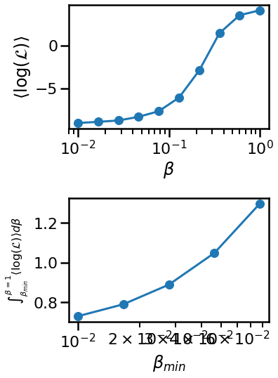
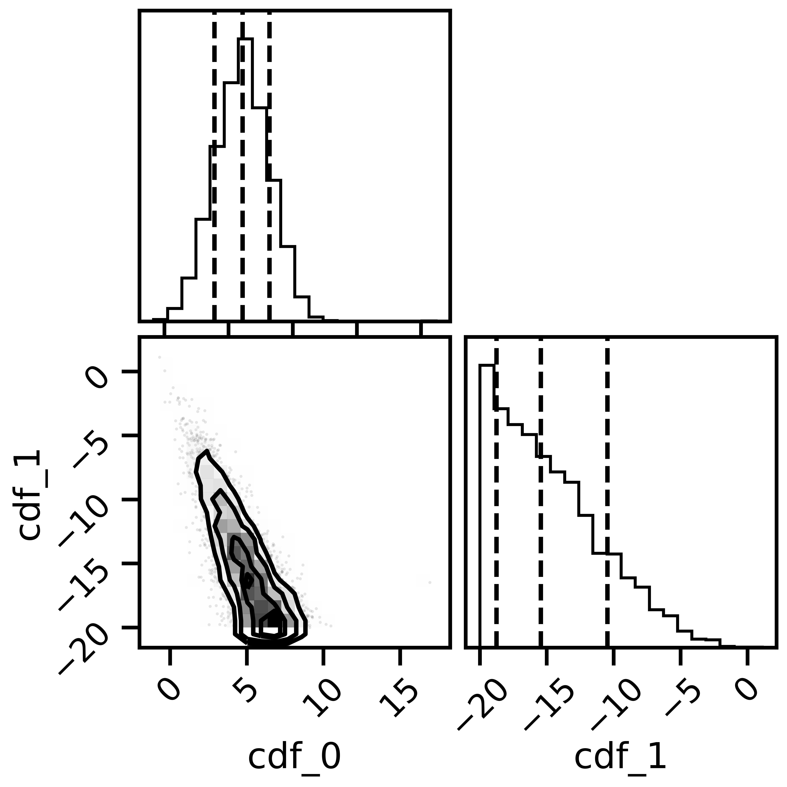

Bivariate Linear Bayesian Model Mixing with SAMBA toy models¶
This notebook shows how to use the Bayesian model mixing package Taweret for a toy problem.
Author : Dan Liyanage
Date : 11/10/2022
More about SAMBA toy models can be found in Uncertainties here, there, and everywhere: interpolating between small- and large-g expansions using Bayesian Model Mixing
Steps for Bayesian Model Mixing with Taweret¶
1. Define your models using BayesModel class in `Taweret.core.bayesmodel` (Only if you want to bring in your own models)
2. Choose a Mixing method (Avilable mixing methods can be found in Taweret/mix)
3. Find the posterior for the mixture weights (parameters in the mixture function) and/or model parameters by training the mixed model.
4. Make predictions!
[1]:
import sys
# You will have to change the following imports depending on where you have
# the packages installed
sys.path.append("/Users/dananjayaliyanage/git/Taweret")
sys.path.append("/Users/dananjayaliyanage/git/SAMBA")
# For plotting
import matplotlib.pyplot as plt
import seaborn as sns
sns.set_context('poster')
# To define priors. (uncoment if not using default priors)
import bilby
# For other operations
import numpy as np
1. Get toymodels and the psuedo-experimental data¶
[2]:
# Toy models from SAMBA
from Taweret.models import samba_models as toy_models
m1 = toy_models.loworder(2, 'uninformative')
m2 = toy_models.highorder(2, 'uninformative')
truth = toy_models.true_model()
exp = toy_models.exp_data()
[3]:
g = np.linspace(0.1, 0.6, 10)
plot_g = np.linspace(0.01,1,100)
m1_prediction = m1.evaluate(plot_g)
m2_prediction = m2.evaluate(plot_g)
true_output = truth.evaluate(plot_g)
exp_data= exp.evaluate(g,error = 0.01)
[4]:
fig, ax_f = plt.subplots(figsize=(10,10))
ax_f.plot(plot_g, m1_prediction[0].flatten(), label='low order')
ax_f.plot(plot_g, m2_prediction[0].flatten(), label='high order')
ax_f.plot(plot_g, true_output[0], label='truth')
ax_f.scatter(g,exp_data[0], marker='x', label='experimental data')
ax_f.set_ylim(1.2,3.2)
ax_f.legend()
[4]:
<matplotlib.legend.Legend at 0x7fc65ef9c908>

2. Choose a Mixing method¶
[5]:
# Mixing method
from Taweret.mix.bivariate_linear import BivariateLinear as BL
models= {'low_order':m1,'high_order':m2}
mix_model = BL(models_dic=models, method='cdf')
cdf mixing function has 2 free parameter(s)
Default prior is set to {'cdf_0': Uniform(minimum=0, maximum=1, name='cdf_0', latex_label='cdf_0', unit=None, boundary=None), 'cdf_1': Uniform(minimum=0, maximum=1, name='cdf_1', latex_label='cdf_1', unit=None, boundary=None)}
To change the prior use `set_prior` method
[7]:
#uncoment to change the prior from the default
priors = bilby.core.prior.PriorDict()
priors['cdf_0'] = bilby.core.prior.Uniform(-20,20, name="cdf_0")
priors['cdf_1'] = bilby.core.prior.Uniform(-20,20, name="cdf_1")
mix_model.set_prior(priors)
[7]:
{'cdf_0': Uniform(minimum=-20, maximum=20, name='cdf_0', latex_label='cdf_0', unit=None, boundary=None),
'cdf_1': Uniform(minimum=-20, maximum=20, name='cdf_1', latex_label='cdf_1', unit=None, boundary=None)}
3. Train to find posterior¶
[8]:
result = mix_model.train(x_exp=g, y_exp=exp_data[0], y_err=exp_data[1],label='cdf_mix')
16:54 bilby INFO : Running for label 'cdf_mix', output will be saved to 'outdir'
The following Default settings for sampler will be used. You can changethese arguments by providing kwargs_for_sampler argement in `train`.Check Bilby documentation for other sampling options.
{'sampler': 'ptemcee', 'ntemps': 10, 'nwalkers': 20, 'Tmax': 100, 'nburn': 200, 'nsamples': 3000, 'threads': 5}
16:54 bilby INFO : Search parameters:
16:54 bilby INFO : cdf_0 = Uniform(minimum=-20, maximum=20, name='cdf_0', latex_label='cdf_0', unit=None, boundary=None)
16:54 bilby INFO : cdf_1 = Uniform(minimum=-20, maximum=20, name='cdf_1', latex_label='cdf_1', unit=None, boundary=None)
16:54 bilby INFO : Single likelihood evaluation took 6.936e-04 s
16:54 bilby WARNING : Supplied argument 'npool' not an argument of 'Ptemcee', removing.
16:54 bilby WARNING : Supplied argument 'nburn' not an argument of 'Ptemcee', removing.
16:54 bilby INFO : Using sampler Ptemcee with kwargs {'ntemps': 10, 'nwalkers': 20, 'Tmax': 100, 'betas': None, 'a': 2.0, 'adaptation_lag': 10000, 'adaptation_time': 100, 'random': None, 'adapt': False, 'swap_ratios': False}
16:54 bilby INFO : Using convergence inputs: ConvergenceInputs(autocorr_c=5, autocorr_tol=50, autocorr_tau=1, gradient_tau=0.1, gradient_mean_log_posterior=0.1, Q_tol=1.02, safety=1, burn_in_nact=50, burn_in_fixed_discard=0, mean_logl_frac=0.01, thin_by_nact=0.5, nsamples=3000, ignore_keys_for_tau=None, min_tau=1, niterations_per_check=5)
16:54 bilby INFO : Creating MultiPool with 5 processes
16:54 bilby INFO : Resume data outdir/cdf_mix_checkpoint_resume.pickle found
16:54 bilby INFO : Resuming from previous run with time=278
16:54 bilby INFO : Starting to sample
279|0:01:11|nc:2.8e+05|a0:0.55-0.60|swp:0.83-1.00|n:-320<3000|t!1(+nan,+0.01)|q:1.00|0.51ms/ev
280|0:01:11|nc:2.8e+05|a0:0.55-0.60|swp:0.83-1.00|n:-300<3000|t!1(+nan,+0.03)|q:1.00|0.40ms/ev
281|0:01:12|nc:2.8e+05|a0:0.55-0.60|swp:0.83-1.00|n:-1280<3000|t!2(+nan,+0.04)|q:1.00|0.27ms/ev
282|0:01:12|nc:2.8e+05|a0:0.55-0.61|swp:0.83-1.00|n:-1260<3000|t!2(+nan,+0.03)|q:0.99|0.27ms/ev
283|0:01:12|nc:2.8e+05|a0:0.55-0.61|swp:0.83-1.00|n:-2240<3000|t!3(+nan,+0.03)|q:0.99|0.26ms/ev
284|0:01:13|nc:2.8e+05|a0:0.55-0.60|swp:0.83-1.00|n:-2220<3000|t!3(+nan,+0.02)|q:0.99|0.26ms/ev
285|0:01:13|nc:2.8e+05|a0:0.55-0.60|swp:0.83-1.00|n:-1600<3000|t!4(+nan,+0.02)|q:0.99|0.27ms/ev
286|0:01:13|nc:2.9e+05|a0:0.55-0.61|swp:0.83-1.00|n:-1590<3000|t!4(+nan,+0.02)|q:0.99|0.27ms/ev
287|0:01:13|nc:2.9e+05|a0:0.55-0.61|swp:0.83-1.00|n:-1580<3000|t!4(+nan,+0.02)|q:0.99|0.27ms/ev
288|0:01:14|nc:2.9e+05|a0:0.55-0.61|swp:0.83-1.00|n:-2070<3000|t!5(+nan,+0.03)|q:0.99|0.26ms/ev
289|0:01:14|nc:2.9e+05|a0:0.55-0.61|swp:0.83-1.00|n:-2060<3000|t!5(+nan,+0.22)|q:0.99|0.24ms/ev
290|0:01:14|nc:2.9e+05|a0:0.55-0.61|swp:0.83-1.00|n:-2050<3000|t!5(+nan,+0.38)|q:0.99|0.25ms/ev
291|0:01:14|nc:2.9e+05|a0:0.55-0.61|swp:0.83-1.00|n:-1693<3000|t!6(+nan,+0.43)|q:0.99|0.24ms/ev
292|0:01:15|nc:2.9e+05|a0:0.55-0.61|swp:0.83-1.00|n:-1686<3000|t!6(+nan,+0.49)|q:0.99|0.24ms/ev
293|0:01:15|nc:2.9e+05|a0:0.55-0.61|swp:0.83-1.00|n:-1680<3000|t!6(+nan,+0.49)|q:0.99|0.24ms/ev
294|0:01:15|nc:2.9e+05|a0:0.56-0.61|swp:0.83-1.00|n:-1673<3000|t!6(+nan,+0.48)|q:0.99|0.25ms/ev
295|0:01:15|nc:3.0e+05|a0:0.55-0.61|swp:0.82-1.00|n:-1666<3000|t!6(+nan,+0.55)|q:0.99|0.25ms/ev
296|0:01:16|nc:3.0e+05|a0:0.56-0.61|swp:0.82-1.00|n:-1993<3000|t!7(+nan,+0.50)|q:0.99|0.25ms/ev
297|0:01:16|nc:3.0e+05|a0:0.55-0.61|swp:0.82-1.00|n:-1986<3000|t!7(+nan,+0.47)|q:0.99|0.25ms/ev
298|0:01:16|nc:3.0e+05|a0:0.55-0.61|swp:0.82-1.00|n:-1980<3000|t!7(+nan,+0.42)|q:0.99|0.26ms/ev
299|0:01:16|nc:3.0e+05|a0:0.56-0.61|swp:0.82-1.00|n:-1973<3000|t!7(+nan,+0.38)|q:0.99|0.27ms/ev
300|0:01:17|nc:3.0e+05|a0:0.55-0.61|swp:0.82-1.00|n:-1966<3000|t!7(+nan,+0.37)|q:0.99|0.26ms/ev
301|0:01:17|nc:3.0e+05|a0:0.55-0.61|swp:0.82-1.00|n:-1960<3000|t!7(+nan,+0.36)|q:0.99|0.27ms/ev
302|0:01:17|nc:3.0e+05|a0:0.55-0.61|swp:0.82-1.00|n:-1953<3000|t!7(+nan,+0.39)|q:0.99|0.28ms/ev
303|0:01:17|nc:3.0e+05|a0:0.56-0.61|swp:0.82-1.00|n:-1946<3000|t!7(+nan,+0.43)|q:0.99|0.29ms/ev
304|0:01:18|nc:3.0e+05|a0:0.56-0.61|swp:0.82-1.00|n:-1705<3000|t!8(+nan,+0.43)|q:0.99|0.28ms/ev
305|0:01:18|nc:3.0e+05|a0:0.56-0.61|swp:0.82-1.00|n:-1700<3000|t!8(+nan,+0.41)|q:0.99|0.28ms/ev
306|0:01:18|nc:3.1e+05|a0:0.56-0.61|swp:0.82-1.00|n:-1695<3000|t!8(+nan,+0.35)|q:0.99|0.29ms/ev
307|0:01:19|nc:3.1e+05|a0:0.56-0.61|swp:0.82-1.00|n:-1690<3000|t!8(+0.43,+0.26)|q:0.99|0.34ms/ev
308|0:01:19|nc:3.1e+05|a0:0.56-0.61|swp:0.82-1.00|n:-1685<3000|t!8(+0.43,+0.11)|q:0.99|0.37ms/ev
309|0:01:19|nc:3.1e+05|a0:0.56-0.61|swp:0.82-1.00|n:-1680<3000|t!8(+0.43,+0.08)|q:0.99|0.39ms/ev
310|0:01:20|nc:3.1e+05|a0:0.56-0.61|swp:0.82-1.00|n:-1675<3000|t!8(+0.43,+0.08)|q:0.99|0.35ms/ev
311|0:01:20|nc:3.1e+05|a0:0.56-0.61|swp:0.82-1.00|n:-1670<3000|t!8(+0.43,+0.08)|q:0.99|0.33ms/ev
312|0:01:20|nc:3.1e+05|a0:0.56-0.61|swp:0.82-1.00|n:-1915<3000|t!9(+0.43,+0.08)|q:0.99|0.30ms/ev
313|0:01:21|nc:3.1e+05|a0:0.56-0.61|swp:0.82-1.00|n:-1910<3000|t!9(+0.43,+0.08)|q:0.99|0.35ms/ev
314|0:01:21|nc:3.1e+05|a0:0.56-0.61|swp:0.82-1.00|n:-1905<3000|t!9(+0.43,+0.09)|q:0.99|0.36ms/ev
315|0:01:21|nc:3.2e+05|a0:0.56-0.61|swp:0.82-1.00|n:-1900<3000|t!9(+0.43,+0.10)|q:0.99|0.37ms/ev
316|0:01:22|nc:3.2e+05|a0:0.56-0.61|swp:0.82-1.00|n:-1895<3000|t!9(+0.43,+0.11)|q:0.99|0.32ms/ev
317|0:01:22|nc:3.2e+05|a0:0.56-0.61|swp:0.82-1.00|n:-1890<3000|t!9(+0.43,+0.12)|q:0.99|0.31ms/ev
318|0:01:22|nc:3.2e+05|a0:0.56-0.61|swp:0.82-1.00|n:-1885<3000|t!9(+0.43,+0.12)|q:0.99|0.32ms/ev
319|0:01:23|nc:3.2e+05|a0:0.56-0.61|swp:0.82-1.00|n:-1880<3000|t!9(+0.43,+0.12)|q:0.99|0.31ms/ev
320|0:01:23|nc:3.2e+05|a0:0.56-0.61|swp:0.82-1.00|n:-1700<3000|t!10(+0.45,+0.28)|q:0.99|0.30ms/ev
321|0:01:23|nc:3.2e+05|a0:0.56-0.61|swp:0.82-1.00|n:-1696<3000|t!10(+0.56,+0.73)|q:0.99|0.28ms/ev
322|0:01:24|nc:3.2e+05|a0:0.56-0.61|swp:0.82-1.00|n:-1692<3000|t!10(+0.60,+0.55)|q:0.99|0.27ms/ev
323|0:01:24|nc:3.2e+05|a0:0.56-0.61|swp:0.82-1.00|n:-1688<3000|t!10(+0.61,+0.35)|q:0.99|0.27ms/ev
324|0:01:24|nc:3.2e+05|a0:0.56-0.61|swp:0.82-1.00|n:-1684<3000|t!10(+0.56,+0.23)|q:0.99|0.26ms/ev
325|0:01:24|nc:3.2e+05|a0:0.56-0.61|swp:0.82-1.00|n:-1680<3000|t!10(+0.52,+0.14)|q:0.99|0.27ms/ev
326|0:01:25|nc:3.3e+05|a0:0.56-0.61|swp:0.82-1.00|n:-1676<3000|t!10(+0.47,+0.12)|q:1.00|0.27ms/ev
327|0:01:25|nc:3.3e+05|a0:0.56-0.61|swp:0.82-1.00|n:-1672<3000|t!10(+0.43,+0.10)|q:1.00|0.27ms/ev
328|0:01:25|nc:3.3e+05|a0:0.56-0.61|swp:0.82-1.00|n:-1868<3000|t!11(+0.38,+0.09)|q:1.00|0.28ms/ev
329|0:01:25|nc:3.3e+05|a0:0.56-0.61|swp:0.82-1.00|n:-1864<3000|t!11(+0.32,+0.06)|q:1.00|0.28ms/ev
330|0:01:26|nc:3.3e+05|a0:0.56-0.61|swp:0.82-1.00|n:-1860<3000|t!11(+0.28,+0.03)|q:1.00|0.27ms/ev
331|0:01:26|nc:3.3e+05|a0:0.56-0.61|swp:0.82-1.00|n:-1856<3000|t!11(+0.25,+0.06)|q:1.00|0.25ms/ev
332|0:01:26|nc:3.3e+05|a0:0.56-0.61|swp:0.82-1.00|n:-1852<3000|t!11(+0.22,+0.06)|q:1.00|0.25ms/ev
333|0:01:26|nc:3.3e+05|a0:0.56-0.61|swp:0.82-1.00|n:-1848<3000|t!11(+0.20,+0.07)|q:1.00|0.25ms/ev
334|0:01:27|nc:3.3e+05|a0:0.56-0.61|swp:0.82-1.00|n:-1844<3000|t!11(+0.18,+0.07)|q:1.00|0.25ms/ev
335|0:01:27|nc:3.4e+05|a0:0.56-0.61|swp:0.82-1.00|n:-1840<3000|t!11(+0.17,+0.06)|q:1.00|0.26ms/ev
336|0:01:27|nc:3.4e+05|a0:0.56-0.61|swp:0.82-1.00|n:-1696<3000|t!12(+0.16,+0.05)|q:1.00|0.26ms/ev
337|0:01:28|nc:3.4e+05|a0:0.56-0.61|swp:0.82-1.00|n:-1693<3000|t!12(+0.15,+0.05)|q:1.00|0.27ms/ev
338|0:01:28|nc:3.4e+05|a0:0.56-0.61|swp:0.82-1.00|n:-1690<3000|t!12(+0.14,+0.10)|q:1.00|0.26ms/ev
339|0:01:28|nc:3.4e+05|a0:0.56-0.61|swp:0.82-1.00|n:-1686<3000|t!12(+0.15,+0.08)|q:1.00|0.26ms/ev
340|0:01:28|nc:3.4e+05|a0:0.56-0.61|swp:0.82-1.00|n:-1683<3000|t!12(+0.16,+0.11)|q:1.00|0.26ms/ev
341|0:01:29|nc:3.4e+05|a0:0.56-0.61|swp:0.82-1.00|n:-1680<3000|t!12(+0.15,+0.05)|q:1.00|0.27ms/ev
342|0:01:29|nc:3.4e+05|a0:0.56-0.61|swp:0.82-1.00|n:-1676<3000|t!12(+0.14,+0.05)|q:1.00|0.26ms/ev
343|0:01:29|nc:3.4e+05|a0:0.57-0.61|swp:0.82-1.00|n:-1673<3000|t!12(+0.13,+0.04)|q:1.00|0.26ms/ev
344|0:01:29|nc:3.4e+05|a0:0.57-0.61|swp:0.82-1.00|n:-1670<3000|t!12(+0.13,+0.04)|q:1.00|0.26ms/ev
345|0:01:30|nc:3.4e+05|a0:0.57-0.61|swp:0.82-1.00|n:-1833<3000|t!13(+0.13,+0.02)|q:1.00|0.26ms/ev
346|0:01:30|nc:3.5e+05|a0:0.57-0.61|swp:0.82-1.00|n:-1830<3000|t!13(+0.13,+0.02)|q:1.00|0.27ms/ev
347|0:01:30|nc:3.5e+05|a0:0.57-0.61|swp:0.82-1.00|n:-1826<3000|t!13(+0.14,+0.04)|q:1.00|0.29ms/ev
348|0:01:30|nc:3.5e+05|a0:0.57-0.61|swp:0.82-1.00|n:-1823<3000|t!13(+0.13,+0.04)|q:1.00|0.30ms/ev
349|0:01:31|nc:3.5e+05|a0:0.57-0.61|swp:0.82-1.00|n:-1820<3000|t!13(+0.14,+0.07)|q:1.00|0.29ms/ev
350|0:01:31|nc:3.5e+05|a0:0.57-0.61|swp:0.82-1.00|n:-1816<3000|t!13(+0.13,+0.08)|q:1.00|0.28ms/ev
351|0:01:31|nc:3.5e+05|a0:0.57-0.61|swp:0.82-0.99|n:-1813<3000|t!13(+0.13,+0.08)|q:1.00|0.29ms/ev
352|0:01:32|nc:3.5e+05|a0:0.57-0.61|swp:0.82-0.99|n:-1810<3000|t!13(+0.13,+0.07)|q:1.00|0.29ms/ev
353|0:01:32|nc:3.5e+05|a0:0.57-0.61|swp:0.82-0.99|n:-1806<3000|t!13(+0.13,+0.05)|q:1.00|0.28ms/ev
354|0:01:32|nc:3.5e+05|a0:0.57-0.61|swp:0.82-0.99|n:-1803<3000|t!13(+0.13,+0.03)|q:1.00|0.27ms/ev
355|0:01:32|nc:3.6e+05|a0:0.57-0.61|swp:0.82-0.99|n:-1685<3000|t!14(+0.14,+0.04)|q:1.00|0.26ms/ev
356|0:01:33|nc:3.6e+05|a0:0.57-0.61|swp:0.82-0.99|n:-1682<3000|t!14(+0.14,+0.03)|q:1.00|0.26ms/ev
357|0:01:33|nc:3.6e+05|a0:0.57-0.61|swp:0.82-0.99|n:-1680<3000|t!14(+0.15,+0.04)|q:1.00|0.27ms/ev
358|0:01:33|nc:3.6e+05|a0:0.57-0.61|swp:0.82-0.99|n:-1677<3000|t!14(+0.13,+0.04)|q:1.00|0.27ms/ev
359|0:01:33|nc:3.6e+05|a0:0.57-0.61|swp:0.82-0.99|n:-1674<3000|t!14(+0.13,+0.08)|q:1.00|0.27ms/ev
360|0:01:34|nc:3.6e+05|a0:0.57-0.61|swp:0.82-0.99|n:-1671<3000|t!14(+0.13,+0.06)|q:1.00|0.26ms/ev
361|0:01:34|nc:3.6e+05|a0:0.57-0.61|swp:0.82-0.99|n:-1668<3000|t!14(+0.13,+0.07)|q:1.00|0.24ms/ev
362|0:01:34|nc:3.6e+05|a0:0.57-0.61|swp:0.82-0.99|n:-1665<3000|t!14(+0.13,+0.06)|q:1.00|0.25ms/ev
363|0:01:34|nc:3.6e+05|a0:0.57-0.61|swp:0.82-0.99|n:-1662<3000|t!14(+0.13,+0.04)|q:1.00|0.25ms/ev
364|0:01:35|nc:3.6e+05|a0:0.57-0.61|swp:0.82-0.99|n:-1660<3000|t!14(+0.13,+0.04)|q:1.00|0.25ms/ev
365|0:01:35|nc:3.6e+05|a0:0.57-0.61|swp:0.82-0.99|n:-1800<3000|t!15(+0.14,+0.05)|q:1.00|0.25ms/ev
366|0:01:35|nc:3.7e+05|a0:0.57-0.61|swp:0.82-0.99|n:-1797<3000|t!15(+0.15,+0.04)|q:1.00|0.25ms/ev
367|0:01:35|nc:3.7e+05|a0:0.57-0.61|swp:0.82-0.99|n:-1794<3000|t!15(+0.16,+0.03)|q:1.00|0.26ms/ev
368|0:01:36|nc:3.7e+05|a0:0.57-0.61|swp:0.82-0.99|n:-1791<3000|t!15(+0.15,+0.03)|q:1.00|0.25ms/ev
369|0:01:36|nc:3.7e+05|a0:0.57-0.61|swp:0.82-0.99|n:-1788<3000|t!15(+0.13,+0.10)|q:1.00|0.25ms/ev
370|0:01:36|nc:3.7e+05|a0:0.57-0.61|swp:0.82-0.99|n:-1785<3000|t!15(+0.13,+0.11)|q:1.00|0.25ms/ev
371|0:01:36|nc:3.7e+05|a0:0.57-0.61|swp:0.82-0.99|n:-1782<3000|t!15(+0.14,+0.06)|q:1.00|0.25ms/ev
372|0:01:37|nc:3.7e+05|a0:0.57-0.61|swp:0.82-0.99|n:-1780<3000|t!15(+0.15,+0.07)|q:1.00|0.25ms/ev
373|0:01:37|nc:3.7e+05|a0:0.57-0.61|swp:0.82-0.99|n:-1777<3000|t!15(+0.12,+0.07)|q:1.00|0.25ms/ev
374|0:01:37|nc:3.7e+05|a0:0.57-0.61|swp:0.82-0.99|n:-1774<3000|t!15(+0.12,+0.05)|q:1.00|0.24ms/ev
375|0:01:37|nc:3.8e+05|a0:0.57-0.61|swp:0.82-0.99|n:-1675<3000|t!16(+0.12,+0.06)|q:1.00|0.25ms/ev
376|0:01:38|nc:3.8e+05|a0:0.57-0.61|swp:0.82-0.99|n:-1672<3000|t!16(+0.12,+0.04)|q:1.00|0.26ms/ev
377|0:01:38|nc:3.8e+05|a0:0.57-0.61|swp:0.82-0.99|n:-1670<3000|t!16(+0.12,+0.07)|q:1.00|0.26ms/ev
378|0:01:38|nc:3.8e+05|a0:0.57-0.61|swp:0.82-0.99|n:-1667<3000|t!16(+0.12,+0.08)|q:1.00|0.25ms/ev
379|0:01:38|nc:3.8e+05|a0:0.57-0.61|swp:0.82-0.99|n:-1665<3000|t!16(+0.12,+0.10)|q:1.00|0.25ms/ev
380|0:01:39|nc:3.8e+05|a0:0.57-0.61|swp:0.82-0.99|n:-1662<3000|t!16(+0.13,+0.10)|q:1.00|0.25ms/ev
381|0:01:39|nc:3.8e+05|a0:0.57-0.61|swp:0.82-0.99|n:-1660<3000|t!16(+0.13,+0.04)|q:1.00|0.25ms/ev
382|0:01:39|nc:3.8e+05|a0:0.57-0.61|swp:0.82-0.99|n:-1657<3000|t!16(+0.15,+0.06)|q:1.00|0.25ms/ev
383|0:01:40|nc:3.8e+05|a0:0.57-0.61|swp:0.82-0.99|n:-1655<3000|t!16(+0.13,+0.10)|q:1.00|0.25ms/ev
384|0:01:40|nc:3.8e+05|a0:0.57-0.61|swp:0.82-0.99|n:-1652<3000|t!16(+0.12,+0.05)|q:1.00|0.25ms/ev
385|0:01:40|nc:3.8e+05|a0:0.57-0.61|swp:0.82-0.99|n:-1650<3000|t!16(+0.13,+0.04)|q:1.00|0.26ms/ev
386|0:01:40|nc:3.9e+05|a0:0.57-0.61|swp:0.82-0.99|n:-1647<3000|t!16(+0.11,+0.04)|q:1.00|0.25ms/ev
387|0:01:41|nc:3.9e+05|a0:0.57-0.61|swp:0.82-0.99|n:-1645<3000|t!16(+0.11,+0.04)|q:1.00|0.25ms/ev
388|0:01:41|nc:3.9e+05|a0:0.57-0.61|swp:0.82-0.99|n:-1767<3000|t!17(+0.11,+0.03)|q:1.00|0.25ms/ev
389|0:01:41|nc:3.9e+05|a0:0.57-0.61|swp:0.82-0.99|n:-1765<3000|t!17(+0.11,+0.02)|q:1.00|0.25ms/ev
390|0:01:41|nc:3.9e+05|a0:0.57-0.61|swp:0.82-0.99|n:-1762<3000|t!17(+0.11,+0.02)|q:1.00|0.24ms/ev
391|0:01:41|nc:3.9e+05|a0:0.57-0.61|swp:0.82-0.99|n:-1760<3000|t!17(+0.11,+0.03)|q:1.00|0.24ms/ev
392|0:01:42|nc:3.9e+05|a0:0.57-0.61|swp:0.82-0.99|n:-1757<3000|t!17(+0.12,+0.02)|q:1.00|0.24ms/ev
393|0:01:42|nc:3.9e+05|a0:0.58-0.61|swp:0.82-0.99|n:-1755<3000|t!17(+0.12,+0.05)|q:1.00|0.24ms/ev
394|0:01:42|nc:3.9e+05|a0:0.58-0.61|swp:0.82-0.99|n:-1752<3000|t!17(+0.11,+0.05)|q:1.00|0.24ms/ev
395|0:01:42|nc:4.0e+05|a0:0.58-0.61|swp:0.82-0.99|n:-1750<3000|t!17(+0.11,+0.06)|q:1.00|0.24ms/ev
396|0:01:43|nc:4.0e+05|a0:0.58-0.61|swp:0.82-0.99|n:-1747<3000|t!17(+0.11,+0.06)|q:1.00|0.25ms/ev
397|0:01:43|nc:4.0e+05|a0:0.57-0.62|swp:0.82-0.99|n:-1745<3000|t!17(+0.11,+0.11)|q:1.00|0.25ms/ev
398|0:01:43|nc:4.0e+05|a0:0.57-0.62|swp:0.82-0.99|n:-1742<3000|t!17(+0.11,+0.10)|q:1.00|0.25ms/ev
399|0:01:43|nc:4.0e+05|a0:0.57-0.62|swp:0.82-0.99|n:-1740<3000|t!17(+0.11,+0.03)|q:1.00|0.25ms/ev
400|0:01:44|nc:4.0e+05|a0:0.57-0.62|swp:0.82-0.99|n:-1737<3000|t!17(+0.11,+0.03)|q:1.00|0.25ms/ev
401|0:01:44|nc:4.0e+05|a0:0.57-0.62|swp:0.82-0.99|n:-1735<3000|t!17(+0.11,+0.04)|q:1.00|0.25ms/ev
402|0:01:44|nc:4.0e+05|a0:0.57-0.62|swp:0.82-0.99|n:-1651<3000|t!18(+0.12,+0.04)|q:1.00|0.24ms/ev
403|0:01:44|nc:4.0e+05|a0:0.57-0.61|swp:0.82-0.99|n:-1648<3000|t!18(+0.13,+0.08)|q:1.00|0.24ms/ev
404|0:01:45|nc:4.0e+05|a0:0.57-0.62|swp:0.82-0.99|n:-1646<3000|t!18(+0.13,+0.07)|q:1.00|0.24ms/ev
405|0:01:45|nc:4.0e+05|a0:0.57-0.62|swp:0.82-0.99|n:-1644<3000|t!18(+0.11,+0.06)|q:1.00|0.25ms/ev
406|0:01:45|nc:4.1e+05|a0:0.57-0.62|swp:0.82-0.99|n:-1642<3000|t!18(+0.10,+0.09)|q:1.00|0.24ms/ev
407|0:01:45|nc:4.1e+05|a0:0.57-0.61|swp:0.82-0.99|n:-1640<3000|t!18(+0.10,+0.04)|q:1.00|0.24ms/ev
408|0:01:46|nc:4.1e+05|a0:0.57-0.61|swp:0.82-0.99|n:-1637<3000|t!18(+0.10,+0.05)|q:1.00|0.24ms/ev
409|0:01:46|nc:4.1e+05|a0:0.57-0.61|swp:0.82-0.99|n:-1635<3000|t!18(+0.10,+0.06)|q:1.00|0.24ms/ev
410|0:01:46|nc:4.1e+05|a0:0.57-0.61|swp:0.82-0.99|n:-1633<3000|t!18(+0.11,+0.07)|q:1.00|0.24ms/ev
411|0:01:46|nc:4.1e+05|a0:0.58-0.61|swp:0.82-0.99|n:-1631<3000|t!18(+0.12,+0.04)|q:1.00|0.24ms/ev
412|0:01:47|nc:4.1e+05|a0:0.57-0.61|swp:0.82-0.99|n:-1628<3000|t!18(+0.10,+0.06)|q:1.00|0.24ms/ev
413|0:01:47|nc:4.1e+05|a0:0.58-0.62|swp:0.82-0.99|n:-1626<3000|t!18(+0.10,+0.03)|q:1.00|0.24ms/ev
414|0:01:47|nc:4.1e+05|a0:0.58-0.62|swp:0.82-0.99|n:-1624<3000|t!18(+0.10,+0.05)|q:1.00|0.24ms/ev
415|0:01:47|nc:4.2e+05|a0:0.58-0.62|swp:0.82-0.99|n:-1622<3000|t!18(+0.10,+0.05)|q:1.00|0.24ms/ev
416|0:01:48|nc:4.2e+05|a0:0.58-0.62|swp:0.82-0.99|n:-1620<3000|t!18(+0.10,+0.03)|q:1.00|0.24ms/ev
417|0:01:48|nc:4.2e+05|a0:0.58-0.62|swp:0.82-0.99|n:-1617<3000|t!18(+0.09,+0.04)|q:1.00|0.24ms/ev
418|0:01:48|nc:4.2e+05|a0:0.58-0.62|swp:0.82-0.99|n:-1615<3000|t!18(+0.08,+0.06)|q:1.00|0.24ms/ev
419|0:01:48|nc:4.2e+05|a0:0.58-0.62|swp:0.82-0.99|n:-1724<3000|t!19(+0.08,+0.07)|q:1.00|0.24ms/ev
420|0:01:48|nc:4.2e+05|a0:0.58-0.62|swp:0.82-0.99|n:-1722<3000|t!19(+0.08,+0.06)|q:1.00|0.24ms/ev
421|0:01:49|nc:4.2e+05|a0:0.58-0.62|swp:0.82-0.99|n:-1720<3000|t!19(+0.08,+0.04)|q:1.00|0.24ms/ev
422|0:01:49|nc:4.2e+05|a0:0.58-0.62|swp:0.81-0.99|n:-1717<3000|t!19(+0.08,+0.08)|q:1.00|0.24ms/ev
423|0:01:49|nc:4.2e+05|a0:0.58-0.62|swp:0.81-0.99|n:-1715<3000|t!19(+0.08,+0.06)|q:1.00|0.24ms/ev
424|0:01:49|nc:4.2e+05|a0:0.58-0.62|swp:0.81-0.99|n:-1713<3000|t!19(+0.08,+0.05)|q:1.00|0.24ms/ev
425|0:01:50|nc:4.2e+05|a0:0.58-0.62|swp:0.81-0.99|n:-1711<3000|t!19(+0.09,+0.05)|q:1.00|0.24ms/ev
426|0:01:50|nc:4.3e+05|a0:0.58-0.62|swp:0.81-0.99|n:-1708<3000|t!19(+0.09,+0.04)|q:1.00|0.25ms/ev
427|0:01:50|nc:4.3e+05|a0:0.58-0.62|swp:0.81-0.99|n:-1706<3000|t!19(+0.10,+0.06)|q:1.00|0.25ms/ev
428|0:01:50|nc:4.3e+05|a0:0.58-0.62|swp:0.81-0.99|n:-1704<3000|t!19(+0.11,+0.04)|q:1.00|0.25ms/ev
429|0:01:51|nc:4.3e+05|a0:0.58-0.62|swp:0.81-0.99|n:-1702<3000|t!19(+0.10,+0.06)|q:1.00|0.25ms/ev
430|0:01:51|nc:4.3e+05|a0:0.58-0.62|swp:0.81-0.99|n:-1700<3000|t!19(+0.08,+0.09)|q:1.00|0.25ms/ev
431|0:01:51|nc:4.3e+05|a0:0.58-0.62|swp:0.81-0.99|n:-1697<3000|t!19(+0.08,+0.06)|q:1.00|0.25ms/ev
432|0:01:51|nc:4.3e+05|a0:0.58-0.62|swp:0.81-0.99|n:-1695<3000|t!19(+0.07,+0.03)|q:1.00|0.25ms/ev
433|0:01:52|nc:4.3e+05|a0:0.58-0.62|swp:0.81-0.99|n:-1693<3000|t!19(+0.07,+0.03)|q:1.00|0.25ms/ev
434|0:01:52|nc:4.3e+05|a0:0.58-0.62|swp:0.81-0.99|n:-1691<3000|t!19(+0.08,+0.03)|q:1.00|0.25ms/ev
435|0:01:52|nc:4.4e+05|a0:0.58-0.62|swp:0.81-0.99|n:-1688<3000|t!19(+0.08,+0.03)|q:1.00|0.25ms/ev
436|0:01:52|nc:4.4e+05|a0:0.58-0.62|swp:0.81-0.99|n:-1686<3000|t!19(+0.07,+0.05)|q:1.00|0.25ms/ev
437|0:01:53|nc:4.4e+05|a0:0.58-0.62|swp:0.81-0.99|n:-1684<3000|t!19(+0.08,+0.09)|q:1.00|0.25ms/ev
438|0:01:53|nc:4.4e+05|a0:0.58-0.62|swp:0.81-0.99|n:-1682<3000|t!19(+0.08,+0.08)|q:1.00|0.25ms/ev
439|0:01:53|nc:4.4e+05|a0:0.58-0.62|swp:0.81-0.99|n:-1680<3000|t!19(+0.06,+0.10)|q:1.00|0.25ms/ev
440|0:01:53|nc:4.4e+05|a0:0.58-0.62|swp:0.81-0.99|n:-1610<3000|t!20(+0.06,+0.06)|q:1.00|0.25ms/ev
441|0:01:54|nc:4.4e+05|a0:0.58-0.62|swp:0.81-0.99|n:-1608<3000|t!20(+0.06,+0.05)|q:1.00|0.24ms/ev
442|0:01:54|nc:4.4e+05|a0:0.58-0.62|swp:0.81-0.99|n:-1606<3000|t!20(+0.06,+0.04)|q:1.00|0.25ms/ev
443|0:01:54|nc:4.4e+05|a0:0.58-0.62|swp:0.81-0.99|n:-1604<3000|t!20(+0.06,+0.03)|q:1.00|0.24ms/ev
444|0:01:54|nc:4.4e+05|a0:0.58-0.62|swp:0.81-0.99|n:-1602<3000|t!20(+0.06,+0.04)|q:1.00|0.24ms/ev
445|0:01:55|nc:4.4e+05|a0:0.58-0.62|swp:0.81-0.99|n:-1600<3000|t!20(+0.06,+0.08)|q:1.00|0.25ms/ev
446|0:01:55|nc:4.5e+05|a0:0.58-0.62|swp:0.81-0.99|n:-1598<3000|t!20(+0.07,+0.06)|q:1.00|0.25ms/ev
447|0:01:55|nc:4.5e+05|a0:0.58-0.62|swp:0.81-0.99|n:-1596<3000|t!20(+0.06,+0.03)|q:1.00|0.25ms/ev
448|0:01:55|nc:4.5e+05|a0:0.58-0.62|swp:0.81-0.99|n:-1594<3000|t!20(+0.06,+0.03)|q:1.00|0.24ms/ev
449|0:01:56|nc:4.5e+05|a0:0.58-0.62|swp:0.81-0.99|n:-1592<3000|t!20(+0.06,+0.03)|q:1.00|0.24ms/ev
450|0:01:56|nc:4.5e+05|a0:0.58-0.62|swp:0.81-0.99|n:-1590<3000|t!20(+0.06,+0.07)|q:1.00|0.24ms/ev
451|0:01:56|nc:4.5e+05|a0:0.58-0.62|swp:0.81-0.99|n:-1588<3000|t!20(+0.06,+0.08)|q:1.00|0.24ms/ev
452|0:01:56|nc:4.5e+05|a0:0.58-0.62|swp:0.81-0.99|n:-1586<3000|t!20(+0.06,+0.11)|q:1.00|0.24ms/ev
453|0:01:57|nc:4.5e+05|a0:0.58-0.62|swp:0.81-0.99|n:-1584<3000|t!20(+0.07,+0.11)|q:1.00|0.24ms/ev
454|0:01:57|nc:4.5e+05|a0:0.58-0.62|swp:0.81-0.99|n:-1582<3000|t!20(+0.08,+0.08)|q:1.00|0.24ms/ev
455|0:01:57|nc:4.6e+05|a0:0.58-0.62|swp:0.81-0.99|n:-1580<3000|t!20(+0.08,+0.03)|q:1.00|0.24ms/ev
456|0:01:57|nc:4.6e+05|a0:0.58-0.62|swp:0.81-0.99|n:-1578<3000|t!20(+0.08,+0.03)|q:1.00|0.24ms/ev
457|0:01:58|nc:4.6e+05|a0:0.58-0.62|swp:0.81-0.99|n:-1576<3000|t!20(+0.07,+0.03)|q:1.00|0.24ms/ev
458|0:01:58|nc:4.6e+05|a0:0.58-0.62|swp:0.81-0.99|n:-1574<3000|t!20(+0.07,+0.05)|q:1.00|0.24ms/ev
459|0:01:58|nc:4.6e+05|a0:0.58-0.62|swp:0.81-0.99|n:-1572<3000|t!20(+0.06,+0.05)|q:1.00|0.24ms/ev
460|0:01:58|nc:4.6e+05|a0:0.58-0.62|swp:0.81-0.99|n:-1570<3000|t!20(+0.06,+0.04)|q:1.00|0.24ms/ev
461|0:01:59|nc:4.6e+05|a0:0.58-0.62|swp:0.81-0.99|n:-1568<3000|t!20(+0.06,+0.05)|q:1.00|0.24ms/ev
462|0:01:59|nc:4.6e+05|a0:0.58-0.62|swp:0.81-0.99|n:-1566<3000|t!20(+0.06,+0.06)|q:1.00|0.25ms/ev
463|0:01:59|nc:4.6e+05|a0:0.58-0.62|swp:0.81-0.99|n:-1564<3000|t!20(+0.06,+0.05)|q:1.00|0.25ms/ev
464|0:01:59|nc:4.6e+05|a0:0.58-0.62|swp:0.81-0.99|n:-1562<3000|t!20(+0.06,+0.05)|q:1.00|0.25ms/ev
465|0:02:00|nc:4.6e+05|a0:0.58-0.62|swp:0.81-0.99|n:-1560<3000|t!20(+0.06,+0.06)|q:1.00|0.25ms/ev
466|0:02:00|nc:4.7e+05|a0:0.58-0.62|swp:0.81-0.99|n:-1558<3000|t!20(+0.06,+0.05)|q:1.00|0.25ms/ev
467|0:02:00|nc:4.7e+05|a0:0.58-0.62|swp:0.81-0.99|n:-1556<3000|t!20(+0.06,+0.06)|q:1.00|0.25ms/ev
468|0:02:00|nc:4.7e+05|a0:0.58-0.62|swp:0.81-0.99|n:-1554<3000|t!20(+0.07,+0.06)|q:1.00|0.25ms/ev
469|0:02:01|nc:4.7e+05|a0:0.58-0.62|swp:0.81-0.99|n:-1552<3000|t!20(+0.08,+0.10)|q:1.00|0.25ms/ev
470|0:02:01|nc:4.7e+05|a0:0.58-0.62|swp:0.81-0.99|n:-1550<3000|t!20(+0.08,+0.09)|q:1.00|0.25ms/ev
471|0:02:01|nc:4.7e+05|a0:0.58-0.62|swp:0.81-0.99|n:-1548<3000|t!20(+0.08,+0.10)|q:1.00|0.25ms/ev
472|0:02:01|nc:4.7e+05|a0:0.58-0.62|swp:0.80-0.99|n:-1546<3000|t!20(+0.07,+0.05)|q:1.00|0.31ms/ev
473|0:02:02|nc:4.7e+05|a0:0.58-0.62|swp:0.80-0.99|n:-1544<3000|t!20(+0.06,+0.05)|q:1.00|0.31ms/ev
474|0:02:02|nc:4.7e+05|a0:0.58-0.62|swp:0.80-0.99|n:-1542<3000|t!20(+0.06,+0.03)|q:1.00|0.32ms/ev
475|0:02:02|nc:4.8e+05|a0:0.58-0.62|swp:0.80-0.99|n:-1540<3000|t!20(+0.04,+0.04)|q:1.00|0.26ms/ev
476|0:02:02|nc:4.8e+05|a0:0.58-0.62|swp:0.80-0.99|n:-1538<3000|t!20(+0.04,+0.02)|q:1.00|0.26ms/ev
477|0:02:03|nc:4.8e+05|a0:0.58-0.62|swp:0.80-0.99|n:-1536<3000|t!20(+0.04,+0.03)|q:1.00|0.25ms/ev
478|0:02:03|nc:4.8e+05|a0:0.58-0.62|swp:0.80-0.99|n:-1534<3000|t!20(+0.04,+0.03)|q:1.00|0.24ms/ev
479|0:02:03|nc:4.8e+05|a0:0.58-0.62|swp:0.80-0.99|n:-1532<3000|t!20(+0.04,+0.05)|q:1.00|0.24ms/ev
480|0:02:03|nc:4.8e+05|a0:0.58-0.62|swp:0.80-0.99|n:-1530<3000|t!20(+0.04,+0.06)|q:1.00|0.24ms/ev
481|0:02:04|nc:4.8e+05|a0:0.58-0.62|swp:0.80-0.99|n:-1528<3000|t!20(+0.04,+0.02)|q:1.00|0.24ms/ev
482|0:02:04|nc:4.8e+05|a0:0.58-0.62|swp:0.80-0.99|n:-1526<3000|t!20(+0.05,+0.02)|q:1.00|0.24ms/ev
483|0:02:04|nc:4.8e+05|a0:0.58-0.62|swp:0.80-0.99|n:-1524<3000|t!20(+0.06,+0.03)|q:1.00|0.25ms/ev
484|0:02:04|nc:4.8e+05|a0:0.58-0.62|swp:0.80-0.99|n:-1522<3000|t!20(+0.06,+0.02)|q:1.00|0.25ms/ev
485|0:02:05|nc:4.8e+05|a0:0.58-0.62|swp:0.80-0.99|n:-1520<3000|t!20(+0.05,+0.02)|q:1.00|0.25ms/ev
486|0:02:05|nc:4.9e+05|a0:0.58-0.62|swp:0.80-0.99|n:-1518<3000|t!20(+0.04,+0.02)|q:1.00|0.24ms/ev
487|0:02:05|nc:4.9e+05|a0:0.58-0.63|swp:0.80-0.99|n:-1516<3000|t!20(+0.02,+0.02)|q:1.00|0.24ms/ev
488|0:02:05|nc:4.9e+05|a0:0.58-0.63|swp:0.80-0.99|n:-1514<3000|t!20(+0.02,+0.02)|q:1.00|0.24ms/ev
489|0:02:06|nc:4.9e+05|a0:0.58-0.63|swp:0.80-0.99|n:-1512<3000|t!20(+0.02,+0.02)|q:1.00|0.24ms/ev
490|0:02:06|nc:4.9e+05|a0:0.58-0.63|swp:0.80-0.99|n:-1510<3000|t!20(+0.02,+0.04)|q:1.00|0.24ms/ev
491|0:02:06|nc:4.9e+05|a0:0.58-0.63|swp:0.80-0.99|n:-1508<3000|t!20(+0.03,+0.05)|q:1.00|0.24ms/ev
492|0:02:06|nc:4.9e+05|a0:0.58-0.62|swp:0.80-0.99|n:-1506<3000|t!20(+0.02,+0.06)|q:1.00|0.24ms/ev
493|0:02:07|nc:4.9e+05|a0:0.58-0.62|swp:0.80-0.99|n:-1504<3000|t!20(+0.02,+0.11)|q:1.00|0.24ms/ev
494|0:02:07|nc:4.9e+05|a0:0.58-0.62|swp:0.80-0.99|n:-1502<3000|t!20(+0.03,+0.06)|q:1.00|0.24ms/ev
495|0:02:07|nc:5.0e+05|a0:0.58-0.62|swp:0.80-0.99|n:-1600<3000|t!21(+0.02,+0.04)|q:1.00|0.24ms/ev
496|0:02:07|nc:5.0e+05|a0:0.58-0.62|swp:0.80-0.99|n:-1598<3000|t!21(+0.02,+0.04)|q:1.00|0.25ms/ev
497|0:02:08|nc:5.0e+05|a0:0.58-0.62|swp:0.80-0.99|n:-1596<3000|t!21(+0.02,+0.06)|q:1.00|0.26ms/ev
498|0:02:08|nc:5.0e+05|a0:0.58-0.62|swp:0.80-0.99|n:-1594<3000|t!21(+0.02,+0.06)|q:1.00|0.27ms/ev
499|0:02:08|nc:5.0e+05|a0:0.58-0.62|swp:0.80-0.99|n:-1592<3000|t!21(+0.02,+0.06)|q:1.00|0.27ms/ev
500|0:02:08|nc:5.0e+05|a0:0.58-0.62|swp:0.80-0.99|n:-1590<3000|t!21(+0.02,+0.10)|q:1.00|0.27ms/ev
501|0:02:09|nc:5.0e+05|a0:0.58-0.62|swp:0.80-0.99|n:-1588<3000|t!21(+0.02,+0.10)|q:1.00|0.28ms/ev
502|0:02:09|nc:5.0e+05|a0:0.59-0.62|swp:0.80-0.99|n:-1586<3000|t!21(+0.02,+0.10)|q:1.00|0.27ms/ev
503|0:02:09|nc:5.0e+05|a0:0.59-0.62|swp:0.80-0.99|n:-1584<3000|t!21(+0.02,+0.07)|q:1.00|0.28ms/ev
504|0:02:10|nc:5.0e+05|a0:0.59-0.62|swp:0.79-0.99|n:-1582<3000|t!21(+0.02,+0.13)|q:1.00|0.27ms/ev
505|0:02:10|nc:5.0e+05|a0:0.59-0.62|swp:0.79-0.99|n:-1580<3000|t!21(+0.02,+0.12)|q:1.00|0.27ms/ev
506|0:02:10|nc:5.1e+05|a0:0.59-0.62|swp:0.79-0.99|n:-1578<3000|t!21(+0.02,+0.12)|q:1.00|0.28ms/ev
507|0:02:10|nc:5.1e+05|a0:0.59-0.62|swp:0.79-0.99|n:-1576<3000|t!21(+0.02,+0.07)|q:1.00|0.28ms/ev
508|0:02:11|nc:5.1e+05|a0:0.59-0.62|swp:0.79-0.99|n:-1574<3000|t!21(+0.03,+0.07)|q:1.00|0.29ms/ev
509|0:02:11|nc:5.1e+05|a0:0.59-0.62|swp:0.79-0.99|n:-1572<3000|t!21(+0.03,+0.08)|q:1.00|0.30ms/ev
510|0:02:11|nc:5.1e+05|a0:0.59-0.62|swp:0.79-0.99|n:-1570<3000|t!21(+0.02,+0.04)|q:1.00|0.29ms/ev
511|0:02:12|nc:5.1e+05|a0:0.59-0.62|swp:0.79-0.99|n:-1568<3000|t!21(+0.02,+0.03)|q:1.00|0.30ms/ev
512|0:02:12|nc:5.1e+05|a0:0.59-0.62|swp:0.79-0.99|n:-1566<3000|t!21(+0.02,+0.04)|q:1.00|0.29ms/ev
513|0:02:12|nc:5.1e+05|a0:0.59-0.62|swp:0.79-0.99|n:-1564<3000|t!21(+0.02,+0.05)|q:1.00|0.29ms/ev
514|0:02:12|nc:5.1e+05|a0:0.59-0.63|swp:0.79-0.99|n:-1562<3000|t!21(+0.02,+0.05)|q:1.00|0.29ms/ev
515|0:02:13|nc:5.2e+05|a0:0.59-0.62|swp:0.79-0.99|n:-1560<3000|t!21(+0.02,+0.04)|q:1.00|0.29ms/ev
516|0:02:13|nc:5.2e+05|a0:0.59-0.62|swp:0.79-0.99|n:-1558<3000|t!21(+0.02,+0.03)|q:1.00|0.29ms/ev
517|0:02:13|nc:5.2e+05|a0:0.59-0.62|swp:0.79-0.99|n:-1556<3000|t!21(+0.02,+0.06)|q:1.00|0.29ms/ev
518|0:02:14|nc:5.2e+05|a0:0.59-0.62|swp:0.79-0.99|n:-1554<3000|t!21(+0.02,+0.05)|q:1.00|0.29ms/ev
519|0:02:14|nc:5.2e+05|a0:0.59-0.62|swp:0.79-0.99|n:-1552<3000|t!21(+0.02,+0.03)|q:1.00|0.30ms/ev
520|0:02:14|nc:5.2e+05|a0:0.59-0.63|swp:0.79-0.99|n:-1550<3000|t!21(+0.02,+0.04)|q:1.00|0.29ms/ev
521|0:02:14|nc:5.2e+05|a0:0.59-0.63|swp:0.79-0.99|n:-1548<3000|t!21(+0.03,+0.02)|q:1.00|0.29ms/ev
522|0:02:15|nc:5.2e+05|a0:0.59-0.63|swp:0.79-0.99|n:-1546<3000|t!21(+0.03,+0.02)|q:1.00|0.29ms/ev
523|0:02:15|nc:5.2e+05|a0:0.59-0.63|swp:0.79-0.99|n:-1544<3000|t!21(+0.03,+0.03)|q:1.00|0.29ms/ev
524|0:02:15|nc:5.2e+05|a0:0.59-0.63|swp:0.79-0.99|n:-1542<3000|t!21(+0.02,+0.02)|q:1.00|0.29ms/ev
525|0:02:16|nc:5.2e+05|a0:0.59-0.63|swp:0.79-0.99|n:-1540<3000|t!21(+0.01,+0.03)|q:1.00|0.30ms/ev
526|0:02:16|nc:5.3e+05|a0:0.59-0.63|swp:0.79-0.99|n:-1538<3000|t!21(+0.01,+0.03)|q:1.00|0.30ms/ev
527|0:02:16|nc:5.3e+05|a0:0.59-0.63|swp:0.79-0.99|n:-1536<3000|t!21(+0.01,+0.02)|q:1.00|0.30ms/ev
528|0:02:17|nc:5.3e+05|a0:0.59-0.63|swp:0.79-0.99|n:-1534<3000|t!21(+0.02,+0.02)|q:1.00|0.30ms/ev
529|0:02:17|nc:5.3e+05|a0:0.59-0.63|swp:0.79-0.99|n:-1532<3000|t!21(+0.02,+0.04)|q:1.00|0.30ms/ev
530|0:02:17|nc:5.3e+05|a0:0.59-0.63|swp:0.79-0.99|n:-1530<3000|t!21(+0.02,+0.06)|q:1.00|0.30ms/ev
531|0:02:17|nc:5.3e+05|a0:0.59-0.63|swp:0.79-0.99|n:-1528<3000|t!21(+0.02,+0.06)|q:1.00|0.30ms/ev
532|0:02:18|nc:5.3e+05|a0:0.59-0.63|swp:0.79-0.99|n:-1526<3000|t!21(+0.02,+0.05)|q:1.00|0.30ms/ev
533|0:02:18|nc:5.3e+05|a0:0.59-0.63|swp:0.79-0.99|n:-1524<3000|t!21(+0.01,+0.05)|q:1.00|0.30ms/ev
534|0:02:18|nc:5.3e+05|a0:0.59-0.63|swp:0.79-0.99|n:-1522<3000|t!21(+0.01,+0.06)|q:1.00|0.30ms/ev
535|0:02:19|nc:5.4e+05|a0:0.59-0.63|swp:0.79-0.99|n:-1520<3000|t!21(+0.01,+0.08)|q:1.00|0.32ms/ev
536|0:02:19|nc:5.4e+05|a0:0.59-0.63|swp:0.79-0.99|n:-1518<3000|t!21(+0.01,+0.07)|q:1.00|0.34ms/ev
537|0:02:19|nc:5.4e+05|a0:0.59-0.63|swp:0.79-0.99|n:-1516<3000|t!21(+0.01,+0.06)|q:1.00|0.36ms/ev
538|0:02:20|nc:5.4e+05|a0:0.59-0.63|swp:0.79-0.99|n:-1514<3000|t!21(+0.02,+0.11)|q:1.00|0.36ms/ev
539|0:02:20|nc:5.4e+05|a0:0.59-0.63|swp:0.79-0.99|n:-1512<3000|t!21(+0.03,+0.11)|q:1.00|0.35ms/ev
540|0:02:20|nc:5.4e+05|a0:0.59-0.63|swp:0.79-0.99|n:-1510<3000|t!21(+0.02,+0.06)|q:1.00|0.34ms/ev
541|0:02:21|nc:5.4e+05|a0:0.59-0.63|swp:0.79-0.99|n:-1508<3000|t!21(+0.01,+0.07)|q:1.00|0.32ms/ev
542|0:02:21|nc:5.4e+05|a0:0.59-0.63|swp:0.79-0.99|n:-1506<3000|t!21(+0.01,+0.05)|q:1.00|0.33ms/ev
543|0:02:21|nc:5.4e+05|a0:0.59-0.63|swp:0.78-0.99|n:-1504<3000|t!21(+0.01,+0.03)|q:1.00|0.35ms/ev
544|0:02:22|nc:5.4e+05|a0:0.59-0.63|swp:0.78-0.99|n:-1502<3000|t!21(+0.01,+0.04)|q:1.00|0.35ms/ev
545|0:02:22|nc:5.4e+05|a0:0.59-0.63|swp:0.78-0.99|n:-1500<3000|t!21(+0.01,+0.10)|q:1.00|0.33ms/ev
546|0:02:22|nc:5.5e+05|a0:0.59-0.63|swp:0.78-0.99|n:-1498<3000|t!21(+0.01,+0.06)|q:1.00|0.33ms/ev
547|0:02:23|nc:5.5e+05|a0:0.59-0.63|swp:0.78-0.99|n:-1496<3000|t!21(+0.01,+0.10)|q:1.00|0.33ms/ev
548|0:02:23|nc:5.5e+05|a0:0.59-0.63|swp:0.78-0.99|n:-1494<3000|t!21(+0.01,+0.06)|q:1.00|0.34ms/ev
549|0:02:23|nc:5.5e+05|a0:0.59-0.63|swp:0.78-0.99|n:-1492<3000|t!21(+0.02,+0.06)|q:1.00|0.32ms/ev
550|0:02:24|nc:5.5e+05|a0:0.59-0.63|swp:0.78-0.99|n:-1490<3000|t!21(+0.01,+0.07)|q:1.00|0.33ms/ev
551|0:02:24|nc:5.5e+05|a0:0.59-0.63|swp:0.78-0.99|n:-1488<3000|t!21(+0.01,+0.09)|q:1.00|0.32ms/ev
552|0:02:25|nc:5.5e+05|a0:0.59-0.63|swp:0.78-0.99|n:-1486<3000|t!21(+0.01,+0.06)|q:1.00|0.40ms/ev
553|0:02:25|nc:5.5e+05|a0:0.59-0.63|swp:0.78-0.99|n:-1484<3000|t!21(+0.01,+0.05)|q:1.00|0.40ms/ev
554|0:02:25|nc:5.5e+05|a0:0.59-0.63|swp:0.78-0.99|n:-1482<3000|t!21(+0.01,+0.06)|q:1.00|0.41ms/ev
555|0:02:26|nc:5.6e+05|a0:0.59-0.63|swp:0.78-0.99|n:-1480<3000|t!21(+0.01,+0.07)|q:1.00|0.42ms/ev
556|0:02:26|nc:5.6e+05|a0:0.59-0.63|swp:0.78-0.99|n:-1478<3000|t!21(+0.01,+0.07)|q:1.00|0.41ms/ev
557|0:02:27|nc:5.6e+05|a0:0.59-0.63|swp:0.78-0.99|n:-1476<3000|t!21(+0.01,+0.05)|q:1.00|0.41ms/ev
558|0:02:27|nc:5.6e+05|a0:0.59-0.63|swp:0.78-0.99|n:-1474<3000|t!21(+0.01,+0.05)|q:1.00|0.44ms/ev
559|0:02:28|nc:5.6e+05|a0:0.59-0.63|swp:0.78-0.99|n:-1472<3000|t!21(+0.01,+0.10)|q:1.00|0.53ms/ev
560|0:02:28|nc:5.6e+05|a0:0.59-0.63|swp:0.78-0.99|n:-1470<3000|t!21(+0.01,+0.07)|q:1.00|0.65ms/ev
561|0:02:29|nc:5.6e+05|a0:0.59-0.63|swp:0.78-0.99|n:-1468<3000|t!21(+0.01,+0.07)|q:1.00|0.69ms/ev
562|0:02:30|nc:5.6e+05|a0:0.59-0.63|swp:0.78-0.99|n:-1466<3000|t!21(+0.01,+0.10)|q:1.00|0.75ms/ev
563|0:02:31|nc:5.6e+05|a0:0.59-0.63|swp:0.78-0.99|n:-1464<3000|t!21(+0.02,+0.04)|q:1.00|0.70ms/ev
564|0:02:31|nc:5.6e+05|a0:0.59-0.63|swp:0.78-0.99|n:-1462<3000|t!21(+0.02,+0.05)|q:1.00|0.57ms/ev
565|0:02:31|nc:5.6e+05|a0:0.59-0.63|swp:0.78-0.99|n:-1460<3000|t!21(+0.02,+0.05)|q:1.00|0.45ms/ev
566|0:02:32|nc:5.7e+05|a0:0.59-0.63|swp:0.78-0.99|n:-1458<3000|t!21(+0.02,+0.05)|q:1.00|0.37ms/ev
567|0:02:32|nc:5.7e+05|a0:0.59-0.63|swp:0.78-0.99|n:-1456<3000|t!21(+0.01,+0.05)|q:1.00|0.40ms/ev
568|0:02:33|nc:5.7e+05|a0:0.59-0.63|swp:0.78-0.99|n:-1454<3000|t!21(+0.01,+0.04)|q:1.00|0.43ms/ev
569|0:02:33|nc:5.7e+05|a0:0.59-0.63|swp:0.78-0.99|n:-1452<3000|t!21(+0.01,+0.03)|q:1.00|0.46ms/ev
570|0:02:33|nc:5.7e+05|a0:0.59-0.63|swp:0.78-0.99|n:-1450<3000|t!21(+0.01,+0.03)|q:1.00|0.42ms/ev
571|0:02:34|nc:5.7e+05|a0:0.59-0.63|swp:0.78-0.99|n:-1448<3000|t!21(+0.01,+0.03)|q:1.00|0.42ms/ev
572|0:02:34|nc:5.7e+05|a0:0.59-0.63|swp:0.78-0.99|n:-1446<3000|t!21(+0.01,+0.03)|q:1.00|0.41ms/ev
573|0:02:35|nc:5.7e+05|a0:0.59-0.63|swp:0.78-0.99|n:-1444<3000|t!21(+0.01,+0.03)|q:1.00|0.38ms/ev
574|0:02:35|nc:5.7e+05|a0:0.59-0.63|swp:0.78-0.99|n:-1442<3000|t!21(+0.02,+0.04)|q:1.00|0.37ms/ev
575|0:02:35|nc:5.8e+05|a0:0.59-0.63|swp:0.78-0.99|n:-1440<3000|t!21(+0.03,+0.05)|q:1.00|0.40ms/ev
576|0:02:36|nc:5.8e+05|a0:0.59-0.63|swp:0.78-0.99|n:-1438<3000|t!21(+0.02,+0.07)|q:1.00|0.43ms/ev
577|0:02:36|nc:5.8e+05|a0:0.59-0.63|swp:0.78-0.99|n:-1436<3000|t!21(+0.01,+0.10)|q:1.00|0.39ms/ev
578|0:02:37|nc:5.8e+05|a0:0.59-0.63|swp:0.78-0.99|n:-1434<3000|t!21(+0.01,+0.08)|q:1.00|0.35ms/ev
579|0:02:37|nc:5.8e+05|a0:0.59-0.63|swp:0.78-0.99|n:-1432<3000|t!21(+0.01,+0.06)|q:1.00|0.31ms/ev
580|0:02:37|nc:5.8e+05|a0:0.59-0.63|swp:0.78-0.99|n:-1430<3000|t!21(+0.01,+0.07)|q:1.00|0.29ms/ev
581|0:02:37|nc:5.8e+05|a0:0.59-0.63|swp:0.78-0.99|n:-1428<3000|t!21(+0.01,+0.05)|q:1.00|0.30ms/ev
582|0:02:38|nc:5.8e+05|a0:0.59-0.63|swp:0.78-0.99|n:-1426<3000|t!21(+0.01,+0.05)|q:1.00|0.30ms/ev
583|0:02:38|nc:5.8e+05|a0:0.59-0.63|swp:0.78-0.99|n:-1424<3000|t!21(+0.01,+0.10)|q:1.00|0.30ms/ev
584|0:02:38|nc:5.8e+05|a0:0.59-0.63|swp:0.78-0.99|n:-1422<3000|t!21(+0.01,+0.08)|q:1.00|0.28ms/ev
585|0:02:39|nc:5.8e+05|a0:0.59-0.63|swp:0.78-0.99|n:-1420<3000|t!21(+0.01,+0.05)|q:1.00|0.27ms/ev
586|0:02:39|nc:5.9e+05|a0:0.59-0.63|swp:0.78-0.99|n:-1418<3000|t!21(+0.01,+0.09)|q:1.00|0.28ms/ev
587|0:02:39|nc:5.9e+05|a0:0.59-0.63|swp:0.78-0.99|n:-1416<3000|t!21(+0.01,+0.06)|q:1.00|0.28ms/ev
588|0:02:39|nc:5.9e+05|a0:0.59-0.63|swp:0.78-0.99|n:-1414<3000|t!21(+0.01,+0.09)|q:1.00|0.28ms/ev
589|0:02:40|nc:5.9e+05|a0:0.59-0.63|swp:0.78-0.99|n:-1412<3000|t!21(+0.01,+0.09)|q:1.00|0.28ms/ev
590|0:02:40|nc:5.9e+05|a0:0.59-0.63|swp:0.78-0.99|n:-1410<3000|t!21(+0.01,+0.06)|q:1.00|0.31ms/ev
591|0:02:40|nc:5.9e+05|a0:0.59-0.63|swp:0.78-0.99|n:-1408<3000|t!21(+0.01,+0.06)|q:1.00|0.31ms/ev
592|0:02:41|nc:5.9e+05|a0:0.59-0.63|swp:0.78-0.99|n:-1406<3000|t!21(+0.01,+0.04)|q:1.00|0.31ms/ev
593|0:02:41|nc:5.9e+05|a0:0.59-0.63|swp:0.77-0.99|n:-1404<3000|t!21(+0.01,+0.08)|q:1.00|0.29ms/ev
594|0:02:41|nc:5.9e+05|a0:0.59-0.63|swp:0.77-0.99|n:-1402<3000|t!21(+0.01,+0.05)|q:1.00|0.29ms/ev
595|0:02:42|nc:6.0e+05|a0:0.59-0.63|swp:0.77-0.99|n:-1400<3000|t!21(+0.01,+0.06)|q:1.00|0.31ms/ev
596|0:02:42|nc:6.0e+05|a0:0.59-0.63|swp:0.77-0.99|n:-1398<3000|t!21(+0.01,+0.05)|q:1.00|0.31ms/ev
597|0:02:42|nc:6.0e+05|a0:0.59-0.63|swp:0.77-0.99|n:-1396<3000|t!21(+0.01,+0.04)|q:1.00|0.36ms/ev
598|0:02:43|nc:6.0e+05|a0:0.59-0.63|swp:0.77-0.99|n:-1394<3000|t!21(+0.01,+0.04)|q:1.00|0.35ms/ev
599|0:02:43|nc:6.0e+05|a0:0.59-0.63|swp:0.77-0.99|n:-1392<3000|t!21(+0.01,+0.04)|q:1.00|0.35ms/ev
600|0:02:43|nc:6.0e+05|a0:0.59-0.63|swp:0.77-0.99|n:-1390<3000|t!21(+0.01,+0.06)|q:1.00|0.30ms/ev
601|0:02:44|nc:6.0e+05|a0:0.59-0.63|swp:0.77-0.99|n:-1388<3000|t!21(+0.01,+0.06)|q:1.00|0.30ms/ev
602|0:02:44|nc:6.0e+05|a0:0.59-0.63|swp:0.77-0.99|n:-1386<3000|t!21(+0.01,+0.07)|q:1.00|0.30ms/ev
603|0:02:44|nc:6.0e+05|a0:0.59-0.63|swp:0.77-0.99|n:-1384<3000|t!21(+0.01,+0.05)|q:1.00|0.30ms/ev
604|0:02:44|nc:6.0e+05|a0:0.59-0.63|swp:0.77-0.99|n:-1382<3000|t!21(+0.01,+0.04)|q:1.00|0.28ms/ev
605|0:02:45|nc:6.0e+05|a0:0.59-0.63|swp:0.77-0.99|n:-1380<3000|t!21(+0.01,+0.04)|q:1.00|0.34ms/ev
606|0:02:45|nc:6.1e+05|a0:0.59-0.63|swp:0.77-0.99|n:-1378<3000|t!21(+0.01,+0.06)|q:1.00|0.35ms/ev
607|0:02:46|nc:6.1e+05|a0:0.59-0.63|swp:0.77-0.99|n:-1376<3000|t!21(+0.01,+0.05)|q:1.00|0.41ms/ev
608|0:02:46|nc:6.1e+05|a0:0.59-0.63|swp:0.77-0.99|n:-1374<3000|t!21(+0.01,+0.05)|q:1.00|0.35ms/ev
609|0:02:46|nc:6.1e+05|a0:0.59-0.63|swp:0.77-0.99|n:-1372<3000|t!21(+0.01,+0.08)|q:1.00|0.33ms/ev
610|0:02:46|nc:6.1e+05|a0:0.59-0.63|swp:0.77-0.99|n:-1370<3000|t!21(+0.02,+0.06)|q:1.00|0.28ms/ev
611|0:02:47|nc:6.1e+05|a0:0.59-0.63|swp:0.77-0.99|n:-1368<3000|t!21(+0.02,+0.04)|q:1.00|0.28ms/ev
612|0:02:47|nc:6.1e+05|a0:0.59-0.63|swp:0.77-0.99|n:-1366<3000|t!21(+0.02,+0.04)|q:1.00|0.28ms/ev
613|0:02:47|nc:6.1e+05|a0:0.59-0.63|swp:0.77-0.99|n:-1364<3000|t!21(+0.01,+0.03)|q:1.00|0.28ms/ev
614|0:02:48|nc:6.1e+05|a0:0.59-0.63|swp:0.77-0.99|n:-1362<3000|t!21(+0.01,+0.04)|q:1.00|0.28ms/ev
615|0:02:48|nc:6.2e+05|a0:0.59-0.63|swp:0.77-0.99|n:-1360<3000|t!21(+0.02,+0.03)|q:1.00|0.28ms/ev
616|0:02:48|nc:6.2e+05|a0:0.59-0.63|swp:0.77-0.99|n:-1358<3000|t!21(+0.02,+0.05)|q:1.00|0.28ms/ev
617|0:02:48|nc:6.2e+05|a0:0.59-0.63|swp:0.77-0.99|n:-1356<3000|t!21(+0.01,+0.03)|q:1.00|0.27ms/ev
618|0:02:49|nc:6.2e+05|a0:0.59-0.63|swp:0.77-0.99|n:-1354<3000|t!21(+0.01,+0.04)|q:1.00|0.28ms/ev
619|0:02:49|nc:6.2e+05|a0:0.59-0.63|swp:0.77-0.99|n:-1352<3000|t!21(+0.01,+0.04)|q:1.00|0.28ms/ev
620|0:02:49|nc:6.2e+05|a0:0.59-0.63|swp:0.77-0.99|n:-1350<3000|t!21(+0.01,+0.02)|q:1.00|0.28ms/ev
621|0:02:49|nc:6.2e+05|a0:0.59-0.63|swp:0.77-0.99|n:-1348<3000|t!21(+0.01,+0.02)|q:1.00|0.28ms/ev
622|0:02:50|nc:6.2e+05|a0:0.59-0.63|swp:0.77-0.99|n:-1346<3000|t!21(+0.01,+0.02)|q:1.00|0.28ms/ev
623|0:02:50|nc:6.2e+05|a0:0.60-0.63|swp:0.77-0.99|n:-1344<3000|t!21(+0.01,+0.02)|q:1.00|0.27ms/ev
624|0:02:50|nc:6.2e+05|a0:0.60-0.63|swp:0.77-0.99|n:-1342<3000|t!21(+0.01,+0.02)|q:1.00|0.27ms/ev
625|0:02:51|nc:6.2e+05|a0:0.60-0.63|swp:0.77-0.99|n:-1340<3000|t!21(+0.01,+0.03)|q:1.00|0.27ms/ev
626|0:02:51|nc:6.3e+05|a0:0.60-0.63|swp:0.77-0.99|n:-1338<3000|t!21(+0.01,+0.02)|q:1.00|0.27ms/ev
627|0:02:51|nc:6.3e+05|a0:0.60-0.63|swp:0.77-0.99|n:-1336<3000|t!21(+0.01,+0.02)|q:1.00|0.31ms/ev
628|0:02:52|nc:6.3e+05|a0:0.60-0.63|swp:0.77-0.99|n:-1334<3000|t!21(+0.01,+0.02)|q:1.00|0.31ms/ev
629|0:02:52|nc:6.3e+05|a0:0.60-0.63|swp:0.77-0.99|n:-1332<3000|t!21(+0.01,+0.03)|q:1.00|0.31ms/ev
630|0:02:52|nc:6.3e+05|a0:0.60-0.63|swp:0.77-0.99|n:-1330<3000|t!21(+0.01,+0.06)|q:1.00|0.31ms/ev
631|0:02:52|nc:6.3e+05|a0:0.60-0.63|swp:0.77-0.99|n:-1328<3000|t!21(+0.01,+0.10)|q:1.00|0.32ms/ev
632|0:02:53|nc:6.3e+05|a0:0.60-0.63|swp:0.77-0.99|n:-1326<3000|t!21(+0.01,+0.08)|q:1.00|0.32ms/ev
633|0:02:53|nc:6.3e+05|a0:0.60-0.63|swp:0.77-0.99|n:-1324<3000|t!21(+0.01,+0.10)|q:1.00|0.29ms/ev
634|0:02:53|nc:6.3e+05|a0:0.60-0.63|swp:0.77-0.99|n:-1322<3000|t!21(+0.01,+0.10)|q:1.00|0.28ms/ev
635|0:02:54|nc:6.4e+05|a0:0.60-0.63|swp:0.77-0.99|n:-1320<3000|t!21(+0.01,+0.06)|q:1.00|0.28ms/ev
636|0:02:54|nc:6.4e+05|a0:0.60-0.63|swp:0.77-0.99|n:-1318<3000|t!21(+0.01,+0.06)|q:1.00|0.28ms/ev
637|0:02:54|nc:6.4e+05|a0:0.60-0.63|swp:0.77-0.99|n:-1316<3000|t!21(+0.01,+0.05)|q:1.00|0.28ms/ev
638|0:02:54|nc:6.4e+05|a0:0.60-0.63|swp:0.77-0.99|n:-1314<3000|t!21(+0.01,+0.06)|q:1.00|0.28ms/ev
639|0:02:55|nc:6.4e+05|a0:0.60-0.63|swp:0.77-0.99|n:-1312<3000|t!21(+0.01,+0.06)|q:1.00|0.28ms/ev
640|0:02:55|nc:6.4e+05|a0:0.60-0.63|swp:0.77-0.99|n:-1310<3000|t!21(+0.01,+0.04)|q:1.00|0.28ms/ev
641|0:02:55|nc:6.4e+05|a0:0.60-0.63|swp:0.77-0.99|n:-1308<3000|t!21(+0.01,+0.04)|q:1.00|0.28ms/ev
642|0:02:56|nc:6.4e+05|a0:0.59-0.63|swp:0.77-0.99|n:-1306<3000|t!21(+0.01,+0.06)|q:1.00|0.28ms/ev
643|0:02:56|nc:6.4e+05|a0:0.59-0.63|swp:0.77-0.99|n:-1304<3000|t!21(+0.01,+0.05)|q:1.00|0.28ms/ev
644|0:02:56|nc:6.4e+05|a0:0.60-0.63|swp:0.77-0.99|n:-1302<3000|t!21(+0.01,+0.07)|q:1.00|0.28ms/ev
645|0:02:56|nc:6.4e+05|a0:0.60-0.63|swp:0.77-0.99|n:-1300<3000|t!21(+0.01,+0.05)|q:1.00|0.28ms/ev
646|0:02:57|nc:6.5e+05|a0:0.59-0.63|swp:0.77-0.99|n:-1298<3000|t!21(+0.01,+0.05)|q:1.00|0.28ms/ev
647|0:02:57|nc:6.5e+05|a0:0.60-0.63|swp:0.76-0.99|n:-1296<3000|t!21(+0.01,+0.04)|q:1.00|0.27ms/ev
648|0:02:57|nc:6.5e+05|a0:0.60-0.63|swp:0.76-0.99|n:-1294<3000|t!21(+0.01,+0.04)|q:1.00|0.27ms/ev
649|0:02:58|nc:6.5e+05|a0:0.60-0.63|swp:0.76-0.99|n:-1292<3000|t!21(+0.01,+0.04)|q:1.00|0.36ms/ev
650|0:02:58|nc:6.5e+05|a0:0.60-0.63|swp:0.76-0.99|n:-1190<3000|t!20(+0.01,+0.06)|q:1.00|0.36ms/ev
651|0:02:58|nc:6.5e+05|a0:0.60-0.63|swp:0.76-0.99|n:-1188<3000|t!20(+0.02,+0.07)|q:1.00|0.36ms/ev
652|0:02:59|nc:6.5e+05|a0:0.60-0.63|swp:0.76-0.99|n:-1186<3000|t!20(+0.02,+0.06)|q:1.00|0.27ms/ev
653|0:02:59|nc:6.5e+05|a0:0.60-0.63|swp:0.76-0.99|n:-1184<3000|t!20(+0.02,+0.11)|q:1.00|0.27ms/ev
654|0:02:59|nc:6.5e+05|a0:0.60-0.63|swp:0.76-0.99|n:-1182<3000|t!20(+0.01,+0.13)|q:1.00|0.27ms/ev
655|0:02:59|nc:6.6e+05|a0:0.60-0.63|swp:0.76-0.99|n:-1180<3000|t!20(+0.01,+0.10)|q:1.00|0.27ms/ev
656|0:03:00|nc:6.6e+05|a0:0.60-0.63|swp:0.76-0.99|n:-1178<3000|t!20(+-0.01,+0.05)|q:1.00|0.27ms/ev
657|0:03:00|nc:6.6e+05|a0:0.60-0.63|swp:0.76-0.99|n:-1176<3000|t!20(+-0.01,+0.02)|q:1.00|0.27ms/ev
658|0:03:00|nc:6.6e+05|a0:0.60-0.63|swp:0.76-0.99|n:-1174<3000|t!20(+-0.01,+0.03)|q:1.00|0.28ms/ev
659|0:03:01|nc:6.6e+05|a0:0.60-0.63|swp:0.76-0.99|n:-1172<3000|t!20(+-0.01,+0.02)|q:1.00|0.29ms/ev
660|0:03:01|nc:6.6e+05|a0:0.60-0.63|swp:0.76-0.99|n:-1170<3000|t!20(+-0.01,+0.03)|q:1.00|0.29ms/ev
661|0:03:01|nc:6.6e+05|a0:0.60-0.63|swp:0.76-0.99|n:-1168<3000|t!20(+-0.01,+0.05)|q:1.00|0.28ms/ev
662|0:03:01|nc:6.6e+05|a0:0.60-0.63|swp:0.76-0.99|n:-1166<3000|t!20(+-0.01,+0.07)|q:1.00|0.27ms/ev
663|0:03:02|nc:6.6e+05|a0:0.60-0.63|swp:0.76-0.99|n:-1164<3000|t!20(+-0.01,+0.10)|q:1.00|0.33ms/ev
664|0:03:02|nc:6.6e+05|a0:0.60-0.64|swp:0.76-0.99|n:-1162<3000|t!20(+-0.01,+0.08)|q:1.00|0.33ms/ev
665|0:03:02|nc:6.6e+05|a0:0.60-0.63|swp:0.76-0.99|n:-1160<3000|t!20(+-0.01,+0.09)|q:1.00|0.33ms/ev
666|0:03:03|nc:6.7e+05|a0:0.60-0.63|swp:0.76-0.99|n:-1158<3000|t!20(+-0.01,+0.06)|q:1.00|0.28ms/ev
667|0:03:03|nc:6.7e+05|a0:0.60-0.63|swp:0.76-0.99|n:-1156<3000|t!20(+-0.01,+0.04)|q:1.00|0.29ms/ev
668|0:03:03|nc:6.7e+05|a0:0.60-0.63|swp:0.76-0.99|n:-1154<3000|t!20(+-0.01,+0.06)|q:1.00|0.29ms/ev
669|0:03:04|nc:6.7e+05|a0:0.60-0.63|swp:0.76-0.99|n:-1152<3000|t!20(+-0.01,+0.05)|q:1.00|0.29ms/ev
670|0:03:04|nc:6.7e+05|a0:0.60-0.63|swp:0.76-0.99|n:-1150<3000|t!20(+-0.00,+0.11)|q:1.00|0.29ms/ev
671|0:03:04|nc:6.7e+05|a0:0.60-0.63|swp:0.76-0.99|n:-1148<3000|t!20(+-0.00,+0.08)|q:1.00|0.29ms/ev
672|0:03:04|nc:6.7e+05|a0:0.60-0.63|swp:0.76-0.99|n:-1146<3000|t!20(+-0.00,+0.06)|q:1.00|0.29ms/ev
673|0:03:05|nc:6.7e+05|a0:0.60-0.63|swp:0.76-0.99|n:-1144<3000|t!20(+-0.00,+0.07)|q:1.00|0.29ms/ev
674|0:03:05|nc:6.7e+05|a0:0.60-0.63|swp:0.76-0.99|n:-1142<3000|t!20(+-0.01,+0.05)|q:1.00|0.29ms/ev
675|0:03:05|nc:6.8e+05|a0:0.60-0.63|swp:0.76-0.99|n:-1140<3000|t!20(+-0.00,+0.05)|q:1.00|0.29ms/ev
676|0:03:06|nc:6.8e+05|a0:0.60-0.63|swp:0.76-0.99|n:-1138<3000|t!20(+-0.00,+0.04)|q:1.00|0.29ms/ev
677|0:03:06|nc:6.8e+05|a0:0.60-0.63|swp:0.76-0.99|n:-1136<3000|t!20(+-0.00,+0.05)|q:1.00|0.29ms/ev
678|0:03:06|nc:6.8e+05|a0:0.60-0.63|swp:0.76-0.99|n:-1134<3000|t!20(+-0.00,+0.06)|q:1.00|0.29ms/ev
679|0:03:06|nc:6.8e+05|a0:0.60-0.63|swp:0.76-0.99|n:-1132<3000|t!20(+-0.00,+0.06)|q:1.00|0.29ms/ev
680|0:03:07|nc:6.8e+05|a0:0.60-0.63|swp:0.76-0.99|n:-1130<3000|t!20(+-0.00,+0.05)|q:1.00|0.29ms/ev
681|0:03:07|nc:6.8e+05|a0:0.60-0.64|swp:0.76-0.99|n:-1128<3000|t!20(+-0.01,+0.05)|q:1.00|0.29ms/ev
682|0:03:07|nc:6.8e+05|a0:0.60-0.64|swp:0.76-0.99|n:-1126<3000|t!20(+-0.01,+0.07)|q:1.00|0.29ms/ev
683|0:03:08|nc:6.8e+05|a0:0.60-0.64|swp:0.76-0.99|n:-1124<3000|t!20(+-0.01,+0.06)|q:1.00|0.29ms/ev
684|0:03:08|nc:6.8e+05|a0:0.60-0.64|swp:0.76-0.99|n:-1122<3000|t!20(+-0.01,+0.09)|q:1.00|0.29ms/ev
685|0:03:08|nc:6.8e+05|a0:0.60-0.64|swp:0.76-0.99|n:-1120<3000|t!20(+-0.01,+0.12)|q:1.00|0.29ms/ev
686|0:03:08|nc:6.9e+05|a0:0.60-0.64|swp:0.76-0.99|n:-1118<3000|t!20(+-0.01,+0.06)|q:1.00|0.28ms/ev
687|0:03:09|nc:6.9e+05|a0:0.60-0.64|swp:0.76-0.99|n:-1116<3000|t!20(+-0.01,+0.03)|q:1.00|0.29ms/ev
688|0:03:09|nc:6.9e+05|a0:0.60-0.63|swp:0.76-0.99|n:-1114<3000|t!20(+-0.01,+0.02)|q:1.00|0.29ms/ev
689|0:03:09|nc:6.9e+05|a0:0.60-0.63|swp:0.76-0.99|n:-1112<3000|t!20(+-0.01,+0.02)|q:1.00|0.29ms/ev
690|0:03:10|nc:6.9e+05|a0:0.60-0.63|swp:0.76-0.99|n:-1110<3000|t!20(+-0.01,+0.02)|q:1.00|0.29ms/ev
691|0:03:10|nc:6.9e+05|a0:0.60-0.64|swp:0.76-0.99|n:-1108<3000|t!20(+-0.01,+0.03)|q:1.00|0.29ms/ev
692|0:03:10|nc:6.9e+05|a0:0.60-0.64|swp:0.76-0.99|n:-1106<3000|t!20(+-0.01,+0.06)|q:1.00|0.29ms/ev
693|0:03:10|nc:6.9e+05|a0:0.60-0.64|swp:0.76-0.99|n:-1104<3000|t!20(+-0.01,+0.04)|q:1.00|0.29ms/ev
694|0:03:11|nc:6.9e+05|a0:0.60-0.64|swp:0.76-0.99|n:-1102<3000|t!20(+-0.01,+0.06)|q:1.00|0.29ms/ev
695|0:03:11|nc:7.0e+05|a0:0.60-0.63|swp:0.76-0.99|n:-1100<3000|t!20(+-0.01,+0.03)|q:1.00|0.29ms/ev
696|0:03:11|nc:7.0e+05|a0:0.60-0.64|swp:0.76-0.99|n:-1098<3000|t!20(+-0.01,+0.05)|q:1.00|0.30ms/ev
697|0:03:12|nc:7.0e+05|a0:0.60-0.64|swp:0.76-0.99|n:-1096<3000|t!20(+-0.01,+0.04)|q:1.00|0.30ms/ev
698|0:03:12|nc:7.0e+05|a0:0.60-0.64|swp:0.76-0.99|n:-1094<3000|t!20(+-0.01,+0.05)|q:1.00|0.30ms/ev
699|0:03:12|nc:7.0e+05|a0:0.60-0.63|swp:0.76-0.99|n:-1092<3000|t!20(+-0.00,+0.06)|q:1.00|0.30ms/ev
700|0:03:13|nc:7.0e+05|a0:0.60-0.63|swp:0.76-0.99|n:-1090<3000|t!20(+-0.00,+0.06)|q:1.00|0.30ms/ev
701|0:03:13|nc:7.0e+05|a0:0.60-0.63|swp:0.76-0.99|n:-1088<3000|t!20(+-0.01,+0.07)|q:1.00|0.30ms/ev
702|0:03:13|nc:7.0e+05|a0:0.60-0.63|swp:0.76-0.99|n:-1086<3000|t!20(+-0.01,+0.08)|q:1.00|0.30ms/ev
703|0:03:13|nc:7.0e+05|a0:0.60-0.63|swp:0.76-0.99|n:-1084<3000|t!20(+-0.01,+0.06)|q:1.00|0.30ms/ev
704|0:03:14|nc:7.0e+05|a0:0.60-0.63|swp:0.76-0.99|n:-1082<3000|t!20(+-0.01,+0.05)|q:1.00|0.30ms/ev
705|0:03:14|nc:7.0e+05|a0:0.60-0.63|swp:0.76-0.99|n:-1080<3000|t!20(+-0.01,+0.08)|q:1.00|0.29ms/ev
706|0:03:14|nc:7.1e+05|a0:0.60-0.63|swp:0.75-0.99|n:-1078<3000|t!20(+-0.01,+0.05)|q:1.00|0.29ms/ev
707|0:03:15|nc:7.1e+05|a0:0.60-0.63|swp:0.75-0.99|n:-1076<3000|t!20(+-0.01,+0.04)|q:1.00|0.29ms/ev
708|0:03:15|nc:7.1e+05|a0:0.60-0.64|swp:0.75-0.99|n:-1074<3000|t!20(+-0.01,+0.06)|q:1.00|0.29ms/ev
709|0:03:15|nc:7.1e+05|a0:0.60-0.64|swp:0.75-0.99|n:-1072<3000|t!20(+-0.01,+0.07)|q:1.00|0.28ms/ev
710|0:03:15|nc:7.1e+05|a0:0.60-0.64|swp:0.75-0.99|n:-1070<3000|t!20(+-0.01,+0.06)|q:1.00|0.27ms/ev
711|0:03:16|nc:7.1e+05|a0:0.60-0.64|swp:0.75-0.99|n:-1068<3000|t!20(+-0.01,+0.06)|q:1.00|0.28ms/ev
712|0:03:16|nc:7.1e+05|a0:0.60-0.64|swp:0.75-0.99|n:-1066<3000|t!20(+-0.00,+0.07)|q:1.00|0.28ms/ev
713|0:03:16|nc:7.1e+05|a0:0.60-0.64|swp:0.75-0.99|n:-1064<3000|t!20(+-0.00,+0.04)|q:1.00|0.28ms/ev
714|0:03:17|nc:7.1e+05|a0:0.60-0.64|swp:0.75-0.99|n:-1062<3000|t!20(+-0.00,+0.04)|q:1.00|0.27ms/ev
715|0:03:17|nc:7.2e+05|a0:0.60-0.64|swp:0.75-0.99|n:-1060<3000|t!20(+-0.01,+0.06)|q:1.00|0.28ms/ev
716|0:03:17|nc:7.2e+05|a0:0.60-0.64|swp:0.75-0.99|n:-1058<3000|t!20(+-0.01,+0.04)|q:1.00|0.27ms/ev
717|0:03:17|nc:7.2e+05|a0:0.60-0.64|swp:0.75-0.99|n:-1056<3000|t!20(+-0.01,+0.05)|q:1.00|0.27ms/ev
718|0:03:18|nc:7.2e+05|a0:0.60-0.64|swp:0.75-0.99|n:-1054<3000|t!20(+-0.01,+0.06)|q:1.00|0.27ms/ev
719|0:03:18|nc:7.2e+05|a0:0.60-0.64|swp:0.75-0.99|n:-1052<3000|t!20(+-0.01,+0.06)|q:1.00|0.27ms/ev
720|0:03:18|nc:7.2e+05|a0:0.60-0.64|swp:0.75-0.99|n:-1050<3000|t!20(+-0.01,+0.06)|q:1.00|0.28ms/ev
721|0:03:18|nc:7.2e+05|a0:0.60-0.64|swp:0.75-0.99|n:-1048<3000|t!20(+-0.00,+0.07)|q:1.00|0.28ms/ev
722|0:03:19|nc:7.2e+05|a0:0.60-0.64|swp:0.75-0.99|n:-1046<3000|t!20(+-0.00,+0.07)|q:1.00|0.28ms/ev
723|0:03:19|nc:7.2e+05|a0:0.60-0.64|swp:0.75-0.99|n:-1044<3000|t!20(+-0.01,+0.06)|q:1.00|0.28ms/ev
724|0:03:19|nc:7.2e+05|a0:0.60-0.64|swp:0.75-0.99|n:-1042<3000|t!20(+-0.01,+0.03)|q:1.00|0.28ms/ev
725|0:03:20|nc:7.2e+05|a0:0.60-0.64|swp:0.75-0.99|n:-1040<3000|t!20(+-0.01,+0.03)|q:1.00|0.28ms/ev
726|0:03:20|nc:7.3e+05|a0:0.60-0.64|swp:0.75-0.99|n:-1038<3000|t!20(+-0.01,+0.03)|q:1.00|0.28ms/ev
727|0:03:20|nc:7.3e+05|a0:0.60-0.64|swp:0.75-0.99|n:-1036<3000|t!20(+-0.01,+0.03)|q:1.00|0.28ms/ev
728|0:03:20|nc:7.3e+05|a0:0.60-0.64|swp:0.75-0.99|n:-1037<3000|t!19(+-0.01,+0.03)|q:1.00|0.28ms/ev
729|0:03:21|nc:7.3e+05|a0:0.60-0.64|swp:0.75-0.99|n:-1035<3000|t!19(+-0.01,+0.05)|q:1.00|0.27ms/ev
730|0:03:21|nc:7.3e+05|a0:0.60-0.64|swp:0.75-0.99|n:-1033<3000|t!19(+-0.01,+0.06)|q:1.00|0.27ms/ev
731|0:03:21|nc:7.3e+05|a0:0.60-0.64|swp:0.75-0.99|n:-1031<3000|t!19(+-0.00,+0.05)|q:1.00|0.27ms/ev
732|0:03:21|nc:7.3e+05|a0:0.60-0.64|swp:0.75-0.99|n:-1028<3000|t!19(+-0.01,+0.05)|q:1.00|0.27ms/ev
733|0:03:22|nc:7.3e+05|a0:0.60-0.64|swp:0.75-0.99|n:-1026<3000|t!19(+-0.00,+0.05)|q:1.00|0.27ms/ev
734|0:03:22|nc:7.3e+05|a0:0.60-0.64|swp:0.75-0.99|n:-1024<3000|t!19(+-0.00,+0.05)|q:1.00|0.28ms/ev
735|0:03:22|nc:7.4e+05|a0:0.60-0.64|swp:0.75-0.99|n:-1022<3000|t!19(+-0.00,+0.03)|q:1.00|0.28ms/ev
736|0:03:23|nc:7.4e+05|a0:0.60-0.64|swp:0.75-0.99|n:-1020<3000|t!19(+-0.00,+0.03)|q:1.00|0.28ms/ev
737|0:03:23|nc:7.4e+05|a0:0.60-0.64|swp:0.75-0.99|n:-1017<3000|t!19(+-0.00,+0.03)|q:1.00|0.28ms/ev
738|0:03:23|nc:7.4e+05|a0:0.60-0.64|swp:0.75-0.99|n:-1015<3000|t!19(+-0.01,+0.05)|q:1.00|0.28ms/ev
739|0:03:23|nc:7.4e+05|a0:0.60-0.64|swp:0.75-0.99|n:-1013<3000|t!19(+-0.01,+0.03)|q:1.00|0.28ms/ev
740|0:03:24|nc:7.4e+05|a0:0.60-0.64|swp:0.75-0.99|n:-1011<3000|t!19(+-0.00,+0.03)|q:1.00|0.28ms/ev
741|0:03:24|nc:7.4e+05|a0:0.60-0.64|swp:0.75-0.99|n:-1008<3000|t!19(+-0.01,+0.04)|q:1.00|0.28ms/ev
742|0:03:24|nc:7.4e+05|a0:0.60-0.64|swp:0.75-0.99|n:-1006<3000|t!19(+-0.01,+0.07)|q:1.00|0.28ms/ev
743|0:03:25|nc:7.4e+05|a0:0.60-0.64|swp:0.75-0.99|n:-1004<3000|t!19(+-0.01,+0.09)|q:1.00|0.28ms/ev
744|0:03:25|nc:7.4e+05|a0:0.60-0.64|swp:0.75-0.99|n:-1002<3000|t!19(+-0.01,+0.10)|q:1.00|0.28ms/ev
745|0:03:25|nc:7.4e+05|a0:0.60-0.64|swp:0.75-0.99|n:-1000<3000|t!19(+-0.01,+0.09)|q:1.00|0.28ms/ev
746|0:03:25|nc:7.5e+05|a0:0.60-0.64|swp:0.75-0.99|n:-997<3000|t!19(+-0.01,+0.08)|q:1.00|0.28ms/ev
747|0:03:26|nc:7.5e+05|a0:0.60-0.64|swp:0.75-0.99|n:-995<3000|t!19(+-0.01,+0.08)|q:1.00|0.30ms/ev
748|0:03:26|nc:7.5e+05|a0:0.60-0.64|swp:0.75-0.99|n:-993<3000|t!19(+-0.01,+0.08)|q:1.00|0.32ms/ev
749|0:03:26|nc:7.5e+05|a0:0.60-0.64|swp:0.75-0.99|n:-991<3000|t!19(+-0.01,+0.03)|q:1.00|0.32ms/ev
750|0:03:27|nc:7.5e+05|a0:0.60-0.64|swp:0.75-0.99|n:-988<3000|t!19(+-0.01,+0.04)|q:1.00|0.31ms/ev
751|0:03:27|nc:7.5e+05|a0:0.60-0.64|swp:0.75-0.99|n:-986<3000|t!19(+-0.01,+0.06)|q:1.00|0.29ms/ev
752|0:03:27|nc:7.5e+05|a0:0.60-0.64|swp:0.75-0.99|n:-984<3000|t!19(+-0.01,+0.03)|q:1.00|0.29ms/ev
753|0:03:27|nc:7.5e+05|a0:0.60-0.64|swp:0.75-0.99|n:-982<3000|t!19(+-0.01,+0.04)|q:1.00|0.28ms/ev
754|0:03:28|nc:7.5e+05|a0:0.60-0.64|swp:0.75-0.99|n:-980<3000|t!19(+-0.01,+0.05)|q:1.00|0.28ms/ev
755|0:03:28|nc:7.6e+05|a0:0.60-0.64|swp:0.75-0.99|n:-977<3000|t!19(+-0.01,+0.04)|q:1.00|0.28ms/ev
756|0:03:28|nc:7.6e+05|a0:0.60-0.64|swp:0.75-0.99|n:-975<3000|t!19(+-0.01,+0.03)|q:1.00|0.28ms/ev
757|0:03:29|nc:7.6e+05|a0:0.60-0.64|swp:0.75-0.99|n:-973<3000|t!19(+-0.01,+0.03)|q:1.00|0.28ms/ev
758|0:03:29|nc:7.6e+05|a0:0.60-0.64|swp:0.75-0.99|n:-971<3000|t!19(+-0.00,+0.04)|q:1.00|0.28ms/ev
759|0:03:29|nc:7.6e+05|a0:0.60-0.64|swp:0.75-0.99|n:-968<3000|t!19(+-0.00,+0.02)|q:1.00|0.28ms/ev
760|0:03:29|nc:7.6e+05|a0:0.60-0.64|swp:0.75-0.99|n:-966<3000|t!19(+-0.00,+0.04)|q:1.00|0.27ms/ev
761|0:03:30|nc:7.6e+05|a0:0.60-0.64|swp:0.75-0.99|n:-964<3000|t!19(+-0.00,+0.02)|q:1.00|0.28ms/ev
762|0:03:30|nc:7.6e+05|a0:0.60-0.64|swp:0.75-0.99|n:-962<3000|t!19(+-0.00,+0.03)|q:1.00|0.28ms/ev
763|0:03:30|nc:7.6e+05|a0:0.60-0.64|swp:0.75-0.99|n:-960<3000|t!19(+-0.00,+0.06)|q:1.00|0.28ms/ev
764|0:03:31|nc:7.6e+05|a0:0.60-0.64|swp:0.75-0.99|n:-957<3000|t!19(+-0.01,+0.04)|q:1.00|0.28ms/ev
765|0:03:31|nc:7.6e+05|a0:0.60-0.64|swp:0.75-0.99|n:-955<3000|t!19(+-0.01,+0.05)|q:1.00|0.28ms/ev
766|0:03:31|nc:7.7e+05|a0:0.60-0.64|swp:0.75-0.99|n:-953<3000|t!19(+-0.01,+0.04)|q:1.00|0.28ms/ev
767|0:03:31|nc:7.7e+05|a0:0.60-0.64|swp:0.75-0.99|n:-951<3000|t!19(+-0.01,+0.03)|q:1.00|0.28ms/ev
768|0:03:32|nc:7.7e+05|a0:0.60-0.64|swp:0.75-0.99|n:-948<3000|t!19(+-0.01,+0.04)|q:1.00|0.28ms/ev
769|0:03:32|nc:7.7e+05|a0:0.60-0.64|swp:0.75-0.99|n:-946<3000|t!19(+-0.01,+0.04)|q:1.00|0.28ms/ev
770|0:03:32|nc:7.7e+05|a0:0.60-0.64|swp:0.75-0.99|n:-944<3000|t!19(+-0.00,+0.08)|q:1.00|0.28ms/ev
771|0:03:33|nc:7.7e+05|a0:0.60-0.64|swp:0.75-0.99|n:-942<3000|t!19(+-0.00,+0.09)|q:1.00|0.28ms/ev
772|0:03:33|nc:7.7e+05|a0:0.60-0.64|swp:0.75-0.99|n:-940<3000|t!19(+-0.00,+0.08)|q:1.00|0.28ms/ev
773|0:03:33|nc:7.7e+05|a0:0.60-0.64|swp:0.75-0.99|n:-937<3000|t!19(+0.00,+0.06)|q:1.00|0.29ms/ev
774|0:03:33|nc:7.7e+05|a0:0.60-0.64|swp:0.75-0.99|n:-935<3000|t!19(+-0.00,+0.07)|q:1.00|0.28ms/ev
775|0:03:34|nc:7.8e+05|a0:0.60-0.64|swp:0.75-0.99|n:-933<3000|t!19(+-0.00,+0.08)|q:1.00|0.28ms/ev
776|0:03:34|nc:7.8e+05|a0:0.60-0.64|swp:0.75-0.99|n:-931<3000|t!19(+-0.00,+0.07)|q:1.00|0.29ms/ev
777|0:03:34|nc:7.8e+05|a0:0.60-0.64|swp:0.75-0.99|n:-928<3000|t!19(+-0.00,+0.06)|q:1.00|0.29ms/ev
778|0:03:35|nc:7.8e+05|a0:0.60-0.64|swp:0.75-0.99|n:-926<3000|t!19(+-0.00,+0.11)|q:1.00|0.29ms/ev
779|0:03:35|nc:7.8e+05|a0:0.60-0.64|swp:0.75-0.99|n:-924<3000|t!19(+-0.00,+0.13)|q:1.00|0.28ms/ev
780|0:03:35|nc:7.8e+05|a0:0.60-0.64|swp:0.75-0.99|n:-922<3000|t!19(+-0.00,+0.16)|q:1.00|0.29ms/ev
781|0:03:35|nc:7.8e+05|a0:0.60-0.64|swp:0.75-0.99|n:-920<3000|t!19(+-0.00,+0.12)|q:1.00|0.29ms/ev
782|0:03:36|nc:7.8e+05|a0:0.60-0.64|swp:0.75-0.99|n:-917<3000|t!19(+-0.00,+0.11)|q:1.00|0.29ms/ev
783|0:03:36|nc:7.8e+05|a0:0.60-0.64|swp:0.75-0.99|n:-915<3000|t!19(+-0.01,+0.07)|q:1.00|0.29ms/ev
784|0:03:36|nc:7.8e+05|a0:0.60-0.64|swp:0.75-0.99|n:-913<3000|t!19(+-0.01,+0.04)|q:1.00|0.30ms/ev
785|0:03:37|nc:7.8e+05|a0:0.60-0.64|swp:0.75-0.99|n:-911<3000|t!19(+-0.01,+0.04)|q:1.00|0.30ms/ev
786|0:03:37|nc:7.9e+05|a0:0.60-0.64|swp:0.75-0.99|n:-908<3000|t!19(+-0.01,+0.07)|q:1.00|0.29ms/ev
787|0:03:37|nc:7.9e+05|a0:0.60-0.64|swp:0.75-0.99|n:-906<3000|t!19(+-0.01,+0.08)|q:1.00|0.29ms/ev
788|0:03:37|nc:7.9e+05|a0:0.60-0.64|swp:0.75-0.99|n:-904<3000|t!19(+-0.01,+0.05)|q:1.00|0.29ms/ev
789|0:03:38|nc:7.9e+05|a0:0.60-0.64|swp:0.75-0.99|n:-902<3000|t!19(+-0.01,+0.03)|q:1.00|0.30ms/ev
790|0:03:38|nc:7.9e+05|a0:0.60-0.64|swp:0.75-0.99|n:-900<3000|t!19(+-0.01,+0.02)|q:1.00|0.29ms/ev
791|0:03:38|nc:7.9e+05|a0:0.60-0.64|swp:0.75-0.99|n:-897<3000|t!19(+-0.01,+0.05)|q:1.00|0.29ms/ev
792|0:03:39|nc:7.9e+05|a0:0.60-0.64|swp:0.75-0.99|n:-895<3000|t!19(+-0.01,+0.06)|q:1.00|0.29ms/ev
793|0:03:39|nc:7.9e+05|a0:0.60-0.64|swp:0.75-0.99|n:-893<3000|t!19(+-0.01,+0.07)|q:1.00|0.29ms/ev
794|0:03:39|nc:7.9e+05|a0:0.60-0.64|swp:0.75-0.99|n:-891<3000|t!19(+-0.01,+0.07)|q:1.00|0.29ms/ev
795|0:03:39|nc:8.0e+05|a0:0.60-0.64|swp:0.75-0.99|n:-888<3000|t!19(+-0.00,+0.03)|q:1.00|0.29ms/ev
796|0:03:40|nc:8.0e+05|a0:0.60-0.64|swp:0.74-0.99|n:-886<3000|t!19(+-0.00,+0.03)|q:1.00|0.29ms/ev
797|0:03:40|nc:8.0e+05|a0:0.60-0.64|swp:0.74-0.99|n:-884<3000|t!19(+-0.00,+0.06)|q:1.00|0.29ms/ev
798|0:03:40|nc:8.0e+05|a0:0.60-0.64|swp:0.74-0.99|n:-882<3000|t!19(+-0.00,+0.09)|q:1.00|0.29ms/ev
799|0:03:41|nc:8.0e+05|a0:0.60-0.64|swp:0.74-0.99|n:-880<3000|t!19(+-0.00,+0.08)|q:1.00|0.29ms/ev
800|0:03:41|nc:8.0e+05|a0:0.60-0.64|swp:0.74-0.99|n:-877<3000|t!19(+-0.00,+0.09)|q:1.00|0.29ms/ev
801|0:03:41|nc:8.0e+05|a0:0.60-0.64|swp:0.74-0.99|n:-875<3000|t!19(+-0.01,+0.08)|q:1.00|0.30ms/ev
802|0:03:42|nc:8.0e+05|a0:0.60-0.64|swp:0.74-0.99|n:-873<3000|t!19(+-0.01,+0.06)|q:1.00|0.29ms/ev
803|0:03:42|nc:8.0e+05|a0:0.60-0.64|swp:0.74-0.99|n:-871<3000|t!19(+-0.01,+0.03)|q:1.00|0.29ms/ev
804|0:03:42|nc:8.0e+05|a0:0.60-0.64|swp:0.74-0.99|n:-868<3000|t!19(+-0.01,+0.03)|q:1.00|0.29ms/ev
805|0:03:42|nc:8.0e+05|a0:0.60-0.64|swp:0.74-0.99|n:-866<3000|t!19(+-0.01,+0.03)|q:1.00|0.29ms/ev
806|0:03:43|nc:8.1e+05|a0:0.60-0.64|swp:0.74-0.99|n:-864<3000|t!19(+-0.01,+0.06)|q:1.00|0.29ms/ev
807|0:03:43|nc:8.1e+05|a0:0.60-0.64|swp:0.74-0.99|n:-862<3000|t!19(+-0.00,+0.07)|q:1.00|0.29ms/ev
808|0:03:43|nc:8.1e+05|a0:0.60-0.64|swp:0.74-0.99|n:-860<3000|t!19(+-0.00,+0.07)|q:1.00|0.29ms/ev
809|0:03:44|nc:8.1e+05|a0:0.60-0.64|swp:0.74-0.99|n:-857<3000|t!19(+-0.00,+0.13)|q:1.00|0.29ms/ev
810|0:03:44|nc:8.1e+05|a0:0.60-0.64|swp:0.74-0.99|n:-855<3000|t!19(+-0.01,+0.14)|q:1.00|0.29ms/ev
811|0:03:44|nc:8.1e+05|a0:0.60-0.64|swp:0.74-0.99|n:-853<3000|t!19(+-0.01,+0.15)|q:1.00|0.30ms/ev
812|0:03:44|nc:8.1e+05|a0:0.60-0.64|swp:0.74-0.99|n:-851<3000|t!19(+-0.01,+0.13)|q:1.00|0.29ms/ev
813|0:03:45|nc:8.1e+05|a0:0.60-0.64|swp:0.74-0.99|n:-848<3000|t!19(+-0.01,+0.08)|q:1.00|0.29ms/ev
814|0:03:45|nc:8.1e+05|a0:0.60-0.64|swp:0.74-0.99|n:-846<3000|t!19(+-0.00,+0.05)|q:1.00|0.29ms/ev
815|0:03:45|nc:8.2e+05|a0:0.60-0.64|swp:0.74-0.99|n:-844<3000|t!19(+-0.00,+0.04)|q:1.00|0.29ms/ev
816|0:03:46|nc:8.2e+05|a0:0.60-0.64|swp:0.74-0.99|n:-731<3000|t!18(+-0.00,+0.11)|q:1.00|0.29ms/ev
817|0:03:46|nc:8.2e+05|a0:0.60-0.64|swp:0.74-0.99|n:-728<3000|t!18(+-0.00,+0.09)|q:1.00|0.29ms/ev
818|0:03:46|nc:8.2e+05|a0:0.60-0.64|swp:0.74-0.99|n:-726<3000|t!18(+-0.00,+0.06)|q:1.00|0.29ms/ev
819|0:03:46|nc:8.2e+05|a0:0.60-0.64|swp:0.74-0.99|n:-724<3000|t!18(+-0.00,+0.09)|q:1.00|0.29ms/ev
820|0:03:47|nc:8.2e+05|a0:0.60-0.64|swp:0.74-0.99|n:-722<3000|t!18(+-0.00,+0.09)|q:1.00|0.28ms/ev
821|0:03:47|nc:8.2e+05|a0:0.60-0.64|swp:0.74-0.99|n:-720<3000|t!18(+-0.00,+0.10)|q:1.00|0.28ms/ev
822|0:03:47|nc:8.2e+05|a0:0.60-0.64|swp:0.74-0.99|n:-717<3000|t!18(+-0.00,+0.12)|q:1.00|0.28ms/ev
823|0:03:48|nc:8.2e+05|a0:0.60-0.64|swp:0.74-0.99|n:-715<3000|t!18(+-0.00,+0.09)|q:1.00|0.29ms/ev
824|0:03:48|nc:8.2e+05|a0:0.61-0.64|swp:0.74-0.99|n:-713<3000|t!18(+-0.00,+0.08)|q:1.00|0.29ms/ev
825|0:03:48|nc:8.2e+05|a0:0.61-0.64|swp:0.74-0.99|n:-711<3000|t!18(+-0.00,+0.08)|q:1.00|0.29ms/ev
826|0:03:48|nc:8.3e+05|a0:0.61-0.64|swp:0.74-0.99|n:-708<3000|t!18(+-0.00,+0.07)|q:1.00|0.29ms/ev
827|0:03:49|nc:8.3e+05|a0:0.61-0.64|swp:0.74-0.99|n:-706<3000|t!18(+-0.01,+0.06)|q:1.00|0.29ms/ev
828|0:03:49|nc:8.3e+05|a0:0.61-0.64|swp:0.74-0.99|n:-704<3000|t!18(+-0.01,+0.07)|q:1.00|0.29ms/ev
829|0:03:49|nc:8.3e+05|a0:0.61-0.64|swp:0.74-0.99|n:-702<3000|t!18(+-0.01,+0.06)|q:1.00|0.29ms/ev
830|0:03:50|nc:8.3e+05|a0:0.61-0.64|swp:0.74-0.99|n:-700<3000|t!18(+-0.01,+0.07)|q:1.00|0.29ms/ev
831|0:03:50|nc:8.3e+05|a0:0.61-0.64|swp:0.74-0.99|n:-697<3000|t!18(+-0.01,+0.05)|q:1.00|0.28ms/ev
832|0:03:50|nc:8.3e+05|a0:0.61-0.64|swp:0.74-0.99|n:-695<3000|t!18(+-0.00,+0.05)|q:1.00|0.28ms/ev
833|0:03:50|nc:8.3e+05|a0:0.61-0.64|swp:0.74-0.99|n:-693<3000|t!18(+-0.00,+0.04)|q:1.00|0.28ms/ev
834|0:03:51|nc:8.3e+05|a0:0.61-0.64|swp:0.74-0.99|n:-691<3000|t!18(+-0.00,+0.04)|q:1.00|0.28ms/ev
835|0:03:51|nc:8.4e+05|a0:0.61-0.64|swp:0.74-0.99|n:-688<3000|t!18(+-0.01,+0.04)|q:1.00|0.28ms/ev
836|0:03:51|nc:8.4e+05|a0:0.61-0.64|swp:0.74-0.99|n:-686<3000|t!18(+-0.01,+0.04)|q:1.00|0.27ms/ev
837|0:03:52|nc:8.4e+05|a0:0.61-0.64|swp:0.74-0.99|n:-684<3000|t!18(+-0.01,+0.04)|q:1.00|0.27ms/ev
838|0:03:52|nc:8.4e+05|a0:0.61-0.64|swp:0.74-0.99|n:-682<3000|t!18(+-0.01,+0.04)|q:1.00|0.27ms/ev
839|0:03:52|nc:8.4e+05|a0:0.61-0.64|swp:0.74-0.99|n:-680<3000|t!18(+-0.01,+0.04)|q:1.00|0.28ms/ev
840|0:03:52|nc:8.4e+05|a0:0.61-0.64|swp:0.74-0.99|n:-677<3000|t!18(+-0.01,+0.05)|q:1.00|0.29ms/ev
841|0:03:53|nc:8.4e+05|a0:0.61-0.64|swp:0.74-0.99|n:-675<3000|t!18(+-0.01,+0.05)|q:1.00|0.29ms/ev
842|0:03:53|nc:8.4e+05|a0:0.61-0.64|swp:0.74-0.99|n:-673<3000|t!18(+-0.01,+0.04)|q:1.00|0.29ms/ev
843|0:03:53|nc:8.4e+05|a0:0.61-0.64|swp:0.74-0.99|n:-671<3000|t!18(+-0.00,+0.04)|q:1.00|0.28ms/ev
844|0:03:54|nc:8.4e+05|a0:0.61-0.64|swp:0.74-0.99|n:-668<3000|t!18(+0.00,+0.04)|q:1.00|0.28ms/ev
845|0:03:54|nc:8.4e+05|a0:0.61-0.64|swp:0.74-0.99|n:-666<3000|t!18(+-0.00,+0.05)|q:1.00|0.28ms/ev
846|0:03:54|nc:8.5e+05|a0:0.61-0.64|swp:0.74-0.99|n:-664<3000|t!18(+-0.00,+0.05)|q:1.00|0.28ms/ev
847|0:03:54|nc:8.5e+05|a0:0.61-0.64|swp:0.74-0.99|n:-662<3000|t!18(+-0.01,+0.07)|q:1.00|0.28ms/ev
848|0:03:55|nc:8.5e+05|a0:0.61-0.64|swp:0.74-0.99|n:-660<3000|t!18(+-0.01,+0.08)|q:1.00|0.28ms/ev
849|0:03:55|nc:8.5e+05|a0:0.61-0.64|swp:0.74-0.99|n:-657<3000|t!18(+-0.00,+0.06)|q:1.00|0.28ms/ev
850|0:03:55|nc:8.5e+05|a0:0.61-0.64|swp:0.74-0.99|n:-655<3000|t!18(+-0.01,+0.08)|q:1.00|0.28ms/ev
851|0:03:56|nc:8.5e+05|a0:0.61-0.64|swp:0.74-0.99|n:-653<3000|t!18(+-0.01,+0.07)|q:1.00|0.28ms/ev
852|0:03:56|nc:8.5e+05|a0:0.61-0.64|swp:0.74-0.99|n:-651<3000|t!18(+-0.01,+0.10)|q:1.00|0.28ms/ev
853|0:03:56|nc:8.5e+05|a0:0.61-0.64|swp:0.74-0.99|n:-648<3000|t!18(+-0.01,+0.09)|q:1.00|0.28ms/ev
854|0:03:56|nc:8.5e+05|a0:0.61-0.64|swp:0.74-0.99|n:-646<3000|t!18(+-0.01,+0.06)|q:1.00|0.28ms/ev
855|0:03:57|nc:8.6e+05|a0:0.61-0.64|swp:0.74-0.99|n:-644<3000|t!18(+-0.01,+0.08)|q:1.00|0.28ms/ev
856|0:03:57|nc:8.6e+05|a0:0.61-0.64|swp:0.74-0.99|n:-642<3000|t!18(+-0.01,+0.09)|q:1.00|0.28ms/ev
857|0:03:57|nc:8.6e+05|a0:0.61-0.64|swp:0.74-0.99|n:-640<3000|t!18(+-0.00,+0.08)|q:1.00|0.28ms/ev
858|0:03:57|nc:8.6e+05|a0:0.61-0.64|swp:0.74-0.99|n:-637<3000|t!18(+-0.00,+0.08)|q:1.00|0.28ms/ev
859|0:03:58|nc:8.6e+05|a0:0.61-0.64|swp:0.74-0.99|n:-635<3000|t!18(+-0.00,+0.07)|q:1.00|0.28ms/ev
860|0:03:58|nc:8.6e+05|a0:0.61-0.64|swp:0.74-0.99|n:-633<3000|t!18(+-0.00,+0.06)|q:1.00|0.28ms/ev
861|0:03:58|nc:8.6e+05|a0:0.61-0.64|swp:0.74-0.99|n:-631<3000|t!18(+-0.00,+0.04)|q:1.00|0.28ms/ev
862|0:03:59|nc:8.6e+05|a0:0.61-0.64|swp:0.74-0.99|n:-628<3000|t!18(+-0.00,+0.03)|q:1.00|0.28ms/ev
863|0:03:59|nc:8.6e+05|a0:0.61-0.64|swp:0.74-0.99|n:-626<3000|t!18(+-0.01,+0.02)|q:1.00|0.28ms/ev
864|0:03:59|nc:8.6e+05|a0:0.61-0.64|swp:0.74-0.99|n:-624<3000|t!18(+-0.00,+0.04)|q:1.00|0.28ms/ev
865|0:03:59|nc:8.6e+05|a0:0.61-0.64|swp:0.74-0.99|n:-622<3000|t!18(+-0.01,+0.04)|q:1.00|0.28ms/ev
866|0:04:00|nc:8.7e+05|a0:0.61-0.64|swp:0.74-0.99|n:-620<3000|t!18(+-0.01,+0.05)|q:1.00|0.28ms/ev
867|0:04:00|nc:8.7e+05|a0:0.61-0.64|swp:0.74-0.99|n:-617<3000|t!18(+-0.01,+0.06)|q:1.00|0.28ms/ev
868|0:04:00|nc:8.7e+05|a0:0.61-0.64|swp:0.74-0.99|n:-615<3000|t!18(+-0.01,+0.06)|q:1.00|0.28ms/ev
869|0:04:01|nc:8.7e+05|a0:0.61-0.64|swp:0.74-0.99|n:-613<3000|t!18(+-0.01,+0.02)|q:1.00|0.28ms/ev
870|0:04:01|nc:8.7e+05|a0:0.61-0.64|swp:0.74-0.99|n:-611<3000|t!18(+-0.01,+0.03)|q:1.00|0.28ms/ev
871|0:04:01|nc:8.7e+05|a0:0.61-0.64|swp:0.74-0.99|n:-608<3000|t!18(+-0.01,+0.03)|q:1.00|0.28ms/ev
872|0:04:01|nc:8.7e+05|a0:0.61-0.64|swp:0.74-0.99|n:-606<3000|t!18(+-0.01,+0.05)|q:1.00|0.28ms/ev
873|0:04:02|nc:8.7e+05|a0:0.61-0.64|swp:0.74-0.99|n:-604<3000|t!18(+-0.01,+0.05)|q:1.00|0.29ms/ev
874|0:04:02|nc:8.7e+05|a0:0.61-0.64|swp:0.74-0.99|n:-602<3000|t!18(+-0.00,+0.04)|q:1.00|0.29ms/ev
875|0:04:02|nc:8.8e+05|a0:0.61-0.64|swp:0.74-0.99|n:-600<3000|t!18(+-0.00,+0.03)|q:1.00|0.29ms/ev
876|0:04:03|nc:8.8e+05|a0:0.61-0.64|swp:0.74-0.99|n:-597<3000|t!18(+-0.00,+0.06)|q:1.00|0.28ms/ev
877|0:04:03|nc:8.8e+05|a0:0.61-0.64|swp:0.74-0.99|n:-595<3000|t!18(+-0.00,+0.04)|q:1.00|0.28ms/ev
878|0:04:03|nc:8.8e+05|a0:0.61-0.64|swp:0.74-0.99|n:-593<3000|t!18(+-0.00,+0.04)|q:1.00|0.28ms/ev
879|0:04:03|nc:8.8e+05|a0:0.61-0.64|swp:0.74-0.99|n:-591<3000|t!18(+-0.01,+0.05)|q:1.00|0.28ms/ev
880|0:04:04|nc:8.8e+05|a0:0.61-0.64|swp:0.74-0.99|n:-588<3000|t!18(+-0.01,+0.05)|q:1.00|0.28ms/ev
881|0:04:04|nc:8.8e+05|a0:0.61-0.64|swp:0.74-0.99|n:-586<3000|t!18(+-0.01,+0.04)|q:1.00|0.28ms/ev
882|0:04:04|nc:8.8e+05|a0:0.61-0.64|swp:0.74-0.99|n:-584<3000|t!18(+-0.01,+0.02)|q:1.00|0.28ms/ev
883|0:04:05|nc:8.8e+05|a0:0.61-0.64|swp:0.74-0.99|n:-582<3000|t!18(+-0.01,+0.02)|q:1.00|0.28ms/ev
884|0:04:05|nc:8.8e+05|a0:0.61-0.64|swp:0.74-0.99|n:-580<3000|t!18(+-0.00,+0.03)|q:1.00|0.28ms/ev
885|0:04:05|nc:8.8e+05|a0:0.61-0.64|swp:0.74-0.99|n:-577<3000|t!18(+-0.01,+0.02)|q:1.00|0.29ms/ev
886|0:04:05|nc:8.9e+05|a0:0.61-0.64|swp:0.74-0.99|n:-575<3000|t!18(+-0.01,+0.06)|q:1.00|0.29ms/ev
887|0:04:06|nc:8.9e+05|a0:0.61-0.64|swp:0.74-0.99|n:-573<3000|t!18(+-0.01,+0.06)|q:1.00|0.29ms/ev
888|0:04:06|nc:8.9e+05|a0:0.61-0.64|swp:0.74-0.99|n:-571<3000|t!18(+-0.01,+0.05)|q:1.00|0.29ms/ev
889|0:04:06|nc:8.9e+05|a0:0.61-0.64|swp:0.74-0.99|n:-568<3000|t!18(+-0.01,+0.02)|q:1.00|0.29ms/ev
890|0:04:07|nc:8.9e+05|a0:0.61-0.64|swp:0.74-0.99|n:-566<3000|t!18(+-0.01,+0.04)|q:1.00|0.29ms/ev
891|0:04:07|nc:8.9e+05|a0:0.61-0.64|swp:0.74-0.99|n:-564<3000|t!18(+-0.01,+0.04)|q:1.00|0.29ms/ev
892|0:04:07|nc:8.9e+05|a0:0.61-0.64|swp:0.74-0.99|n:-562<3000|t!18(+-0.01,+0.08)|q:1.00|0.29ms/ev
893|0:04:07|nc:8.9e+05|a0:0.61-0.64|swp:0.74-0.99|n:-560<3000|t!18(+-0.01,+0.09)|q:1.00|0.29ms/ev
894|0:04:08|nc:8.9e+05|a0:0.61-0.64|swp:0.74-0.99|n:-557<3000|t!18(+-0.00,+0.10)|q:1.00|0.29ms/ev
895|0:04:08|nc:9.0e+05|a0:0.61-0.64|swp:0.74-0.99|n:-555<3000|t!18(+-0.00,+0.08)|q:1.00|0.29ms/ev
896|0:04:08|nc:9.0e+05|a0:0.61-0.64|swp:0.74-0.99|n:-553<3000|t!18(+-0.01,+0.06)|q:1.00|0.29ms/ev
897|0:04:09|nc:9.0e+05|a0:0.61-0.64|swp:0.74-0.99|n:-551<3000|t!18(+-0.01,+0.09)|q:1.00|0.30ms/ev
898|0:04:09|nc:9.0e+05|a0:0.61-0.64|swp:0.74-0.99|n:-548<3000|t!18(+-0.01,+0.06)|q:1.00|0.29ms/ev
899|0:04:09|nc:9.0e+05|a0:0.61-0.64|swp:0.74-0.99|n:-546<3000|t!18(+-0.01,+0.06)|q:1.00|0.29ms/ev
900|0:04:10|nc:9.0e+05|a0:0.61-0.64|swp:0.74-0.99|n:-544<3000|t!18(+-0.00,+0.06)|q:1.00|0.34ms/ev
901|0:04:10|nc:9.0e+05|a0:0.61-0.64|swp:0.74-0.99|n:-542<3000|t!18(+-0.01,+0.08)|q:1.00|0.34ms/ev
902|0:04:10|nc:9.0e+05|a0:0.61-0.64|swp:0.74-0.99|n:-540<3000|t!18(+-0.01,+0.08)|q:1.00|0.34ms/ev
903|0:04:10|nc:9.0e+05|a0:0.61-0.64|swp:0.74-0.99|n:-537<3000|t!18(+-0.01,+0.05)|q:1.00|0.29ms/ev
904|0:04:11|nc:9.0e+05|a0:0.61-0.64|swp:0.74-0.99|n:-535<3000|t!18(+-0.01,+0.04)|q:1.00|0.29ms/ev
905|0:04:11|nc:9.0e+05|a0:0.61-0.64|swp:0.74-0.99|n:-475<3000|t!17(+-0.01,+0.05)|q:1.00|0.29ms/ev
906|0:04:11|nc:9.1e+05|a0:0.61-0.64|swp:0.73-0.99|n:-472<3000|t!17(+-0.01,+0.05)|q:1.00|0.29ms/ev
907|0:04:12|nc:9.1e+05|a0:0.61-0.64|swp:0.73-0.99|n:-470<3000|t!17(+-0.01,+0.06)|q:1.00|0.29ms/ev
908|0:04:12|nc:9.1e+05|a0:0.61-0.64|swp:0.73-0.99|n:-467<3000|t!17(+-0.01,+0.06)|q:1.00|0.29ms/ev
909|0:04:12|nc:9.1e+05|a0:0.61-0.64|swp:0.73-0.99|n:-465<3000|t!17(+-0.01,+0.05)|q:1.00|0.29ms/ev
910|0:04:12|nc:9.1e+05|a0:0.61-0.64|swp:0.73-0.99|n:-462<3000|t!17(+-0.01,+0.02)|q:1.00|0.29ms/ev
911|0:04:13|nc:9.1e+05|a0:0.61-0.64|swp:0.73-0.99|n:-460<3000|t!17(+-0.01,+0.03)|q:1.00|0.29ms/ev
912|0:04:13|nc:9.1e+05|a0:0.61-0.64|swp:0.73-0.99|n:-457<3000|t!17(+-0.00,+0.06)|q:1.00|0.29ms/ev
913|0:04:13|nc:9.1e+05|a0:0.61-0.64|swp:0.73-0.99|n:-455<3000|t!17(+-0.00,+0.05)|q:1.00|0.29ms/ev
914|0:04:14|nc:9.1e+05|a0:0.61-0.64|swp:0.73-0.99|n:-452<3000|t!17(+-0.00,+0.06)|q:1.00|0.29ms/ev
915|0:04:14|nc:9.2e+05|a0:0.61-0.64|swp:0.73-0.99|n:-450<3000|t!17(+-0.01,+0.05)|q:1.00|0.29ms/ev
916|0:04:14|nc:9.2e+05|a0:0.61-0.64|swp:0.73-0.99|n:-447<3000|t!17(+-0.01,+0.05)|q:1.00|0.30ms/ev
917|0:04:15|nc:9.2e+05|a0:0.61-0.64|swp:0.73-0.99|n:-445<3000|t!17(+-0.01,+0.06)|q:1.00|0.29ms/ev
918|0:04:15|nc:9.2e+05|a0:0.61-0.64|swp:0.73-0.99|n:-442<3000|t!17(+-0.00,+0.09)|q:1.00|0.29ms/ev
919|0:04:15|nc:9.2e+05|a0:0.61-0.64|swp:0.73-0.99|n:-440<3000|t!17(+-0.00,+0.10)|q:1.00|0.29ms/ev
920|0:04:15|nc:9.2e+05|a0:0.61-0.64|swp:0.73-0.99|n:-437<3000|t!17(+-0.00,+0.05)|q:1.00|0.29ms/ev
921|0:04:16|nc:9.2e+05|a0:0.61-0.64|swp:0.73-0.99|n:-435<3000|t!17(+-0.00,+0.05)|q:1.00|0.28ms/ev
922|0:04:16|nc:9.2e+05|a0:0.61-0.64|swp:0.73-0.99|n:-432<3000|t!17(+-0.00,+0.06)|q:1.00|0.29ms/ev
923|0:04:16|nc:9.2e+05|a0:0.61-0.64|swp:0.73-0.99|n:-430<3000|t!17(+-0.01,+0.08)|q:1.00|0.29ms/ev
924|0:04:17|nc:9.2e+05|a0:0.61-0.64|swp:0.73-0.99|n:-427<3000|t!17(+-0.01,+0.07)|q:1.00|0.29ms/ev
925|0:04:17|nc:9.2e+05|a0:0.61-0.64|swp:0.73-0.99|n:-425<3000|t!17(+-0.01,+0.09)|q:1.00|0.29ms/ev
926|0:04:17|nc:9.3e+05|a0:0.61-0.64|swp:0.73-0.99|n:-422<3000|t!17(+-0.01,+0.08)|q:1.00|0.29ms/ev
927|0:04:17|nc:9.3e+05|a0:0.61-0.64|swp:0.73-0.99|n:-420<3000|t!17(+-0.01,+0.05)|q:1.00|0.29ms/ev
928|0:04:18|nc:9.3e+05|a0:0.61-0.64|swp:0.73-0.99|n:-417<3000|t!17(+-0.01,+0.03)|q:1.00|0.29ms/ev
929|0:04:18|nc:9.3e+05|a0:0.61-0.64|swp:0.73-0.99|n:-415<3000|t!17(+-0.01,+0.03)|q:1.00|0.30ms/ev
930|0:04:18|nc:9.3e+05|a0:0.61-0.64|swp:0.73-0.99|n:-412<3000|t!17(+-0.01,+0.03)|q:1.00|0.30ms/ev
931|0:04:19|nc:9.3e+05|a0:0.61-0.64|swp:0.73-0.99|n:-410<3000|t!17(+-0.01,+0.02)|q:1.00|0.30ms/ev
932|0:04:19|nc:9.3e+05|a0:0.61-0.64|swp:0.73-0.99|n:-407<3000|t!17(+-0.01,+0.05)|q:1.00|0.29ms/ev
933|0:04:19|nc:9.3e+05|a0:0.61-0.64|swp:0.73-0.99|n:-405<3000|t!17(+-0.01,+0.07)|q:1.00|0.29ms/ev
934|0:04:19|nc:9.3e+05|a0:0.61-0.64|swp:0.73-0.99|n:-402<3000|t!17(+-0.00,+0.11)|q:1.00|0.29ms/ev
935|0:04:20|nc:9.4e+05|a0:0.61-0.64|swp:0.73-0.99|n:-400<3000|t!17(+-0.01,+0.14)|q:1.00|0.29ms/ev
936|0:04:20|nc:9.4e+05|a0:0.61-0.64|swp:0.73-0.99|n:-397<3000|t!17(+-0.01,+0.11)|q:1.00|0.29ms/ev
937|0:04:20|nc:9.4e+05|a0:0.61-0.65|swp:0.73-0.99|n:-395<3000|t!17(+-0.01,+0.08)|q:1.00|0.29ms/ev
938|0:04:21|nc:9.4e+05|a0:0.61-0.64|swp:0.73-0.99|n:-392<3000|t!17(+-0.01,+0.07)|q:1.00|0.29ms/ev
939|0:04:21|nc:9.4e+05|a0:0.61-0.65|swp:0.73-0.99|n:-390<3000|t!17(+-0.01,+0.06)|q:1.00|0.29ms/ev
940|0:04:21|nc:9.4e+05|a0:0.62-0.64|swp:0.73-0.99|n:-387<3000|t!17(+-0.01,+0.04)|q:1.00|0.29ms/ev
941|0:04:22|nc:9.4e+05|a0:0.62-0.65|swp:0.73-0.99|n:-385<3000|t!17(+-0.01,+0.08)|q:1.00|0.29ms/ev
942|0:04:22|nc:9.4e+05|a0:0.62-0.65|swp:0.73-0.99|n:-382<3000|t!17(+-0.01,+0.07)|q:1.00|0.29ms/ev
943|0:04:22|nc:9.4e+05|a0:0.61-0.65|swp:0.73-0.99|n:-380<3000|t!17(+-0.01,+0.08)|q:1.00|0.29ms/ev
944|0:04:22|nc:9.4e+05|a0:0.61-0.65|swp:0.73-0.99|n:-377<3000|t!17(+-0.00,+0.07)|q:1.00|0.29ms/ev
945|0:04:23|nc:9.4e+05|a0:0.61-0.65|swp:0.73-0.99|n:-375<3000|t!17(+0.00,+0.09)|q:1.00|0.29ms/ev
946|0:04:23|nc:9.5e+05|a0:0.61-0.65|swp:0.73-0.99|n:-372<3000|t!17(+-0.00,+0.07)|q:1.00|0.30ms/ev
947|0:04:23|nc:9.5e+05|a0:0.61-0.65|swp:0.73-0.99|n:-370<3000|t!17(+-0.00,+0.07)|q:1.00|0.29ms/ev
948|0:04:24|nc:9.5e+05|a0:0.61-0.65|swp:0.73-0.99|n:-367<3000|t!17(+-0.00,+0.06)|q:1.00|0.29ms/ev
949|0:04:24|nc:9.5e+05|a0:0.61-0.65|swp:0.73-0.99|n:-365<3000|t!17(+-0.00,+0.06)|q:1.00|0.29ms/ev
950|0:04:24|nc:9.5e+05|a0:0.61-0.65|swp:0.73-0.99|n:-362<3000|t!17(+-0.01,+0.05)|q:1.00|0.29ms/ev
951|0:04:24|nc:9.5e+05|a0:0.61-0.65|swp:0.73-0.99|n:-360<3000|t!17(+-0.01,+0.09)|q:1.00|0.29ms/ev
952|0:04:25|nc:9.5e+05|a0:0.61-0.65|swp:0.73-0.99|n:-357<3000|t!17(+-0.01,+0.07)|q:1.00|0.29ms/ev
953|0:04:25|nc:9.5e+05|a0:0.61-0.65|swp:0.73-0.99|n:-355<3000|t!17(+-0.01,+0.10)|q:1.00|0.30ms/ev
954|0:04:25|nc:9.5e+05|a0:0.61-0.65|swp:0.73-0.99|n:-352<3000|t!17(+-0.01,+0.05)|q:1.00|0.29ms/ev
955|0:04:26|nc:9.6e+05|a0:0.61-0.65|swp:0.73-0.99|n:-350<3000|t!17(+-0.01,+0.03)|q:1.00|0.30ms/ev
956|0:04:26|nc:9.6e+05|a0:0.61-0.65|swp:0.73-0.99|n:-347<3000|t!17(+-0.01,+0.03)|q:1.00|0.30ms/ev
957|0:04:26|nc:9.6e+05|a0:0.61-0.65|swp:0.73-0.99|n:-345<3000|t!17(+-0.00,+0.03)|q:1.00|0.30ms/ev
958|0:04:27|nc:9.6e+05|a0:0.61-0.65|swp:0.73-0.99|n:-342<3000|t!17(+-0.01,+0.03)|q:1.00|0.29ms/ev
959|0:04:27|nc:9.6e+05|a0:0.61-0.65|swp:0.73-0.99|n:-340<3000|t!17(+-0.01,+0.02)|q:1.00|0.29ms/ev
960|0:04:27|nc:9.6e+05|a0:0.61-0.65|swp:0.73-0.99|n:-337<3000|t!17(+-0.01,+0.03)|q:1.00|0.29ms/ev
961|0:04:27|nc:9.6e+05|a0:0.61-0.65|swp:0.73-0.99|n:-335<3000|t!17(+-0.01,+0.03)|q:1.00|0.29ms/ev
962|0:04:28|nc:9.6e+05|a0:0.61-0.65|swp:0.73-0.99|n:-332<3000|t!17(+-0.01,+0.03)|q:1.00|0.29ms/ev
963|0:04:28|nc:9.6e+05|a0:0.61-0.65|swp:0.73-0.99|n:-330<3000|t!17(+-0.01,+0.05)|q:1.00|0.29ms/ev
964|0:04:28|nc:9.6e+05|a0:0.62-0.65|swp:0.73-0.99|n:-327<3000|t!17(+-0.01,+0.06)|q:1.00|0.29ms/ev
965|0:04:29|nc:9.6e+05|a0:0.61-0.65|swp:0.73-0.99|n:-325<3000|t!17(+-0.01,+0.09)|q:1.00|0.29ms/ev
966|0:04:29|nc:9.7e+05|a0:0.61-0.65|swp:0.73-0.99|n:-322<3000|t!17(+-0.01,+0.09)|q:1.00|0.29ms/ev
967|0:04:29|nc:9.7e+05|a0:0.62-0.65|swp:0.73-0.99|n:-320<3000|t!17(+-0.01,+0.09)|q:1.00|0.28ms/ev
968|0:04:29|nc:9.7e+05|a0:0.61-0.65|swp:0.73-0.99|n:-317<3000|t!17(+-0.01,+0.09)|q:1.00|0.28ms/ev
969|0:04:30|nc:9.7e+05|a0:0.61-0.65|swp:0.73-0.99|n:-315<3000|t!17(+-0.00,+0.08)|q:1.00|0.28ms/ev
970|0:04:30|nc:9.7e+05|a0:0.61-0.65|swp:0.73-0.99|n:-312<3000|t!17(+-0.00,+0.07)|q:1.00|0.28ms/ev
971|0:04:30|nc:9.7e+05|a0:0.62-0.65|swp:0.73-0.99|n:-310<3000|t!17(+-0.00,+0.06)|q:1.00|0.28ms/ev
972|0:04:31|nc:9.7e+05|a0:0.62-0.65|swp:0.73-0.99|n:-307<3000|t!17(+-0.00,+0.06)|q:1.00|0.28ms/ev
973|0:04:31|nc:9.7e+05|a0:0.62-0.65|swp:0.73-0.99|n:-305<3000|t!17(+-0.00,+0.06)|q:1.00|0.28ms/ev
974|0:04:31|nc:9.7e+05|a0:0.62-0.65|swp:0.73-0.99|n:-302<3000|t!17(+-0.01,+0.08)|q:1.00|0.28ms/ev
975|0:04:31|nc:9.8e+05|a0:0.62-0.65|swp:0.73-0.99|n:-300<3000|t!17(+-0.01,+0.08)|q:1.00|0.27ms/ev
976|0:04:32|nc:9.8e+05|a0:0.62-0.65|swp:0.73-0.99|n:-297<3000|t!17(+-0.01,+0.07)|q:1.00|0.28ms/ev
977|0:04:32|nc:9.8e+05|a0:0.62-0.65|swp:0.73-0.99|n:-295<3000|t!17(+-0.01,+0.04)|q:1.00|0.28ms/ev
978|0:04:32|nc:9.8e+05|a0:0.62-0.65|swp:0.73-0.99|n:-292<3000|t!17(+-0.01,+0.04)|q:1.00|0.28ms/ev
979|0:04:32|nc:9.8e+05|a0:0.62-0.65|swp:0.73-0.99|n:-290<3000|t!17(+-0.01,+0.05)|q:1.00|0.28ms/ev
980|0:04:33|nc:9.8e+05|a0:0.62-0.65|swp:0.73-0.99|n:-287<3000|t!17(+-0.00,+0.03)|q:1.00|0.28ms/ev
981|0:04:33|nc:9.8e+05|a0:0.62-0.65|swp:0.73-0.99|n:-285<3000|t!17(+-0.00,+0.02)|q:1.00|0.28ms/ev
982|0:04:33|nc:9.8e+05|a0:0.62-0.65|swp:0.73-0.99|n:-282<3000|t!17(+-0.00,+0.03)|q:1.00|0.28ms/ev
983|0:04:34|nc:9.8e+05|a0:0.62-0.65|swp:0.73-0.99|n:-280<3000|t!17(+-0.01,+0.05)|q:1.00|0.28ms/ev
984|0:04:34|nc:9.8e+05|a0:0.62-0.65|swp:0.73-0.99|n:-277<3000|t!17(+-0.01,+0.08)|q:1.00|0.28ms/ev
985|0:04:34|nc:9.8e+05|a0:0.62-0.65|swp:0.73-0.99|n:-275<3000|t!17(+-0.01,+0.07)|q:1.00|0.28ms/ev
986|0:04:34|nc:9.9e+05|a0:0.62-0.65|swp:0.73-0.99|n:-147<3000|t!16(+-0.00,+0.07)|q:1.00|0.28ms/ev
987|0:04:35|nc:9.9e+05|a0:0.62-0.65|swp:0.73-0.99|n:-145<3000|t!16(+-0.01,+0.05)|q:1.00|0.28ms/ev
988|0:04:35|nc:9.9e+05|a0:0.62-0.65|swp:0.73-0.99|n:-142<3000|t!16(+-0.01,+0.03)|q:1.00|0.28ms/ev
989|0:04:35|nc:9.9e+05|a0:0.62-0.65|swp:0.73-0.99|n:-140<3000|t!16(+-0.01,+0.04)|q:1.00|0.28ms/ev
990|0:04:36|nc:9.9e+05|a0:0.62-0.65|swp:0.73-0.99|n:-137<3000|t!16(+-0.01,+0.05)|q:1.00|0.28ms/ev
991|0:04:36|nc:9.9e+05|a0:0.62-0.65|swp:0.73-0.99|n:-135<3000|t!16(+-0.01,+0.04)|q:1.00|0.28ms/ev
992|0:04:36|nc:9.9e+05|a0:0.62-0.65|swp:0.73-0.99|n:-132<3000|t!16(+-0.01,+0.06)|q:1.00|0.28ms/ev
993|0:04:36|nc:9.9e+05|a0:0.62-0.65|swp:0.73-0.99|n:-130<3000|t!16(+-0.01,+0.09)|q:1.00|0.28ms/ev
994|0:04:37|nc:9.9e+05|a0:0.62-0.65|swp:0.73-0.99|n:-127<3000|t!16(+-0.01,+0.06)|q:1.00|0.28ms/ev
995|0:04:37|nc:1.0e+06|a0:0.62-0.65|swp:0.73-0.99|n:-125<3000|t!16(+-0.00,+0.06)|q:1.00|0.28ms/ev
996|0:04:37|nc:1.0e+06|a0:0.62-0.65|swp:0.73-0.99|n:-122<3000|t!16(+-0.00,+0.08)|q:1.00|0.28ms/ev
997|0:04:38|nc:1.0e+06|a0:0.62-0.65|swp:0.73-0.99|n:-120<3000|t!16(+-0.00,+0.06)|q:1.00|0.28ms/ev
998|0:04:38|nc:1.0e+06|a0:0.62-0.65|swp:0.73-0.99|n:-117<3000|t!16(+-0.00,+0.04)|q:1.00|0.28ms/ev
999|0:04:38|nc:1.0e+06|a0:0.62-0.65|swp:0.73-0.99|n:-115<3000|t!16(+-0.00,+0.05)|q:1.00|0.28ms/ev
1000|0:04:38|nc:1.0e+06|a0:0.62-0.65|swp:0.73-0.99|n:-112<3000|t!16(+-0.01,+0.02)|q:1.00|0.28ms/ev
1001|0:04:39|nc:1.0e+06|a0:0.62-0.65|swp:0.73-0.99|n:-110<3000|t!16(+-0.01,+0.03)|q:1.00|0.28ms/ev
1002|0:04:39|nc:1.0e+06|a0:0.62-0.65|swp:0.73-0.99|n:-107<3000|t!16(+-0.01,+0.03)|q:1.00|0.28ms/ev
1003|0:04:39|nc:1.0e+06|a0:0.62-0.65|swp:0.73-0.99|n:-105<3000|t!16(+-0.01,+0.03)|q:1.00|0.28ms/ev
1004|0:04:39|nc:1.0e+06|a0:0.62-0.65|swp:0.73-0.99|n:-102<3000|t!16(+-0.01,+0.05)|q:1.00|0.28ms/ev
1005|0:04:40|nc:1.0e+06|a0:0.62-0.65|swp:0.73-0.99|n:-100<3000|t!16(+-0.01,+0.06)|q:1.00|0.29ms/ev
1006|0:04:40|nc:1.0e+06|a0:0.62-0.65|swp:0.73-0.99|n:-97<3000|t!16(+-0.01,+0.08)|q:1.00|0.29ms/ev
1007|0:04:40|nc:1.0e+06|a0:0.62-0.65|swp:0.73-0.99|n:-95<3000|t!16(+-0.01,+0.06)|q:1.00|0.29ms/ev
1008|0:04:41|nc:1.0e+06|a0:0.62-0.65|swp:0.73-0.99|n:-92<3000|t!16(+-0.01,+0.05)|q:1.00|0.29ms/ev
1009|0:04:41|nc:1.0e+06|a0:0.62-0.65|swp:0.73-0.99|n:-90<3000|t!16(+-0.01,+0.05)|q:1.00|0.29ms/ev
1010|0:04:41|nc:1.0e+06|a0:0.62-0.65|swp:0.73-0.99|n:-87<3000|t!16(+-0.01,+0.08)|q:1.00|0.29ms/ev
1011|0:04:42|nc:1.0e+06|a0:0.62-0.65|swp:0.73-0.99|n:-85<3000|t!16(+-0.01,+0.09)|q:1.00|0.29ms/ev
1012|0:04:42|nc:1.0e+06|a0:0.62-0.65|swp:0.73-0.99|n:-82<3000|t!16(+-0.01,+0.11)|q:1.00|0.29ms/ev
1013|0:04:42|nc:1.0e+06|a0:0.62-0.65|swp:0.73-0.99|n:-80<3000|t!16(+-0.01,+0.06)|q:1.00|0.29ms/ev
1014|0:04:42|nc:1.0e+06|a0:0.62-0.65|swp:0.73-0.99|n:-77<3000|t!16(+-0.01,+0.04)|q:1.00|0.29ms/ev
1015|0:04:43|nc:1.0e+06|a0:0.62-0.65|swp:0.73-0.99|n:-75<3000|t!16(+-0.01,+0.05)|q:1.00|0.30ms/ev
1016|0:04:43|nc:1.0e+06|a0:0.62-0.65|swp:0.73-0.99|n:-72<3000|t!16(+-0.01,+0.07)|q:1.00|0.30ms/ev
1017|0:04:43|nc:1.0e+06|a0:0.62-0.65|swp:0.73-0.99|n:-70<3000|t!16(+-0.01,+0.08)|q:1.00|0.29ms/ev
1018|0:04:44|nc:1.0e+06|a0:0.62-0.65|swp:0.73-0.99|n:-67<3000|t!16(+-0.01,+0.09)|q:1.00|0.30ms/ev
1019|0:04:44|nc:1.0e+06|a0:0.62-0.65|swp:0.73-0.99|n:-65<3000|t!16(+-0.01,+0.06)|q:1.00|0.30ms/ev
1020|0:04:44|nc:1.0e+06|a0:0.62-0.65|swp:0.73-0.99|n:-62<3000|t!16(+-0.01,+0.05)|q:1.00|0.30ms/ev
1021|0:04:44|nc:1.0e+06|a0:0.62-0.65|swp:0.73-0.99|n:-60<3000|t!16(+-0.01,+0.07)|q:1.00|0.29ms/ev
1022|0:04:45|nc:1.0e+06|a0:0.62-0.65|swp:0.73-0.99|n:-57<3000|t!16(+-0.01,+0.09)|q:1.00|0.29ms/ev
1023|0:04:45|nc:1.0e+06|a0:0.62-0.65|swp:0.73-0.99|n:-55<3000|t!16(+-0.00,+0.09)|q:1.00|0.29ms/ev
1024|0:04:45|nc:1.0e+06|a0:0.62-0.65|swp:0.73-0.99|n:-52<3000|t!16(+-0.00,+0.08)|q:1.00|0.29ms/ev
1025|0:04:46|nc:1.0e+06|a0:0.62-0.65|swp:0.73-0.99|n:-50<3000|t!16(+-0.01,+0.12)|q:1.00|0.29ms/ev
1026|0:04:46|nc:1.0e+06|a0:0.62-0.65|swp:0.73-0.99|n:-47<3000|t!16(+-0.01,+0.06)|q:1.00|0.29ms/ev
1027|0:04:46|nc:1.0e+06|a0:0.62-0.65|swp:0.73-0.99|n:-45<3000|t!16(+-0.01,+0.04)|q:1.00|0.29ms/ev
1028|0:04:46|nc:1.0e+06|a0:0.62-0.65|swp:0.73-0.99|n:-42<3000|t!16(+-0.01,+0.03)|q:1.00|0.29ms/ev
1029|0:04:47|nc:1.0e+06|a0:0.62-0.65|swp:0.73-0.99|n:-40<3000|t!16(+-0.01,+0.03)|q:1.00|0.29ms/ev
1030|0:04:47|nc:1.0e+06|a0:0.62-0.65|swp:0.73-0.99|n:-37<3000|t!16(+-0.01,+0.03)|q:1.00|0.29ms/ev
1031|0:04:47|nc:1.0e+06|a0:0.62-0.65|swp:0.73-0.99|n:-35<3000|t!16(+-0.01,+0.03)|q:1.00|0.29ms/ev
1032|0:04:48|nc:1.0e+06|a0:0.62-0.65|swp:0.73-0.99|n:-32<3000|t!16(+-0.00,+0.03)|q:1.00|0.29ms/ev
1033|0:04:48|nc:1.0e+06|a0:0.62-0.65|swp:0.73-0.99|n:-30<3000|t!16(+0.00,+0.03)|q:1.00|0.29ms/ev
1034|0:04:48|nc:1.0e+06|a0:0.62-0.65|swp:0.73-0.99|n:-27<3000|t!16(+0.00,+0.04)|q:1.00|0.29ms/ev
1035|0:04:49|nc:1.0e+06|a0:0.62-0.65|swp:0.73-0.99|n:-25<3000|t!16(+0.00,+0.05)|q:1.00|0.29ms/ev
1036|0:04:49|nc:1.0e+06|a0:0.62-0.65|swp:0.73-0.99|n:-22<3000|t!16(+-0.00,+0.06)|q:1.00|0.29ms/ev
1037|0:04:49|nc:1.0e+06|a0:0.62-0.65|swp:0.73-0.99|n:-20<3000|t!16(+-0.01,+0.08)|q:1.00|0.29ms/ev
1038|0:04:49|nc:1.0e+06|a0:0.62-0.65|swp:0.73-0.99|n:-17<3000|t!16(+-0.01,+0.07)|q:1.00|0.29ms/ev
1039|0:04:50|nc:1.0e+06|a0:0.62-0.65|swp:0.73-0.99|n:-15<3000|t!16(+-0.01,+0.07)|q:1.00|0.29ms/ev
1040|0:04:50|nc:1.0e+06|a0:0.62-0.65|swp:0.73-0.99|n:-12<3000|t!16(+-0.01,+0.10)|q:1.00|0.30ms/ev
1041|0:04:50|nc:1.0e+06|a0:0.62-0.65|swp:0.73-0.99|n:-10<3000|t!16(+-0.01,+0.09)|q:1.00|0.30ms/ev
1042|0:04:51|nc:1.0e+06|a0:0.62-0.65|swp:0.73-0.99|n:-7<3000|t!16(+-0.01,+0.08)|q:1.00|0.30ms/ev
1043|0:04:51|nc:1.0e+06|a0:0.62-0.65|swp:0.73-0.99|n:-5<3000|t!16(+-0.01,+0.09)|q:1.00|0.29ms/ev
1044|0:04:51|nc:1.0e+06|a0:0.62-0.65|swp:0.73-0.99|n:-2<3000|t!16(+-0.01,+0.09)|q:1.00|0.29ms/ev
1045|0:04:51|nc:1.0e+06|a0:0.62-0.65|swp:0.72-0.99|n:0<3000|t=16(+-0.01,+0.08)|q:1.00|0.29ms/ev
1046|0:04:52|nc:1.0e+06|a0:0.62-0.65|swp:0.72-0.99|n:2<3000|t=16(+-0.01,+0.07)|q:1.00|0.29ms/ev
1047|0:04:52|nc:1.0e+06|a0:0.62-0.65|swp:0.72-0.99|n:5<3000|t=16(+-0.01,+0.08)|q:1.00|0.29ms/ev
1048|0:04:52|nc:1.0e+06|a0:0.62-0.65|swp:0.72-0.99|n:7<3000|t=16(+-0.01,+0.05)|q:1.00|0.29ms/ev
1049|0:04:53|nc:1.0e+06|a0:0.62-0.65|swp:0.72-0.99|n:10<3000|t=16(+-0.01,+0.04)|q:1.00|0.29ms/ev
1050|0:04:53|nc:1.0e+06|a0:0.62-0.65|swp:0.72-0.99|n:12<3000|t=16(+-0.01,+0.06)|q:1.00|0.29ms/ev
1051|0:04:53|nc:1.1e+06|a0:0.62-0.65|swp:0.72-0.99|n:15<3000|t=16(+-0.01,+0.07)|q:1.00|0.29ms/ev
1052|0:04:53|nc:1.1e+06|a0:0.62-0.65|swp:0.72-0.99|n:17<3000|t=16(+-0.01,+0.07)|q:1.00|0.29ms/ev
1053|0:04:54|nc:1.1e+06|a0:0.62-0.65|swp:0.72-0.99|n:20<3000|t=16(+-0.00,+0.08)|q:1.00|0.29ms/ev
1054|0:04:54|nc:1.1e+06|a0:0.62-0.65|swp:0.72-0.99|n:22<3000|t=16(+-0.01,+0.07)|q:1.00|0.29ms/ev
1055|0:04:54|nc:1.1e+06|a0:0.62-0.65|swp:0.72-0.99|n:25<3000|t=16(+-0.01,+0.06)|q:1.00|0.29ms/ev
1056|0:04:55|nc:1.1e+06|a0:0.62-0.65|swp:0.72-0.99|n:27<3000|t=16(+-0.01,+0.05)|q:1.00|0.29ms/ev
1057|0:04:55|nc:1.1e+06|a0:0.62-0.65|swp:0.72-0.99|n:30<3000|t=16(+-0.01,+0.06)|q:1.00|0.29ms/ev
1058|0:04:55|nc:1.1e+06|a0:0.62-0.65|swp:0.72-0.99|n:32<3000|t=16(+-0.01,+0.03)|q:1.00|0.29ms/ev
1059|0:04:56|nc:1.1e+06|a0:0.62-0.65|swp:0.72-0.99|n:35<3000|t=16(+-0.00,+0.03)|q:1.00|0.29ms/ev
1060|0:04:56|nc:1.1e+06|a0:0.62-0.65|swp:0.72-0.99|n:37<3000|t=16(+-0.00,+0.03)|q:1.00|0.29ms/ev
1061|0:04:56|nc:1.1e+06|a0:0.62-0.65|swp:0.72-0.99|n:40<3000|t=16(+-0.01,+0.04)|q:1.00|0.29ms/ev
1062|0:04:56|nc:1.1e+06|a0:0.62-0.65|swp:0.72-0.99|n:42<3000|t=16(+-0.01,+0.02)|q:1.00|0.29ms/ev
1063|0:04:57|nc:1.1e+06|a0:0.62-0.65|swp:0.72-0.99|n:45<3000|t=16(+-0.01,+0.03)|q:1.00|0.29ms/ev
1064|0:04:57|nc:1.1e+06|a0:0.62-0.65|swp:0.72-0.99|n:47<3000|t=16(+-0.01,+0.05)|q:1.00|0.29ms/ev
1065|0:04:57|nc:1.1e+06|a0:0.62-0.65|swp:0.72-0.99|n:50<3000|t=16(+-0.01,+0.05)|q:1.00|0.29ms/ev
1066|0:04:58|nc:1.1e+06|a0:0.62-0.65|swp:0.72-0.99|n:52<3000|t=16(+-0.01,+0.05)|q:1.00|0.29ms/ev
1067|0:04:58|nc:1.1e+06|a0:0.62-0.65|swp:0.72-0.99|n:205<3000|t=15(+-0.01,+0.04)|q:1.00|0.29ms/ev
1068|0:04:58|nc:1.1e+06|a0:0.62-0.65|swp:0.72-0.99|n:208<3000|t=15(+-0.00,+0.06)|q:1.00|0.29ms/ev
1069|0:04:58|nc:1.1e+06|a0:0.62-0.65|swp:0.72-0.99|n:211<3000|t=15(+-0.01,+0.04)|q:1.00|0.30ms/ev
1070|0:04:59|nc:1.1e+06|a0:0.62-0.65|swp:0.72-0.99|n:214<3000|t=15(+-0.01,+0.03)|q:1.00|0.30ms/ev
1071|0:04:59|nc:1.1e+06|a0:0.62-0.65|swp:0.72-0.99|n:217<3000|t=15(+-0.01,+0.03)|q:1.00|0.29ms/ev
1072|0:04:59|nc:1.1e+06|a0:0.62-0.65|swp:0.72-0.99|n:220<3000|t=15(+-0.00,+0.08)|q:1.00|0.29ms/ev
1073|0:05:00|nc:1.1e+06|a0:0.62-0.65|swp:0.72-0.99|n:222<3000|t!15(+-0.01,+0.13)|q:1.00|0.29ms/ev
1074|0:05:00|nc:1.1e+06|a0:0.62-0.65|swp:0.72-0.99|n:225<3000|t!15(+-0.01,+0.15)|q:1.00|0.29ms/ev
1075|0:05:00|nc:1.1e+06|a0:0.62-0.65|swp:0.72-0.99|n:228<3000|t!15(+-0.00,+0.16)|q:1.00|0.29ms/ev
1076|0:05:00|nc:1.1e+06|a0:0.62-0.65|swp:0.72-0.99|n:231<3000|t!15(+-0.00,+0.11)|q:1.00|0.29ms/ev
1077|0:05:01|nc:1.1e+06|a0:0.62-0.65|swp:0.72-0.99|n:234<3000|t=15(+-0.00,+0.08)|q:1.00|0.30ms/ev
1078|0:05:01|nc:1.1e+06|a0:0.62-0.65|swp:0.72-0.99|n:237<3000|t=15(+-0.00,+0.07)|q:1.00|0.30ms/ev
1079|0:05:01|nc:1.1e+06|a0:0.62-0.65|swp:0.72-0.99|n:240<3000|t=15(+-0.00,+0.09)|q:1.00|0.29ms/ev
1080|0:05:02|nc:1.1e+06|a0:0.62-0.65|swp:0.72-0.99|n:242<3000|t=15(+-0.01,+0.05)|q:1.00|0.33ms/ev
1081|0:05:02|nc:1.1e+06|a0:0.62-0.65|swp:0.72-0.99|n:245<3000|t=15(+-0.01,+0.04)|q:1.00|0.33ms/ev
1082|0:05:02|nc:1.1e+06|a0:0.62-0.65|swp:0.72-0.99|n:248<3000|t=15(+-0.01,+0.05)|q:1.00|0.33ms/ev
1083|0:05:03|nc:1.1e+06|a0:0.62-0.65|swp:0.72-0.99|n:251<3000|t=15(+-0.01,+0.05)|q:1.00|0.29ms/ev
1084|0:05:03|nc:1.1e+06|a0:0.62-0.65|swp:0.72-0.99|n:254<3000|t=15(+-0.00,+0.04)|q:1.00|0.29ms/ev
1085|0:05:03|nc:1.1e+06|a0:0.62-0.65|swp:0.72-0.99|n:257<3000|t=15(+-0.00,+0.04)|q:1.00|0.29ms/ev
1086|0:05:04|nc:1.1e+06|a0:0.62-0.65|swp:0.72-0.99|n:260<3000|t=15(+-0.00,+0.05)|q:1.00|0.29ms/ev
1087|0:05:04|nc:1.1e+06|a0:0.62-0.65|swp:0.72-0.99|n:262<3000|t=15(+-0.01,+0.06)|q:1.00|0.29ms/ev
1088|0:05:04|nc:1.1e+06|a0:0.62-0.65|swp:0.72-0.99|n:265<3000|t=15(+-0.01,+0.03)|q:1.00|0.29ms/ev
1089|0:05:04|nc:1.1e+06|a0:0.62-0.65|swp:0.72-0.99|n:268<3000|t=15(+-0.00,+0.03)|q:1.00|0.30ms/ev
1090|0:05:05|nc:1.1e+06|a0:0.62-0.65|swp:0.72-0.99|n:271<3000|t=15(+-0.00,+0.03)|q:1.00|0.30ms/ev
1091|0:05:05|nc:1.1e+06|a0:0.62-0.65|swp:0.72-0.99|n:274<3000|t=15(+-0.00,+0.03)|q:1.00|0.31ms/ev
1092|0:05:05|nc:1.1e+06|a0:0.62-0.65|swp:0.72-0.99|n:277<3000|t=15(+-0.00,+0.03)|q:1.00|0.30ms/ev
1093|0:05:06|nc:1.1e+06|a0:0.62-0.65|swp:0.72-0.99|n:280<3000|t=15(+-0.00,+0.03)|q:1.00|0.31ms/ev
1094|0:05:06|nc:1.1e+06|a0:0.62-0.65|swp:0.72-0.99|n:282<3000|t=15(+-0.00,+0.04)|q:1.00|0.30ms/ev
1095|0:05:06|nc:1.1e+06|a0:0.62-0.65|swp:0.72-0.99|n:285<3000|t=15(+-0.00,+0.03)|q:1.00|0.34ms/ev
1096|0:05:07|nc:1.1e+06|a0:0.62-0.65|swp:0.72-0.99|n:288<3000|t=15(+-0.00,+0.06)|q:1.00|0.33ms/ev
1097|0:05:07|nc:1.1e+06|a0:0.62-0.65|swp:0.72-0.99|n:291<3000|t=15(+-0.00,+0.06)|q:1.00|0.33ms/ev
1098|0:05:07|nc:1.1e+06|a0:0.62-0.65|swp:0.72-0.99|n:294<3000|t!15(+-0.00,+0.10)|q:1.00|0.31ms/ev
1099|0:05:08|nc:1.1e+06|a0:0.62-0.65|swp:0.72-0.99|n:297<3000|t!15(+-0.00,+0.14)|q:1.00|0.31ms/ev
1100|0:05:08|nc:1.1e+06|a0:0.62-0.65|swp:0.72-0.99|n:300<3000|t!15(+-0.00,+0.12)|q:1.00|0.31ms/ev
1101|0:05:08|nc:1.1e+06|a0:0.62-0.65|swp:0.72-0.99|n:302<3000|t!15(+-0.00,+0.11)|q:1.00|0.30ms/ev
1102|0:05:08|nc:1.1e+06|a0:0.62-0.65|swp:0.72-0.99|n:305<3000|t!15(+-0.00,+0.11)|q:1.00|0.32ms/ev
1103|0:05:09|nc:1.1e+06|a0:0.62-0.65|swp:0.72-0.99|n:308<3000|t!15(+-0.00,+0.15)|q:1.00|0.32ms/ev
1104|0:05:09|nc:1.1e+06|a0:0.62-0.65|swp:0.72-0.99|n:311<3000|t!15(+-0.00,+0.14)|q:1.00|0.31ms/ev
1105|0:05:09|nc:1.1e+06|a0:0.62-0.65|swp:0.72-0.99|n:314<3000|t!15(+-0.00,+0.13)|q:1.00|0.30ms/ev
1106|0:05:10|nc:1.1e+06|a0:0.62-0.65|swp:0.72-0.99|n:317<3000|t!15(+-0.00,+0.16)|q:1.00|0.29ms/ev
1107|0:05:10|nc:1.1e+06|a0:0.62-0.65|swp:0.72-0.99|n:320<3000|t!15(+-0.00,+0.13)|q:1.00|0.28ms/ev
1108|0:05:10|nc:1.1e+06|a0:0.62-0.65|swp:0.72-0.99|n:322<3000|t!15(+-0.00,+0.15)|q:1.00|0.29ms/ev
1109|0:05:11|nc:1.1e+06|a0:0.62-0.65|swp:0.72-0.99|n:325<3000|t!15(+-0.00,+0.12)|q:1.00|0.29ms/ev
1110|0:05:11|nc:1.1e+06|a0:0.62-0.65|swp:0.72-0.99|n:328<3000|t=15(+-0.00,+0.10)|q:1.00|0.29ms/ev
1111|0:05:11|nc:1.1e+06|a0:0.62-0.65|swp:0.72-0.99|n:331<3000|t=15(+-0.00,+0.05)|q:1.00|0.28ms/ev
1112|0:05:11|nc:1.1e+06|a0:0.62-0.65|swp:0.72-0.99|n:334<3000|t=15(+-0.00,+0.04)|q:1.00|0.28ms/ev
1113|0:05:12|nc:1.1e+06|a0:0.62-0.65|swp:0.72-0.99|n:337<3000|t=15(+-0.00,+0.03)|q:1.00|0.28ms/ev
1114|0:05:12|nc:1.1e+06|a0:0.62-0.65|swp:0.72-0.99|n:340<3000|t=15(+-0.00,+0.03)|q:1.00|0.28ms/ev
1115|0:05:12|nc:1.1e+06|a0:0.62-0.65|swp:0.72-0.99|n:342<3000|t=15(+-0.00,+0.03)|q:1.00|0.29ms/ev
1116|0:05:13|nc:1.1e+06|a0:0.62-0.65|swp:0.72-0.99|n:345<3000|t=15(+-0.00,+0.03)|q:1.00|0.30ms/ev
1117|0:05:13|nc:1.1e+06|a0:0.62-0.65|swp:0.72-0.99|n:348<3000|t=15(+-0.00,+0.04)|q:1.00|0.30ms/ev
1118|0:05:13|nc:1.1e+06|a0:0.62-0.65|swp:0.72-0.99|n:351<3000|t=15(+-0.00,+0.03)|q:1.00|0.29ms/ev
1119|0:05:13|nc:1.1e+06|a0:0.62-0.65|swp:0.72-0.99|n:354<3000|t=15(+-0.00,+0.04)|q:1.00|0.29ms/ev
1120|0:05:14|nc:1.1e+06|a0:0.62-0.65|swp:0.72-0.99|n:357<3000|t=15(+-0.00,+0.07)|q:1.00|0.30ms/ev
1121|0:05:14|nc:1.1e+06|a0:0.62-0.65|swp:0.72-0.99|n:360<3000|t=15(+0.00,+0.06)|q:1.00|0.31ms/ev
1122|0:05:14|nc:1.1e+06|a0:0.62-0.65|swp:0.72-0.99|n:362<3000|t=15(+-0.00,+0.06)|q:1.00|0.36ms/ev
1123|0:05:15|nc:1.1e+06|a0:0.62-0.65|swp:0.72-0.99|n:365<3000|t=15(+-0.00,+0.04)|q:1.00|0.36ms/ev
1124|0:05:15|nc:1.1e+06|a0:0.62-0.65|swp:0.72-0.99|n:368<3000|t=15(+-0.00,+0.05)|q:1.00|0.36ms/ev
1125|0:05:15|nc:1.1e+06|a0:0.62-0.65|swp:0.72-0.99|n:371<3000|t=15(+-0.00,+0.05)|q:1.00|0.32ms/ev
1126|0:05:16|nc:1.1e+06|a0:0.62-0.65|swp:0.72-0.99|n:374<3000|t=15(+-0.00,+0.05)|q:1.00|0.29ms/ev
1127|0:05:16|nc:1.1e+06|a0:0.62-0.65|swp:0.72-0.99|n:377<3000|t=15(+-0.00,+0.03)|q:1.00|0.29ms/ev
1128|0:05:16|nc:1.1e+06|a0:0.62-0.65|swp:0.72-0.99|n:380<3000|t=15(+-0.00,+0.04)|q:1.00|0.28ms/ev
1129|0:05:17|nc:1.1e+06|a0:0.62-0.65|swp:0.72-0.99|n:382<3000|t=15(+-0.00,+0.07)|q:1.00|0.28ms/ev
1130|0:05:17|nc:1.1e+06|a0:0.62-0.65|swp:0.72-0.99|n:385<3000|t!15(+-0.00,+0.12)|q:1.00|0.28ms/ev
1131|0:05:17|nc:1.1e+06|a0:0.62-0.65|swp:0.72-0.99|n:388<3000|t!15(+-0.00,+0.13)|q:1.00|0.29ms/ev
1132|0:05:17|nc:1.1e+06|a0:0.62-0.65|swp:0.72-0.99|n:391<3000|t!15(+-0.00,+0.17)|q:1.00|0.30ms/ev
1133|0:05:18|nc:1.1e+06|a0:0.62-0.65|swp:0.72-0.99|n:394<3000|t!15(+-0.01,+0.12)|q:1.00|0.31ms/ev
1134|0:05:18|nc:1.1e+06|a0:0.62-0.65|swp:0.72-0.99|n:397<3000|t=15(+-0.01,+0.09)|q:1.00|0.32ms/ev
1135|0:05:18|nc:1.1e+06|a0:0.62-0.65|swp:0.72-0.99|n:400<3000|t=15(+-0.01,+0.05)|q:1.00|0.32ms/ev
1136|0:05:19|nc:1.1e+06|a0:0.62-0.65|swp:0.72-0.99|n:402<3000|t=15(+-0.01,+0.06)|q:1.00|0.32ms/ev
1137|0:05:19|nc:1.1e+06|a0:0.62-0.65|swp:0.72-0.99|n:405<3000|t=15(+-0.01,+0.05)|q:1.00|0.33ms/ev
1138|0:05:19|nc:1.1e+06|a0:0.62-0.65|swp:0.72-0.99|n:408<3000|t=15(+-0.01,+0.05)|q:1.00|0.34ms/ev
1139|0:05:20|nc:1.1e+06|a0:0.62-0.65|swp:0.72-0.99|n:411<3000|t=15(+-0.01,+0.02)|q:1.00|0.33ms/ev
1140|0:05:20|nc:1.1e+06|a0:0.62-0.65|swp:0.72-0.99|n:414<3000|t=15(+-0.01,+0.04)|q:1.00|0.31ms/ev
1141|0:05:20|nc:1.1e+06|a0:0.62-0.65|swp:0.72-0.99|n:417<3000|t=15(+-0.01,+0.04)|q:1.00|0.30ms/ev
1142|0:05:21|nc:1.1e+06|a0:0.62-0.65|swp:0.72-0.99|n:420<3000|t=15(+-0.01,+0.05)|q:1.00|0.30ms/ev
1143|0:05:21|nc:1.1e+06|a0:0.62-0.65|swp:0.72-0.99|n:422<3000|t=15(+-0.01,+0.04)|q:1.00|0.30ms/ev
1144|0:05:21|nc:1.1e+06|a0:0.62-0.65|swp:0.72-0.99|n:425<3000|t=15(+-0.01,+0.04)|q:1.00|0.29ms/ev
1145|0:05:22|nc:1.1e+06|a0:0.62-0.65|swp:0.72-0.99|n:428<3000|t=15(+-0.01,+0.06)|q:1.00|0.29ms/ev
1146|0:05:22|nc:1.1e+06|a0:0.62-0.65|swp:0.72-0.99|n:431<3000|t=15(+-0.00,+0.07)|q:1.00|0.29ms/ev
1147|0:05:22|nc:1.1e+06|a0:0.62-0.65|swp:0.72-0.99|n:434<3000|t=15(+-0.00,+0.08)|q:1.00|0.30ms/ev
1148|0:05:22|nc:1.1e+06|a0:0.62-0.65|swp:0.72-0.99|n:437<3000|t=15(+-0.00,+0.05)|q:1.00|0.30ms/ev
1149|0:05:23|nc:1.1e+06|a0:0.62-0.65|swp:0.72-0.99|n:440<3000|t=15(+-0.00,+0.05)|q:1.00|0.30ms/ev
1150|0:05:23|nc:1.2e+06|a0:0.62-0.65|swp:0.72-0.99|n:442<3000|t=15(+-0.00,+0.08)|q:1.00|0.30ms/ev
1151|0:05:23|nc:1.2e+06|a0:0.62-0.65|swp:0.72-0.99|n:445<3000|t=15(+-0.00,+0.05)|q:1.00|0.31ms/ev
1152|0:05:24|nc:1.2e+06|a0:0.62-0.65|swp:0.72-0.99|n:448<3000|t=15(+-0.00,+0.05)|q:1.00|0.31ms/ev
1153|0:05:24|nc:1.2e+06|a0:0.62-0.65|swp:0.72-0.99|n:451<3000|t=15(+-0.00,+0.09)|q:1.00|0.29ms/ev
1154|0:05:24|nc:1.2e+06|a0:0.62-0.65|swp:0.72-0.99|n:454<3000|t!15(+-0.00,+0.10)|q:1.00|0.29ms/ev
1155|0:05:25|nc:1.2e+06|a0:0.62-0.65|swp:0.72-0.99|n:457<3000|t=15(+-0.00,+0.03)|q:1.00|0.30ms/ev
1156|0:05:25|nc:1.2e+06|a0:0.62-0.65|swp:0.72-0.99|n:460<3000|t=15(+-0.00,+0.05)|q:1.00|0.30ms/ev
1157|0:05:25|nc:1.2e+06|a0:0.62-0.65|swp:0.72-0.99|n:462<3000|t=15(+-0.00,+0.05)|q:1.00|0.30ms/ev
1158|0:05:25|nc:1.2e+06|a0:0.62-0.65|swp:0.72-0.99|n:465<3000|t=15(+-0.00,+0.06)|q:1.00|0.29ms/ev
1159|0:05:26|nc:1.2e+06|a0:0.62-0.65|swp:0.72-0.99|n:468<3000|t=15(+-0.00,+0.08)|q:1.00|0.29ms/ev
1160|0:05:26|nc:1.2e+06|a0:0.62-0.65|swp:0.72-0.99|n:471<3000|t=15(+-0.00,+0.06)|q:1.00|0.29ms/ev
1161|0:05:26|nc:1.2e+06|a0:0.62-0.65|swp:0.72-0.99|n:474<3000|t=15(+-0.00,+0.07)|q:1.00|0.29ms/ev
1162|0:05:27|nc:1.2e+06|a0:0.62-0.65|swp:0.72-0.99|n:477<3000|t=15(+-0.00,+0.07)|q:1.00|0.35ms/ev
1163|0:05:27|nc:1.2e+06|a0:0.62-0.65|swp:0.72-0.99|n:480<3000|t=15(+-0.00,+0.07)|q:1.00|0.35ms/ev
1164|0:05:27|nc:1.2e+06|a0:0.62-0.65|swp:0.72-0.99|n:482<3000|t=15(+-0.00,+0.04)|q:1.00|0.35ms/ev
1165|0:05:28|nc:1.2e+06|a0:0.62-0.65|swp:0.72-0.99|n:485<3000|t=15(+-0.00,+0.03)|q:1.00|0.29ms/ev
1166|0:05:28|nc:1.2e+06|a0:0.62-0.65|swp:0.72-0.99|n:488<3000|t=15(+-0.00,+0.04)|q:1.00|0.29ms/ev
1167|0:05:28|nc:1.2e+06|a0:0.62-0.65|swp:0.72-0.99|n:491<3000|t=15(+-0.00,+0.04)|q:1.00|0.29ms/ev
1168|0:05:29|nc:1.2e+06|a0:0.62-0.65|swp:0.72-0.99|n:494<3000|t=15(+-0.00,+0.06)|q:1.00|0.34ms/ev
1169|0:05:29|nc:1.2e+06|a0:0.62-0.65|swp:0.72-0.99|n:497<3000|t=15(+-0.00,+0.03)|q:1.00|0.34ms/ev
1170|0:05:29|nc:1.2e+06|a0:0.62-0.65|swp:0.72-0.99|n:500<3000|t=15(+-0.00,+0.02)|q:1.00|0.33ms/ev
1171|0:05:29|nc:1.2e+06|a0:0.62-0.65|swp:0.72-0.99|n:645<3000|t=14(+-0.00,+0.03)|q:1.00|0.29ms/ev
1172|0:05:30|nc:1.2e+06|a0:0.62-0.65|swp:0.72-0.99|n:648<3000|t=14(+-0.00,+0.04)|q:1.00|0.29ms/ev
1173|0:05:30|nc:1.2e+06|a0:0.62-0.65|swp:0.72-0.99|n:651<3000|t=14(+-0.00,+0.04)|q:1.00|0.29ms/ev
1174|0:05:30|nc:1.2e+06|a0:0.62-0.65|swp:0.72-0.99|n:654<3000|t=14(+-0.00,+0.06)|q:1.00|0.29ms/ev
1175|0:05:31|nc:1.2e+06|a0:0.62-0.65|swp:0.72-0.99|n:657<3000|t=14(+-0.00,+0.07)|q:1.00|0.29ms/ev
1176|0:05:31|nc:1.2e+06|a0:0.62-0.65|swp:0.72-0.99|n:660<3000|t=14(+-0.00,+0.04)|q:1.00|0.29ms/ev
1177|0:05:31|nc:1.2e+06|a0:0.62-0.65|swp:0.72-0.99|n:662<3000|t=14(+-0.00,+0.03)|q:1.00|0.29ms/ev
1178|0:05:31|nc:1.2e+06|a0:0.62-0.65|swp:0.72-0.99|n:665<3000|t=14(+-0.00,+0.05)|q:1.00|0.29ms/ev
1179|0:05:32|nc:1.2e+06|a0:0.62-0.65|swp:0.72-0.99|n:668<3000|t=14(+-0.00,+0.07)|q:1.00|0.29ms/ev
1180|0:05:32|nc:1.2e+06|a0:0.62-0.65|swp:0.72-0.99|n:671<3000|t=14(+-0.00,+0.08)|q:1.00|0.29ms/ev
1181|0:05:32|nc:1.2e+06|a0:0.62-0.65|swp:0.72-0.99|n:674<3000|t=14(+-0.00,+0.06)|q:1.00|0.29ms/ev
1182|0:05:33|nc:1.2e+06|a0:0.62-0.65|swp:0.72-0.99|n:677<3000|t=14(+-0.00,+0.06)|q:1.00|0.30ms/ev
1183|0:05:33|nc:1.2e+06|a0:0.62-0.65|swp:0.72-0.99|n:680<3000|t=14(+-0.00,+0.05)|q:1.00|0.30ms/ev
1184|0:05:33|nc:1.2e+06|a0:0.62-0.65|swp:0.72-0.99|n:682<3000|t=14(+-0.00,+0.04)|q:1.00|0.30ms/ev
1185|0:05:34|nc:1.2e+06|a0:0.62-0.65|swp:0.72-0.99|n:685<3000|t=14(+-0.00,+0.04)|q:1.00|0.29ms/ev
1186|0:05:34|nc:1.2e+06|a0:0.62-0.65|swp:0.72-0.99|n:688<3000|t=14(+-0.00,+0.10)|q:1.00|0.29ms/ev
1187|0:05:34|nc:1.2e+06|a0:0.62-0.65|swp:0.72-0.99|n:691<3000|t!14(+-0.00,+0.11)|q:1.00|0.29ms/ev
1188|0:05:34|nc:1.2e+06|a0:0.62-0.65|swp:0.72-0.99|n:694<3000|t=14(+-0.00,+0.06)|q:1.00|0.29ms/ev
1189|0:05:35|nc:1.2e+06|a0:0.62-0.65|swp:0.72-0.99|n:697<3000|t=14(+-0.00,+0.06)|q:1.00|0.29ms/ev
1190|0:05:35|nc:1.2e+06|a0:0.62-0.65|swp:0.72-0.99|n:700<3000|t=14(+-0.00,+0.07)|q:1.00|0.29ms/ev
1191|0:05:35|nc:1.2e+06|a0:0.62-0.65|swp:0.72-0.99|n:702<3000|t=14(+-0.00,+0.07)|q:1.00|0.29ms/ev
1192|0:05:36|nc:1.2e+06|a0:0.62-0.65|swp:0.72-0.99|n:705<3000|t=14(+-0.00,+0.05)|q:1.00|0.29ms/ev
1193|0:05:36|nc:1.2e+06|a0:0.62-0.65|swp:0.72-0.99|n:708<3000|t=14(+-0.00,+0.07)|q:1.00|0.29ms/ev
1194|0:05:36|nc:1.2e+06|a0:0.62-0.65|swp:0.72-0.99|n:711<3000|t=14(+-0.00,+0.06)|q:1.00|0.29ms/ev
1195|0:05:36|nc:1.2e+06|a0:0.62-0.65|swp:0.72-0.99|n:714<3000|t=14(+-0.00,+0.04)|q:1.00|0.29ms/ev
1196|0:05:37|nc:1.2e+06|a0:0.62-0.65|swp:0.72-0.99|n:717<3000|t=14(+-0.00,+0.07)|q:1.00|0.29ms/ev
1197|0:05:37|nc:1.2e+06|a0:0.62-0.65|swp:0.72-0.99|n:720<3000|t=14(+-0.00,+0.03)|q:1.00|0.29ms/ev
1198|0:05:37|nc:1.2e+06|a0:0.62-0.65|swp:0.72-0.99|n:722<3000|t=14(+-0.00,+0.04)|q:1.00|0.29ms/ev
1199|0:05:38|nc:1.2e+06|a0:0.62-0.65|swp:0.72-0.99|n:725<3000|t=14(+-0.00,+0.05)|q:1.00|0.29ms/ev
1200|0:05:38|nc:1.2e+06|a0:0.62-0.65|swp:0.72-0.99|n:728<3000|t=14(+-0.00,+0.03)|q:1.00|0.29ms/ev
1201|0:05:38|nc:1.2e+06|a0:0.62-0.65|swp:0.72-0.99|n:731<3000|t=14(+-0.00,+0.03)|q:1.00|0.29ms/ev
1202|0:05:38|nc:1.2e+06|a0:0.62-0.65|swp:0.72-0.99|n:734<3000|t=14(+-0.00,+0.03)|q:1.00|0.29ms/ev
1203|0:05:39|nc:1.2e+06|a0:0.62-0.65|swp:0.72-0.99|n:737<3000|t=14(+-0.00,+0.03)|q:1.00|0.29ms/ev
1204|0:05:39|nc:1.2e+06|a0:0.62-0.65|swp:0.71-0.99|n:740<3000|t=14(+-0.00,+0.04)|q:1.00|0.29ms/ev
1205|0:05:39|nc:1.2e+06|a0:0.62-0.65|swp:0.71-0.99|n:742<3000|t=14(+-0.00,+0.06)|q:1.00|0.29ms/ev
1206|0:05:40|nc:1.2e+06|a0:0.62-0.65|swp:0.71-0.99|n:745<3000|t=14(+-0.00,+0.05)|q:1.00|0.29ms/ev
1207|0:05:40|nc:1.2e+06|a0:0.62-0.65|swp:0.71-0.99|n:748<3000|t=14(+-0.00,+0.04)|q:1.00|0.29ms/ev
1208|0:05:40|nc:1.2e+06|a0:0.62-0.65|swp:0.71-0.99|n:751<3000|t=14(+-0.00,+0.04)|q:1.00|0.29ms/ev
1209|0:05:40|nc:1.2e+06|a0:0.62-0.65|swp:0.71-0.99|n:754<3000|t=14(+-0.00,+0.06)|q:1.00|0.29ms/ev
1210|0:05:41|nc:1.2e+06|a0:0.62-0.65|swp:0.71-0.99|n:757<3000|t=14(+-0.00,+0.05)|q:1.00|0.29ms/ev
1211|0:05:41|nc:1.2e+06|a0:0.62-0.65|swp:0.71-0.99|n:760<3000|t=14(+-0.00,+0.05)|q:1.00|0.29ms/ev
1212|0:05:41|nc:1.2e+06|a0:0.62-0.65|swp:0.71-0.99|n:762<3000|t=14(+0.00,+0.05)|q:1.00|0.29ms/ev
1213|0:05:42|nc:1.2e+06|a0:0.62-0.65|swp:0.71-0.99|n:765<3000|t=14(+0.00,+0.04)|q:1.00|0.29ms/ev
1214|0:05:42|nc:1.2e+06|a0:0.62-0.65|swp:0.71-0.99|n:768<3000|t=14(+0.00,+0.06)|q:1.00|0.29ms/ev
1215|0:05:42|nc:1.2e+06|a0:0.62-0.65|swp:0.71-0.99|n:771<3000|t=14(+0.00,+0.07)|q:1.00|0.29ms/ev
1216|0:05:43|nc:1.2e+06|a0:0.62-0.65|swp:0.71-0.99|n:774<3000|t!14(+-0.00,+0.11)|q:1.00|0.29ms/ev
1217|0:05:43|nc:1.2e+06|a0:0.62-0.65|swp:0.71-0.99|n:777<3000|t=14(+-0.00,+0.10)|q:1.00|0.29ms/ev
1218|0:05:43|nc:1.2e+06|a0:0.62-0.65|swp:0.71-0.99|n:780<3000|t=14(+-0.00,+0.10)|q:1.00|0.29ms/ev
1219|0:05:43|nc:1.2e+06|a0:0.62-0.65|swp:0.71-0.99|n:782<3000|t!14(+-0.00,+0.13)|q:1.00|0.29ms/ev
1220|0:05:44|nc:1.2e+06|a0:0.62-0.65|swp:0.71-0.99|n:785<3000|t!14(+-0.00,+0.11)|q:1.00|0.29ms/ev
1221|0:05:44|nc:1.2e+06|a0:0.62-0.65|swp:0.71-0.99|n:788<3000|t=14(+-0.00,+0.06)|q:1.00|0.29ms/ev
1222|0:05:44|nc:1.2e+06|a0:0.62-0.65|swp:0.71-0.99|n:791<3000|t=14(+-0.00,+0.06)|q:1.00|0.29ms/ev
1223|0:05:45|nc:1.2e+06|a0:0.62-0.65|swp:0.71-0.99|n:794<3000|t=14(+-0.00,+0.06)|q:1.00|0.30ms/ev
1224|0:05:45|nc:1.2e+06|a0:0.62-0.65|swp:0.71-0.99|n:797<3000|t=14(+-0.00,+0.05)|q:1.00|0.30ms/ev
1225|0:05:45|nc:1.2e+06|a0:0.62-0.65|swp:0.71-0.99|n:800<3000|t=14(+-0.00,+0.04)|q:1.00|0.30ms/ev
1226|0:05:45|nc:1.2e+06|a0:0.62-0.65|swp:0.71-0.99|n:802<3000|t=14(+-0.00,+0.04)|q:1.00|0.29ms/ev
1227|0:05:46|nc:1.2e+06|a0:0.62-0.65|swp:0.71-0.99|n:805<3000|t=14(+-0.00,+0.04)|q:1.00|0.29ms/ev
1228|0:05:46|nc:1.2e+06|a0:0.62-0.65|swp:0.71-0.99|n:808<3000|t=14(+-0.00,+0.04)|q:1.00|0.29ms/ev
1229|0:05:46|nc:1.2e+06|a0:0.62-0.65|swp:0.71-0.99|n:811<3000|t=14(+-0.00,+0.04)|q:1.00|0.28ms/ev
1230|0:05:47|nc:1.2e+06|a0:0.62-0.65|swp:0.71-0.99|n:814<3000|t=14(+-0.00,+0.02)|q:1.00|0.29ms/ev
1231|0:05:47|nc:1.2e+06|a0:0.63-0.65|swp:0.71-0.99|n:817<3000|t=14(+-0.00,+0.02)|q:1.00|0.28ms/ev
1232|0:05:47|nc:1.2e+06|a0:0.63-0.65|swp:0.71-0.99|n:820<3000|t=14(+-0.00,+0.05)|q:1.00|0.29ms/ev
1233|0:05:47|nc:1.2e+06|a0:0.63-0.65|swp:0.71-0.99|n:822<3000|t=14(+-0.00,+0.03)|q:1.00|0.28ms/ev
1234|0:05:48|nc:1.2e+06|a0:0.63-0.65|swp:0.71-0.99|n:825<3000|t=14(+-0.00,+0.03)|q:1.00|0.29ms/ev
1235|0:05:48|nc:1.2e+06|a0:0.62-0.65|swp:0.71-0.99|n:828<3000|t=14(+-0.00,+0.02)|q:1.00|0.29ms/ev
1236|0:05:48|nc:1.2e+06|a0:0.62-0.65|swp:0.71-0.99|n:831<3000|t=14(+-0.00,+0.03)|q:1.00|0.29ms/ev
1237|0:05:49|nc:1.2e+06|a0:0.62-0.65|swp:0.71-0.99|n:834<3000|t=14(+-0.00,+0.03)|q:1.00|0.29ms/ev
1238|0:05:49|nc:1.2e+06|a0:0.63-0.65|swp:0.71-0.99|n:837<3000|t=14(+-0.00,+0.04)|q:1.00|0.29ms/ev
1239|0:05:49|nc:1.2e+06|a0:0.63-0.65|swp:0.71-0.99|n:840<3000|t=14(+-0.00,+0.04)|q:1.00|0.29ms/ev
1240|0:05:49|nc:1.2e+06|a0:0.63-0.65|swp:0.71-0.99|n:842<3000|t=14(+-0.00,+0.05)|q:1.00|0.29ms/ev
1241|0:05:50|nc:1.2e+06|a0:0.63-0.65|swp:0.71-0.99|n:845<3000|t=14(+-0.00,+0.05)|q:1.00|0.29ms/ev
1242|0:05:50|nc:1.2e+06|a0:0.63-0.65|swp:0.71-0.99|n:848<3000|t=14(+-0.00,+0.10)|q:1.00|0.30ms/ev
1243|0:05:50|nc:1.2e+06|a0:0.63-0.65|swp:0.71-0.99|n:851<3000|t!14(+-0.00,+0.10)|q:1.00|0.30ms/ev
1244|0:05:51|nc:1.2e+06|a0:0.63-0.65|swp:0.71-0.99|n:854<3000|t=14(+-0.00,+0.07)|q:1.00|0.30ms/ev
1245|0:05:51|nc:1.2e+06|a0:0.63-0.65|swp:0.71-0.99|n:857<3000|t=14(+-0.00,+0.04)|q:1.00|0.29ms/ev
1246|0:05:51|nc:1.2e+06|a0:0.63-0.65|swp:0.71-0.99|n:860<3000|t=14(+-0.00,+0.05)|q:1.00|0.29ms/ev
1247|0:05:52|nc:1.2e+06|a0:0.63-0.65|swp:0.71-0.99|n:862<3000|t=14(+-0.00,+0.08)|q:1.00|0.29ms/ev
1248|0:05:52|nc:1.2e+06|a0:0.63-0.65|swp:0.71-0.99|n:865<3000|t=14(+0.00,+0.06)|q:1.00|0.29ms/ev
1249|0:05:52|nc:1.2e+06|a0:0.63-0.65|swp:0.71-0.99|n:868<3000|t=14(+0.00,+0.09)|q:1.00|0.30ms/ev
1250|0:05:52|nc:1.2e+06|a0:0.63-0.65|swp:0.71-0.99|n:871<3000|t=14(+0.00,+0.10)|q:1.00|0.30ms/ev
1251|0:05:53|nc:1.3e+06|a0:0.63-0.65|swp:0.71-0.99|n:874<3000|t=14(+0.00,+0.07)|q:1.00|0.29ms/ev
1252|0:05:53|nc:1.3e+06|a0:0.63-0.65|swp:0.71-0.99|n:877<3000|t=14(+-0.00,+0.06)|q:1.00|0.29ms/ev
1253|0:05:53|nc:1.3e+06|a0:0.63-0.65|swp:0.71-0.99|n:880<3000|t=14(+-0.00,+0.05)|q:1.00|0.29ms/ev
1254|0:05:54|nc:1.3e+06|a0:0.63-0.65|swp:0.71-0.99|n:882<3000|t=14(+-0.00,+0.05)|q:1.00|0.29ms/ev
1255|0:05:54|nc:1.3e+06|a0:0.63-0.65|swp:0.71-0.99|n:885<3000|t=14(+-0.01,+0.06)|q:1.00|0.29ms/ev
1256|0:05:54|nc:1.3e+06|a0:0.63-0.65|swp:0.71-0.99|n:888<3000|t=14(+-0.01,+0.07)|q:1.00|0.29ms/ev
1257|0:05:54|nc:1.3e+06|a0:0.63-0.65|swp:0.71-0.99|n:891<3000|t=14(+-0.01,+0.08)|q:1.00|0.28ms/ev
1258|0:05:55|nc:1.3e+06|a0:0.63-0.65|swp:0.71-0.99|n:894<3000|t=14(+-0.01,+0.04)|q:1.00|0.29ms/ev
1259|0:05:55|nc:1.3e+06|a0:0.63-0.65|swp:0.71-0.99|n:897<3000|t=14(+-0.01,+0.04)|q:1.00|0.29ms/ev
1260|0:05:55|nc:1.3e+06|a0:0.63-0.65|swp:0.71-0.99|n:900<3000|t=14(+-0.01,+0.03)|q:1.00|0.30ms/ev
1261|0:05:56|nc:1.3e+06|a0:0.63-0.65|swp:0.71-0.99|n:902<3000|t=14(+-0.01,+0.03)|q:1.00|0.31ms/ev
1262|0:05:56|nc:1.3e+06|a0:0.63-0.65|swp:0.71-0.99|n:905<3000|t=14(+-0.01,+0.05)|q:1.00|0.31ms/ev
1263|0:05:56|nc:1.3e+06|a0:0.63-0.65|swp:0.71-0.99|n:908<3000|t=14(+-0.00,+0.05)|q:1.00|0.29ms/ev
1264|0:05:57|nc:1.3e+06|a0:0.63-0.65|swp:0.71-0.99|n:911<3000|t=14(+-0.00,+0.05)|q:1.00|0.29ms/ev
1265|0:05:57|nc:1.3e+06|a0:0.63-0.65|swp:0.71-0.99|n:914<3000|t=14(+-0.00,+0.05)|q:1.00|0.29ms/ev
1266|0:05:57|nc:1.3e+06|a0:0.63-0.65|swp:0.71-0.99|n:917<3000|t=14(+-0.00,+0.05)|q:1.00|0.29ms/ev
1267|0:05:57|nc:1.3e+06|a0:0.63-0.65|swp:0.71-0.99|n:920<3000|t=14(+-0.00,+0.04)|q:1.00|0.29ms/ev
1268|0:05:58|nc:1.3e+06|a0:0.63-0.65|swp:0.71-0.99|n:922<3000|t=14(+-0.01,+0.03)|q:1.00|0.29ms/ev
1269|0:05:58|nc:1.3e+06|a0:0.63-0.65|swp:0.71-0.99|n:925<3000|t=14(+-0.00,+0.07)|q:1.00|0.29ms/ev
1270|0:05:58|nc:1.3e+06|a0:0.63-0.65|swp:0.71-0.99|n:928<3000|t=14(+-0.00,+0.07)|q:1.00|0.29ms/ev
1271|0:05:59|nc:1.3e+06|a0:0.63-0.65|swp:0.71-0.99|n:931<3000|t=14(+-0.01,+0.04)|q:1.00|0.29ms/ev
1272|0:05:59|nc:1.3e+06|a0:0.63-0.65|swp:0.71-0.99|n:934<3000|t=14(+-0.01,+0.04)|q:1.00|0.29ms/ev
1273|0:05:59|nc:1.3e+06|a0:0.63-0.65|swp:0.71-0.99|n:937<3000|t=14(+-0.01,+0.03)|q:1.00|0.29ms/ev
1274|0:05:59|nc:1.3e+06|a0:0.63-0.65|swp:0.71-0.99|n:940<3000|t=14(+-0.01,+0.09)|q:1.00|0.29ms/ev
1275|0:06:00|nc:1.3e+06|a0:0.63-0.65|swp:0.71-0.99|n:942<3000|t=14(+-0.01,+0.08)|q:1.00|0.32ms/ev
1276|0:06:00|nc:1.3e+06|a0:0.63-0.65|swp:0.71-0.99|n:945<3000|t=14(+-0.01,+0.05)|q:1.00|0.32ms/ev
1277|0:06:00|nc:1.3e+06|a0:0.63-0.65|swp:0.71-0.99|n:948<3000|t=14(+-0.01,+0.09)|q:1.00|0.31ms/ev
1278|0:06:01|nc:1.3e+06|a0:0.63-0.65|swp:0.71-0.99|n:951<3000|t=14(+-0.01,+0.06)|q:1.00|0.30ms/ev
1279|0:06:01|nc:1.3e+06|a0:0.63-0.65|swp:0.71-0.99|n:954<3000|t=14(+-0.00,+0.04)|q:1.00|0.30ms/ev
1280|0:06:01|nc:1.3e+06|a0:0.63-0.65|swp:0.71-0.99|n:957<3000|t=14(+-0.00,+0.03)|q:1.00|0.30ms/ev
1281|0:06:02|nc:1.3e+06|a0:0.63-0.65|swp:0.71-0.99|n:960<3000|t=14(+-0.00,+0.02)|q:1.00|0.30ms/ev
1282|0:06:02|nc:1.3e+06|a0:0.63-0.65|swp:0.71-0.99|n:962<3000|t=14(+-0.00,+0.03)|q:1.00|0.30ms/ev
1283|0:06:02|nc:1.3e+06|a0:0.63-0.65|swp:0.71-0.99|n:965<3000|t=14(+-0.00,+0.05)|q:1.00|0.29ms/ev
1284|0:06:02|nc:1.3e+06|a0:0.63-0.65|swp:0.71-0.99|n:968<3000|t=14(+-0.00,+0.06)|q:1.00|0.29ms/ev
1285|0:06:03|nc:1.3e+06|a0:0.63-0.65|swp:0.71-0.99|n:971<3000|t=14(+-0.00,+0.09)|q:1.00|0.29ms/ev
1286|0:06:03|nc:1.3e+06|a0:0.63-0.65|swp:0.71-0.99|n:1303<3000|t=13(+-0.00,+0.08)|q:1.00|0.29ms/ev
1287|0:06:03|nc:1.3e+06|a0:0.63-0.65|swp:0.71-0.99|n:1306<3000|t=13(+-0.00,+0.05)|q:1.00|0.29ms/ev
1288|0:06:04|nc:1.3e+06|a0:0.63-0.65|swp:0.71-0.99|n:1310<3000|t=13(+-0.00,+0.06)|q:1.00|0.33ms/ev
1289|0:06:04|nc:1.3e+06|a0:0.63-0.65|swp:0.71-0.99|n:1313<3000|t=13(+-0.00,+0.05)|q:1.00|0.32ms/ev
1290|0:06:04|nc:1.3e+06|a0:0.63-0.65|swp:0.71-0.99|n:1316<3000|t=13(+-0.00,+0.07)|q:1.00|0.32ms/ev
1291|0:06:05|nc:1.3e+06|a0:0.63-0.65|swp:0.71-0.99|n:1320<3000|t=13(+-0.00,+0.06)|q:1.00|0.29ms/ev
1292|0:06:05|nc:1.3e+06|a0:0.63-0.65|swp:0.71-0.99|n:1323<3000|t=13(+-0.00,+0.05)|q:1.00|0.29ms/ev
1293|0:06:05|nc:1.3e+06|a0:0.63-0.65|swp:0.71-0.99|n:1326<3000|t=13(+-0.00,+0.06)|q:1.00|0.28ms/ev
1294|0:06:05|nc:1.3e+06|a0:0.63-0.65|swp:0.71-0.99|n:1330<3000|t=13(+-0.00,+0.03)|q:1.00|0.28ms/ev
1295|0:06:06|nc:1.3e+06|a0:0.63-0.65|swp:0.71-0.99|n:1333<3000|t=13(+-0.00,+0.05)|q:1.00|0.28ms/ev
1296|0:06:06|nc:1.3e+06|a0:0.63-0.65|swp:0.71-0.99|n:1336<3000|t=13(+-0.00,+0.05)|q:1.00|0.29ms/ev
1297|0:06:06|nc:1.3e+06|a0:0.63-0.65|swp:0.71-0.99|n:1340<3000|t=13(+-0.00,+0.06)|q:1.00|0.29ms/ev
1298|0:06:07|nc:1.3e+06|a0:0.63-0.65|swp:0.71-0.99|n:1343<3000|t=13(+-0.00,+0.09)|q:1.00|0.29ms/ev
1299|0:06:07|nc:1.3e+06|a0:0.63-0.65|swp:0.71-0.99|n:1346<3000|t=13(+-0.00,+0.08)|q:1.00|0.28ms/ev
1300|0:06:07|nc:1.3e+06|a0:0.63-0.65|swp:0.71-0.99|n:1350<3000|t=13(+-0.00,+0.06)|q:1.00|0.28ms/ev
1301|0:06:07|nc:1.3e+06|a0:0.63-0.65|swp:0.71-0.99|n:1353<3000|t=13(+-0.00,+0.06)|q:1.00|0.28ms/ev
1302|0:06:08|nc:1.3e+06|a0:0.63-0.65|swp:0.71-0.99|n:1356<3000|t=13(+-0.00,+0.06)|q:1.00|0.28ms/ev
1303|0:06:08|nc:1.3e+06|a0:0.63-0.65|swp:0.71-0.99|n:1360<3000|t=13(+-0.00,+0.05)|q:1.00|0.28ms/ev
1304|0:06:08|nc:1.3e+06|a0:0.63-0.65|swp:0.71-0.99|n:1363<3000|t=13(+-0.00,+0.04)|q:1.00|0.28ms/ev
1305|0:06:09|nc:1.3e+06|a0:0.63-0.65|swp:0.71-0.99|n:1366<3000|t=13(+-0.00,+0.03)|q:1.00|0.28ms/ev
1306|0:06:09|nc:1.3e+06|a0:0.63-0.65|swp:0.71-0.99|n:1370<3000|t=13(+-0.00,+0.03)|q:1.00|0.28ms/ev
1307|0:06:09|nc:1.3e+06|a0:0.63-0.65|swp:0.71-0.99|n:1373<3000|t=13(+-0.00,+0.03)|q:1.00|0.28ms/ev
1308|0:06:09|nc:1.3e+06|a0:0.63-0.65|swp:0.71-0.99|n:1376<3000|t=13(+-0.00,+0.06)|q:1.00|0.28ms/ev
1309|0:06:10|nc:1.3e+06|a0:0.63-0.65|swp:0.71-0.99|n:1380<3000|t=13(+-0.00,+0.05)|q:1.00|0.28ms/ev
1310|0:06:10|nc:1.3e+06|a0:0.63-0.65|swp:0.71-0.99|n:1383<3000|t=13(+-0.00,+0.05)|q:1.00|0.28ms/ev
1311|0:06:10|nc:1.3e+06|a0:0.63-0.65|swp:0.71-0.99|n:1386<3000|t=13(+-0.00,+0.05)|q:1.00|0.27ms/ev
1312|0:06:10|nc:1.3e+06|a0:0.63-0.65|swp:0.71-0.99|n:1390<3000|t=13(+-0.00,+0.04)|q:1.00|0.28ms/ev
1313|0:06:11|nc:1.3e+06|a0:0.63-0.65|swp:0.71-0.99|n:1393<3000|t=13(+-0.00,+0.05)|q:1.00|0.28ms/ev
1314|0:06:11|nc:1.3e+06|a0:0.63-0.65|swp:0.71-0.99|n:1396<3000|t=13(+-0.00,+0.04)|q:1.00|0.28ms/ev
1315|0:06:11|nc:1.3e+06|a0:0.63-0.65|swp:0.71-0.99|n:1400<3000|t=13(+-0.00,+0.03)|q:1.00|0.28ms/ev
1316|0:06:12|nc:1.3e+06|a0:0.63-0.65|swp:0.71-0.99|n:1403<3000|t=13(+0.00,+0.06)|q:1.00|0.28ms/ev
1317|0:06:12|nc:1.3e+06|a0:0.63-0.65|swp:0.71-0.99|n:1406<3000|t=13(+-0.00,+0.07)|q:1.00|0.28ms/ev
1318|0:06:12|nc:1.3e+06|a0:0.63-0.65|swp:0.71-0.99|n:1410<3000|t=13(+-0.00,+0.06)|q:1.00|0.28ms/ev
1319|0:06:12|nc:1.3e+06|a0:0.63-0.65|swp:0.71-0.99|n:1413<3000|t=13(+-0.00,+0.08)|q:1.00|0.28ms/ev
1320|0:06:13|nc:1.3e+06|a0:0.63-0.65|swp:0.71-0.99|n:1416<3000|t=13(+-0.00,+0.07)|q:1.00|0.28ms/ev
1321|0:06:13|nc:1.3e+06|a0:0.63-0.65|swp:0.71-0.99|n:1420<3000|t=13(+-0.00,+0.05)|q:1.00|0.28ms/ev
1322|0:06:13|nc:1.3e+06|a0:0.63-0.65|swp:0.71-0.99|n:1423<3000|t=13(+-0.00,+0.02)|q:1.00|0.28ms/ev
1323|0:06:14|nc:1.3e+06|a0:0.63-0.65|swp:0.71-0.99|n:1426<3000|t=13(+-0.00,+0.04)|q:1.00|0.28ms/ev
1324|0:06:14|nc:1.3e+06|a0:0.63-0.65|swp:0.71-0.99|n:1430<3000|t=13(+-0.00,+0.05)|q:1.00|0.28ms/ev
1325|0:06:14|nc:1.3e+06|a0:0.63-0.65|swp:0.71-0.99|n:1433<3000|t=13(+-0.00,+0.01)|q:1.00|0.28ms/ev
1326|0:06:14|nc:1.3e+06|a0:0.63-0.65|swp:0.71-0.99|n:1436<3000|t=13(+-0.00,+0.04)|q:1.00|0.28ms/ev
1327|0:06:15|nc:1.3e+06|a0:0.63-0.65|swp:0.71-0.99|n:1440<3000|t=13(+-0.00,+0.04)|q:1.00|0.28ms/ev
1328|0:06:15|nc:1.3e+06|a0:0.63-0.65|swp:0.71-0.99|n:1443<3000|t=13(+-0.00,+0.04)|q:1.00|0.28ms/ev
1329|0:06:15|nc:1.3e+06|a0:0.63-0.65|swp:0.71-0.99|n:1446<3000|t=13(+-0.00,+0.05)|q:1.00|0.29ms/ev
1330|0:06:16|nc:1.3e+06|a0:0.63-0.65|swp:0.71-0.99|n:1450<3000|t=13(+-0.00,+0.06)|q:1.00|0.30ms/ev
1331|0:06:16|nc:1.3e+06|a0:0.63-0.65|swp:0.71-0.99|n:1453<3000|t=13(+-0.00,+0.04)|q:1.00|0.29ms/ev
1332|0:06:16|nc:1.3e+06|a0:0.63-0.65|swp:0.71-0.99|n:1456<3000|t=13(+-0.00,+0.06)|q:1.00|0.29ms/ev
1333|0:06:16|nc:1.3e+06|a0:0.63-0.65|swp:0.71-0.99|n:1460<3000|t=13(+-0.00,+0.03)|q:1.00|0.29ms/ev
1334|0:06:17|nc:1.3e+06|a0:0.63-0.65|swp:0.71-0.99|n:1463<3000|t=13(+-0.00,+0.07)|q:1.00|0.29ms/ev
1335|0:06:17|nc:1.3e+06|a0:0.63-0.65|swp:0.71-0.99|n:1466<3000|t=13(+-0.00,+0.05)|q:1.00|0.29ms/ev
1336|0:06:17|nc:1.3e+06|a0:0.63-0.65|swp:0.71-0.99|n:1470<3000|t=13(+-0.00,+0.05)|q:1.00|0.29ms/ev
1337|0:06:18|nc:1.3e+06|a0:0.63-0.65|swp:0.71-0.99|n:1473<3000|t=13(+-0.00,+0.05)|q:1.00|0.29ms/ev
1338|0:06:18|nc:1.3e+06|a0:0.63-0.65|swp:0.71-0.99|n:1476<3000|t=13(+-0.00,+0.05)|q:1.00|0.29ms/ev
1339|0:06:18|nc:1.3e+06|a0:0.63-0.65|swp:0.71-0.99|n:1480<3000|t=13(+-0.00,+0.05)|q:1.00|0.29ms/ev
1340|0:06:18|nc:1.3e+06|a0:0.63-0.65|swp:0.71-0.99|n:1483<3000|t=13(+-0.00,+0.05)|q:1.00|0.28ms/ev
1341|0:06:19|nc:1.3e+06|a0:0.63-0.65|swp:0.71-0.99|n:1486<3000|t=13(+-0.00,+0.05)|q:1.00|0.29ms/ev
1342|0:06:19|nc:1.3e+06|a0:0.63-0.65|swp:0.71-0.99|n:1490<3000|t=13(+-0.00,+0.04)|q:1.00|0.29ms/ev
1343|0:06:19|nc:1.3e+06|a0:0.63-0.65|swp:0.71-0.99|n:1493<3000|t=13(+-0.00,+0.03)|q:1.00|0.29ms/ev
1344|0:06:20|nc:1.3e+06|a0:0.63-0.65|swp:0.71-0.99|n:1496<3000|t=13(+-0.00,+0.02)|q:1.00|0.30ms/ev
1345|0:06:20|nc:1.3e+06|a0:0.63-0.65|swp:0.71-0.99|n:1500<3000|t=13(+-0.00,+0.07)|q:1.00|0.31ms/ev
1346|0:06:20|nc:1.3e+06|a0:0.63-0.65|swp:0.71-0.99|n:1503<3000|t=13(+-0.00,+0.08)|q:1.00|0.33ms/ev
1347|0:06:21|nc:1.3e+06|a0:0.63-0.65|swp:0.71-0.99|n:1506<3000|t=13(+-0.00,+0.04)|q:1.00|0.32ms/ev
1348|0:06:21|nc:1.3e+06|a0:0.63-0.65|swp:0.71-0.99|n:1510<3000|t=13(+-0.00,+0.03)|q:1.00|0.32ms/ev
1349|0:06:21|nc:1.3e+06|a0:0.63-0.65|swp:0.71-0.99|n:1513<3000|t=13(+-0.00,+0.03)|q:1.00|0.30ms/ev
1350|0:06:22|nc:1.4e+06|a0:0.63-0.65|swp:0.71-0.99|n:1516<3000|t=13(+-0.00,+0.02)|q:1.00|0.30ms/ev
1351|0:06:22|nc:1.4e+06|a0:0.63-0.65|swp:0.71-0.99|n:1520<3000|t=13(+-0.00,+0.03)|q:1.00|0.29ms/ev
1352|0:06:22|nc:1.4e+06|a0:0.63-0.65|swp:0.71-0.99|n:1523<3000|t=13(+0.00,+0.03)|q:1.00|0.30ms/ev
1353|0:06:22|nc:1.4e+06|a0:0.63-0.65|swp:0.71-0.99|n:1526<3000|t=13(+-0.00,+0.05)|q:1.00|0.30ms/ev
1354|0:06:23|nc:1.4e+06|a0:0.63-0.65|swp:0.71-0.99|n:1530<3000|t=13(+-0.00,+0.05)|q:1.00|0.30ms/ev
1355|0:06:23|nc:1.4e+06|a0:0.63-0.65|swp:0.71-0.99|n:1533<3000|t=13(+-0.00,+0.04)|q:1.00|0.29ms/ev
1356|0:06:23|nc:1.4e+06|a0:0.63-0.65|swp:0.71-0.99|n:1536<3000|t=13(+-0.00,+0.04)|q:1.00|0.29ms/ev
1357|0:06:24|nc:1.4e+06|a0:0.63-0.65|swp:0.71-0.99|n:1540<3000|t=13(+-0.00,+0.07)|q:1.00|0.29ms/ev
1358|0:06:24|nc:1.4e+06|a0:0.63-0.65|swp:0.71-0.99|n:1543<3000|t=13(+-0.00,+0.07)|q:1.00|0.29ms/ev
1359|0:06:24|nc:1.4e+06|a0:0.63-0.65|swp:0.71-0.99|n:1546<3000|t=13(+-0.00,+0.05)|q:1.00|0.29ms/ev
1360|0:06:24|nc:1.4e+06|a0:0.63-0.65|swp:0.71-0.99|n:1550<3000|t=13(+-0.00,+0.07)|q:1.00|0.29ms/ev
1361|0:06:25|nc:1.4e+06|a0:0.63-0.65|swp:0.71-0.99|n:1553<3000|t=13(+-0.00,+0.09)|q:1.00|0.30ms/ev
1362|0:06:25|nc:1.4e+06|a0:0.63-0.65|swp:0.71-0.99|n:1556<3000|t=13(+-0.00,+0.05)|q:1.00|0.30ms/ev
1363|0:06:25|nc:1.4e+06|a0:0.63-0.65|swp:0.71-0.99|n:1560<3000|t=13(+-0.00,+0.05)|q:1.00|0.30ms/ev
1364|0:06:26|nc:1.4e+06|a0:0.63-0.65|swp:0.71-0.99|n:1563<3000|t=13(+-0.00,+0.06)|q:1.00|0.29ms/ev
1365|0:06:26|nc:1.4e+06|a0:0.63-0.65|swp:0.71-0.99|n:1566<3000|t=13(+-0.00,+0.04)|q:1.00|0.29ms/ev
1366|0:06:26|nc:1.4e+06|a0:0.63-0.65|swp:0.71-0.99|n:1570<3000|t=13(+0.00,+0.05)|q:1.00|0.30ms/ev
1367|0:06:27|nc:1.4e+06|a0:0.63-0.65|swp:0.71-0.99|n:1573<3000|t=13(+0.00,+0.06)|q:1.00|0.30ms/ev
1368|0:06:27|nc:1.4e+06|a0:0.63-0.65|swp:0.71-0.99|n:1576<3000|t=13(+0.00,+0.05)|q:1.00|0.30ms/ev
1369|0:06:27|nc:1.4e+06|a0:0.63-0.65|swp:0.71-0.99|n:1580<3000|t=13(+0.00,+0.04)|q:1.00|0.29ms/ev
1370|0:06:27|nc:1.4e+06|a0:0.63-0.65|swp:0.71-0.99|n:1583<3000|t=13(+-0.00,+0.06)|q:1.00|0.29ms/ev
1371|0:06:28|nc:1.4e+06|a0:0.63-0.65|swp:0.71-0.99|n:1586<3000|t=13(+-0.00,+0.05)|q:1.00|0.29ms/ev
1372|0:06:28|nc:1.4e+06|a0:0.63-0.65|swp:0.71-0.99|n:1590<3000|t=13(+-0.00,+0.04)|q:1.00|0.29ms/ev
1373|0:06:28|nc:1.4e+06|a0:0.63-0.65|swp:0.71-0.99|n:1593<3000|t=13(+-0.00,+0.07)|q:1.00|0.29ms/ev
1374|0:06:29|nc:1.4e+06|a0:0.63-0.65|swp:0.71-0.99|n:1596<3000|t=13(+-0.00,+0.05)|q:1.00|0.29ms/ev
1375|0:06:29|nc:1.4e+06|a0:0.63-0.65|swp:0.71-0.99|n:1600<3000|t=13(+-0.00,+0.05)|q:1.00|0.30ms/ev
1376|0:06:29|nc:1.4e+06|a0:0.63-0.65|swp:0.71-0.99|n:1603<3000|t=13(+-0.00,+0.04)|q:1.00|0.29ms/ev
1377|0:06:29|nc:1.4e+06|a0:0.63-0.65|swp:0.71-0.99|n:1606<3000|t=13(+-0.00,+0.03)|q:1.00|0.29ms/ev
1378|0:06:30|nc:1.4e+06|a0:0.63-0.65|swp:0.71-0.99|n:1610<3000|t=13(+-0.00,+0.04)|q:1.00|0.29ms/ev
1379|0:06:30|nc:1.4e+06|a0:0.63-0.65|swp:0.71-0.99|n:1613<3000|t=13(+-0.00,+0.05)|q:1.00|0.29ms/ev
1380|0:06:30|nc:1.4e+06|a0:0.63-0.65|swp:0.71-0.99|n:1616<3000|t=13(+-0.00,+0.04)|q:1.00|0.29ms/ev
1381|0:06:31|nc:1.4e+06|a0:0.63-0.65|swp:0.71-0.99|n:1620<3000|t=13(+-0.00,+0.05)|q:1.00|0.29ms/ev
1382|0:06:31|nc:1.4e+06|a0:0.63-0.65|swp:0.71-0.99|n:1623<3000|t=13(+-0.00,+0.05)|q:1.00|0.29ms/ev
1383|0:06:31|nc:1.4e+06|a0:0.63-0.65|swp:0.71-0.99|n:1626<3000|t=13(+-0.00,+0.09)|q:1.00|0.30ms/ev
1384|0:06:32|nc:1.4e+06|a0:0.63-0.65|swp:0.71-0.99|n:1630<3000|t=13(+-0.00,+0.08)|q:1.00|0.30ms/ev
1385|0:06:32|nc:1.4e+06|a0:0.63-0.65|swp:0.71-0.99|n:1633<3000|t=13(+-0.00,+0.04)|q:1.00|0.30ms/ev
1386|0:06:32|nc:1.4e+06|a0:0.63-0.65|swp:0.71-0.99|n:1636<3000|t=13(+-0.00,+0.07)|q:1.00|0.29ms/ev
1387|0:06:32|nc:1.4e+06|a0:0.63-0.65|swp:0.71-0.99|n:1640<3000|t=13(+-0.00,+0.08)|q:1.00|0.29ms/ev
1388|0:06:33|nc:1.4e+06|a0:0.63-0.65|swp:0.71-0.99|n:1643<3000|t=13(+-0.00,+0.03)|q:1.00|0.29ms/ev
1389|0:06:33|nc:1.4e+06|a0:0.63-0.65|swp:0.71-0.99|n:1646<3000|t=13(+-0.00,+0.08)|q:1.00|0.29ms/ev
1390|0:06:33|nc:1.4e+06|a0:0.63-0.65|swp:0.71-0.99|n:1650<3000|t=13(+-0.00,+0.07)|q:1.00|0.29ms/ev
1391|0:06:34|nc:1.4e+06|a0:0.63-0.65|swp:0.71-0.99|n:1653<3000|t=13(+-0.00,+0.08)|q:1.00|0.29ms/ev
1392|0:06:34|nc:1.4e+06|a0:0.63-0.65|swp:0.71-0.99|n:1656<3000|t!13(+-0.00,+0.11)|q:1.00|0.29ms/ev
1393|0:06:34|nc:1.4e+06|a0:0.63-0.65|swp:0.71-0.99|n:1660<3000|t=13(+-0.00,+0.05)|q:1.00|0.29ms/ev
1394|0:06:34|nc:1.4e+06|a0:0.63-0.65|swp:0.71-0.99|n:1663<3000|t=13(+-0.00,+0.06)|q:1.00|0.29ms/ev
1395|0:06:35|nc:1.4e+06|a0:0.63-0.65|swp:0.71-0.99|n:1666<3000|t=13(+-0.00,+0.07)|q:1.00|0.29ms/ev
1396|0:06:35|nc:1.4e+06|a0:0.63-0.65|swp:0.71-0.99|n:1670<3000|t=13(+-0.00,+0.08)|q:1.00|0.29ms/ev
1397|0:06:35|nc:1.4e+06|a0:0.63-0.65|swp:0.71-0.99|n:1673<3000|t=13(+-0.00,+0.05)|q:1.00|0.29ms/ev
1398|0:06:36|nc:1.4e+06|a0:0.63-0.65|swp:0.71-0.99|n:1676<3000|t=13(+-0.00,+0.04)|q:1.00|0.29ms/ev
1399|0:06:36|nc:1.4e+06|a0:0.63-0.65|swp:0.71-0.99|n:1680<3000|t=13(+-0.00,+0.02)|q:1.00|0.29ms/ev
1400|0:06:36|nc:1.4e+06|a0:0.63-0.65|swp:0.71-0.99|n:1683<3000|t=13(+-0.00,+0.03)|q:1.00|0.30ms/ev
1401|0:06:37|nc:1.4e+06|a0:0.63-0.65|swp:0.71-0.99|n:1686<3000|t=13(+-0.00,+0.04)|q:1.00|0.30ms/ev
1402|0:06:37|nc:1.4e+06|a0:0.63-0.65|swp:0.71-0.99|n:1690<3000|t=13(+-0.00,+0.04)|q:1.00|0.30ms/ev
1403|0:06:37|nc:1.4e+06|a0:0.63-0.65|swp:0.71-0.99|n:1693<3000|t=13(+-0.00,+0.04)|q:1.00|0.30ms/ev
1404|0:06:37|nc:1.4e+06|a0:0.63-0.65|swp:0.71-0.99|n:1696<3000|t=13(+0.00,+0.05)|q:1.00|0.30ms/ev
1405|0:06:38|nc:1.4e+06|a0:0.63-0.65|swp:0.71-0.99|n:1700<3000|t=13(+0.00,+0.05)|q:1.00|0.29ms/ev
1406|0:06:38|nc:1.4e+06|a0:0.63-0.65|swp:0.71-0.99|n:1703<3000|t=13(+-0.00,+0.04)|q:1.00|0.29ms/ev
1407|0:06:38|nc:1.4e+06|a0:0.63-0.65|swp:0.71-0.99|n:1706<3000|t=13(+-0.00,+0.04)|q:1.00|0.33ms/ev
1408|0:06:39|nc:1.4e+06|a0:0.63-0.65|swp:0.71-0.99|n:1710<3000|t=13(+-0.00,+0.03)|q:1.00|0.33ms/ev
1409|0:06:39|nc:1.4e+06|a0:0.63-0.65|swp:0.71-0.99|n:1713<3000|t=13(+-0.00,+0.04)|q:1.00|0.34ms/ev
1410|0:06:39|nc:1.4e+06|a0:0.63-0.65|swp:0.71-0.99|n:1716<3000|t=13(+-0.00,+0.07)|q:1.00|0.29ms/ev
1411|0:06:40|nc:1.4e+06|a0:0.63-0.65|swp:0.71-0.99|n:1720<3000|t=13(+-0.00,+0.04)|q:1.00|0.29ms/ev
1412|0:06:40|nc:1.4e+06|a0:0.63-0.65|swp:0.71-0.99|n:1723<3000|t=13(+-0.00,+0.04)|q:1.00|0.29ms/ev
1413|0:06:40|nc:1.4e+06|a0:0.63-0.65|swp:0.71-0.99|n:1726<3000|t=13(+-0.00,+0.08)|q:1.00|0.29ms/ev
1414|0:06:40|nc:1.4e+06|a0:0.63-0.65|swp:0.71-0.99|n:1730<3000|t=13(+-0.00,+0.09)|q:1.00|0.29ms/ev
1415|0:06:41|nc:1.4e+06|a0:0.63-0.65|swp:0.71-0.99|n:1733<3000|t=13(+-0.00,+0.07)|q:1.00|0.29ms/ev
1416|0:06:41|nc:1.4e+06|a0:0.63-0.65|swp:0.71-0.99|n:1736<3000|t=13(+-0.00,+0.05)|q:1.00|0.29ms/ev
1417|0:06:41|nc:1.4e+06|a0:0.63-0.65|swp:0.71-0.99|n:1740<3000|t=13(+-0.00,+0.05)|q:1.00|0.29ms/ev
1418|0:06:42|nc:1.4e+06|a0:0.63-0.65|swp:0.71-0.99|n:1743<3000|t=13(+-0.00,+0.04)|q:1.00|0.29ms/ev
1419|0:06:42|nc:1.4e+06|a0:0.63-0.65|swp:0.71-0.99|n:1746<3000|t=13(+-0.00,+0.04)|q:1.00|0.29ms/ev
1420|0:06:42|nc:1.4e+06|a0:0.63-0.65|swp:0.71-0.99|n:1750<3000|t=13(+-0.00,+0.04)|q:1.00|0.29ms/ev
1421|0:06:42|nc:1.4e+06|a0:0.63-0.65|swp:0.71-0.99|n:1753<3000|t=13(+-0.00,+0.02)|q:1.00|0.29ms/ev
1422|0:06:43|nc:1.4e+06|a0:0.63-0.65|swp:0.71-0.99|n:1756<3000|t=13(+-0.00,+0.02)|q:1.00|0.29ms/ev
1423|0:06:43|nc:1.4e+06|a0:0.63-0.65|swp:0.71-0.99|n:1760<3000|t=13(+-0.00,+0.02)|q:1.00|0.30ms/ev
1424|0:06:43|nc:1.4e+06|a0:0.63-0.65|swp:0.71-0.99|n:1763<3000|t=13(+-0.00,+0.02)|q:1.00|0.30ms/ev
1425|0:06:44|nc:1.4e+06|a0:0.63-0.65|swp:0.71-0.99|n:1766<3000|t=13(+-0.00,+0.02)|q:1.00|0.30ms/ev
1426|0:06:44|nc:1.4e+06|a0:0.63-0.65|swp:0.71-0.99|n:1770<3000|t=13(+-0.00,+0.04)|q:1.00|0.30ms/ev
1427|0:06:44|nc:1.4e+06|a0:0.63-0.65|swp:0.71-0.99|n:1773<3000|t=13(+-0.00,+0.04)|q:1.00|0.30ms/ev
1428|0:06:45|nc:1.4e+06|a0:0.63-0.65|swp:0.71-0.99|n:1776<3000|t=13(+-0.00,+0.06)|q:1.00|0.29ms/ev
1429|0:06:45|nc:1.4e+06|a0:0.63-0.65|swp:0.71-0.99|n:1780<3000|t=13(+-0.00,+0.07)|q:1.00|0.29ms/ev
1430|0:06:45|nc:1.4e+06|a0:0.63-0.65|swp:0.71-0.99|n:1783<3000|t=13(+-0.00,+0.06)|q:1.00|0.29ms/ev
1431|0:06:45|nc:1.4e+06|a0:0.63-0.65|swp:0.71-0.99|n:1786<3000|t=13(+-0.00,+0.05)|q:1.00|0.29ms/ev
1432|0:06:46|nc:1.4e+06|a0:0.63-0.65|swp:0.71-0.99|n:1790<3000|t=13(+-0.00,+0.04)|q:1.00|0.29ms/ev
1433|0:06:46|nc:1.4e+06|a0:0.63-0.65|swp:0.71-0.99|n:1793<3000|t=13(+-0.00,+0.06)|q:1.00|0.30ms/ev
1434|0:06:46|nc:1.4e+06|a0:0.63-0.65|swp:0.71-0.99|n:1796<3000|t=13(+-0.00,+0.06)|q:1.00|0.30ms/ev
1435|0:06:47|nc:1.4e+06|a0:0.63-0.65|swp:0.71-0.99|n:1800<3000|t=13(+-0.00,+0.08)|q:1.00|0.30ms/ev
1436|0:06:47|nc:1.4e+06|a0:0.63-0.65|swp:0.71-0.99|n:1803<3000|t=13(+-0.00,+0.05)|q:1.00|0.29ms/ev
1437|0:06:47|nc:1.4e+06|a0:0.63-0.65|swp:0.71-0.99|n:1806<3000|t=13(+-0.00,+0.06)|q:1.00|0.30ms/ev
1438|0:06:48|nc:1.4e+06|a0:0.63-0.65|swp:0.71-0.99|n:1810<3000|t=13(+-0.00,+0.07)|q:1.00|0.29ms/ev
1439|0:06:48|nc:1.4e+06|a0:0.63-0.65|swp:0.71-0.99|n:1813<3000|t=13(+-0.00,+0.09)|q:1.00|0.29ms/ev
1440|0:06:48|nc:1.4e+06|a0:0.63-0.65|swp:0.71-0.99|n:1816<3000|t=13(+-0.00,+0.07)|q:1.00|0.29ms/ev
1441|0:06:48|nc:1.4e+06|a0:0.63-0.65|swp:0.71-0.99|n:1820<3000|t=13(+-0.00,+0.05)|q:1.00|0.29ms/ev
1442|0:06:49|nc:1.4e+06|a0:0.63-0.65|swp:0.71-0.99|n:1823<3000|t=13(+-0.00,+0.07)|q:1.00|0.29ms/ev
1443|0:06:49|nc:1.4e+06|a0:0.63-0.65|swp:0.71-0.99|n:1826<3000|t=13(+0.00,+0.03)|q:1.00|0.29ms/ev
1444|0:06:49|nc:1.4e+06|a0:0.63-0.65|swp:0.71-0.99|n:1830<3000|t=13(+0.00,+0.04)|q:1.00|0.29ms/ev
1445|0:06:50|nc:1.4e+06|a0:0.63-0.65|swp:0.70-0.99|n:1833<3000|t=13(+-0.00,+0.07)|q:1.00|0.29ms/ev
1446|0:06:50|nc:1.4e+06|a0:0.63-0.65|swp:0.70-0.99|n:1836<3000|t=13(+-0.00,+0.06)|q:1.00|0.29ms/ev
1447|0:06:50|nc:1.4e+06|a0:0.63-0.65|swp:0.70-0.99|n:1840<3000|t=13(+-0.00,+0.08)|q:1.00|0.30ms/ev
1448|0:06:50|nc:1.4e+06|a0:0.63-0.65|swp:0.70-0.99|n:1843<3000|t=13(+-0.00,+0.07)|q:1.00|0.30ms/ev
1449|0:06:51|nc:1.4e+06|a0:0.63-0.65|swp:0.70-0.99|n:1846<3000|t=13(+-0.00,+0.02)|q:1.00|0.30ms/ev
1450|0:06:51|nc:1.4e+06|a0:0.63-0.65|swp:0.70-0.99|n:1850<3000|t=13(+-0.00,+0.02)|q:1.00|0.30ms/ev
1451|0:06:51|nc:1.5e+06|a0:0.63-0.65|swp:0.70-0.99|n:2020<3000|t=12(+-0.00,+0.02)|q:1.00|0.30ms/ev
1452|0:06:52|nc:1.5e+06|a0:0.63-0.65|swp:0.70-0.99|n:2023<3000|t=12(+-0.00,+0.02)|q:1.00|0.30ms/ev
1453|0:06:52|nc:1.5e+06|a0:0.63-0.65|swp:0.70-0.99|n:2026<3000|t=12(+-0.00,+0.02)|q:1.00|0.30ms/ev
1454|0:06:52|nc:1.5e+06|a0:0.63-0.65|swp:0.70-0.99|n:2030<3000|t=12(+-0.00,+0.02)|q:1.00|0.30ms/ev
1455|0:06:53|nc:1.5e+06|a0:0.63-0.65|swp:0.70-0.99|n:2033<3000|t=12(+-0.00,+0.02)|q:1.00|0.30ms/ev
1456|0:06:53|nc:1.5e+06|a0:0.63-0.65|swp:0.70-0.99|n:2036<3000|t=12(+-0.00,+0.02)|q:1.00|0.30ms/ev
1457|0:06:53|nc:1.5e+06|a0:0.63-0.65|swp:0.70-0.99|n:2040<3000|t=12(+-0.00,+0.02)|q:1.00|0.29ms/ev
1458|0:06:53|nc:1.5e+06|a0:0.63-0.65|swp:0.70-0.99|n:2043<3000|t=12(+-0.00,+0.03)|q:1.00|0.29ms/ev
1459|0:06:54|nc:1.5e+06|a0:0.63-0.65|swp:0.70-0.99|n:2046<3000|t=12(+-0.00,+0.03)|q:1.00|0.29ms/ev
1460|0:06:54|nc:1.5e+06|a0:0.63-0.65|swp:0.70-0.99|n:2050<3000|t=12(+-0.00,+0.04)|q:1.00|0.29ms/ev
1461|0:06:54|nc:1.5e+06|a0:0.63-0.65|swp:0.70-0.99|n:2053<3000|t=12(+-0.00,+0.05)|q:1.00|0.30ms/ev
1462|0:06:55|nc:1.5e+06|a0:0.63-0.65|swp:0.70-0.99|n:2056<3000|t=12(+-0.00,+0.07)|q:1.00|0.30ms/ev
1463|0:06:55|nc:1.5e+06|a0:0.63-0.65|swp:0.70-0.99|n:2060<3000|t=12(+-0.00,+0.07)|q:1.00|0.30ms/ev
1464|0:06:55|nc:1.5e+06|a0:0.63-0.65|swp:0.70-0.99|n:2063<3000|t=12(+-0.00,+0.10)|q:1.00|0.30ms/ev
1465|0:06:56|nc:1.5e+06|a0:0.63-0.65|swp:0.70-0.99|n:2066<3000|t=12(+-0.00,+0.07)|q:1.00|0.30ms/ev
1466|0:06:56|nc:1.5e+06|a0:0.63-0.65|swp:0.70-0.99|n:2070<3000|t=12(+-0.00,+0.09)|q:1.00|0.30ms/ev
1467|0:06:56|nc:1.5e+06|a0:0.63-0.65|swp:0.70-0.99|n:2073<3000|t=12(+-0.00,+0.06)|q:1.00|0.30ms/ev
1468|0:06:56|nc:1.5e+06|a0:0.63-0.65|swp:0.70-0.99|n:2076<3000|t=12(+-0.00,+0.07)|q:1.00|0.29ms/ev
1469|0:06:57|nc:1.5e+06|a0:0.63-0.65|swp:0.70-0.99|n:2080<3000|t=12(+-0.00,+0.06)|q:1.00|0.29ms/ev
1470|0:06:57|nc:1.5e+06|a0:0.63-0.65|swp:0.70-0.99|n:2083<3000|t=12(+-0.00,+0.09)|q:1.00|0.29ms/ev
1471|0:06:57|nc:1.5e+06|a0:0.63-0.65|swp:0.70-0.99|n:2086<3000|t=12(+-0.00,+0.05)|q:1.00|0.29ms/ev
1472|0:06:58|nc:1.5e+06|a0:0.63-0.65|swp:0.70-0.99|n:2090<3000|t=12(+-0.00,+0.04)|q:1.00|0.29ms/ev
1473|0:06:58|nc:1.5e+06|a0:0.63-0.65|swp:0.70-0.99|n:2093<3000|t=12(+-0.00,+0.05)|q:1.00|0.29ms/ev
1474|0:06:58|nc:1.5e+06|a0:0.63-0.65|swp:0.70-0.99|n:2096<3000|t=12(+-0.00,+0.07)|q:1.00|0.29ms/ev
1475|0:06:58|nc:1.5e+06|a0:0.63-0.65|swp:0.70-0.99|n:2100<3000|t=12(+-0.00,+0.07)|q:1.00|0.30ms/ev
1476|0:06:59|nc:1.5e+06|a0:0.63-0.65|swp:0.70-0.99|n:2103<3000|t=12(+-0.00,+0.05)|q:1.00|0.29ms/ev
1477|0:06:59|nc:1.5e+06|a0:0.63-0.65|swp:0.70-0.99|n:2106<3000|t=12(+-0.00,+0.04)|q:1.00|0.30ms/ev
1478|0:06:59|nc:1.5e+06|a0:0.63-0.65|swp:0.70-0.99|n:2110<3000|t=12(+-0.00,+0.04)|q:1.00|0.29ms/ev
1479|0:07:00|nc:1.5e+06|a0:0.63-0.65|swp:0.70-0.99|n:2113<3000|t=12(+-0.00,+0.05)|q:1.00|0.29ms/ev
1480|0:07:00|nc:1.5e+06|a0:0.63-0.65|swp:0.70-0.99|n:2116<3000|t=12(+-0.00,+0.08)|q:1.00|0.30ms/ev
1481|0:07:00|nc:1.5e+06|a0:0.63-0.65|swp:0.70-0.99|n:2120<3000|t=12(+-0.00,+0.05)|q:1.00|0.30ms/ev
1482|0:07:01|nc:1.5e+06|a0:0.63-0.65|swp:0.70-0.99|n:2123<3000|t=12(+-0.00,+0.06)|q:1.00|0.30ms/ev
1483|0:07:01|nc:1.5e+06|a0:0.63-0.65|swp:0.70-0.99|n:2126<3000|t=12(+-0.00,+0.05)|q:1.00|0.29ms/ev
1484|0:07:01|nc:1.5e+06|a0:0.63-0.65|swp:0.70-0.99|n:2130<3000|t=12(+-0.00,+0.03)|q:1.00|0.29ms/ev
1485|0:07:01|nc:1.5e+06|a0:0.63-0.65|swp:0.70-0.99|n:2133<3000|t=12(+-0.00,+0.02)|q:1.00|0.29ms/ev
1486|0:07:02|nc:1.5e+06|a0:0.63-0.65|swp:0.70-0.99|n:2136<3000|t=12(+-0.00,+0.03)|q:1.00|0.30ms/ev
1487|0:07:02|nc:1.5e+06|a0:0.63-0.65|swp:0.70-0.99|n:2140<3000|t=12(+-0.00,+0.03)|q:1.00|0.30ms/ev
1488|0:07:02|nc:1.5e+06|a0:0.63-0.65|swp:0.70-0.99|n:2143<3000|t=12(+-0.00,+0.05)|q:1.00|0.30ms/ev
1489|0:07:03|nc:1.5e+06|a0:0.63-0.65|swp:0.70-0.99|n:2146<3000|t=12(+-0.00,+0.07)|q:1.00|0.29ms/ev
1490|0:07:03|nc:1.5e+06|a0:0.63-0.65|swp:0.70-0.99|n:2150<3000|t=12(+-0.00,+0.04)|q:1.00|0.28ms/ev
1491|0:07:03|nc:1.5e+06|a0:0.63-0.65|swp:0.70-0.99|n:2153<3000|t=12(+-0.00,+0.04)|q:1.00|0.28ms/ev
1492|0:07:03|nc:1.5e+06|a0:0.63-0.65|swp:0.70-0.99|n:2156<3000|t=12(+-0.00,+0.09)|q:1.00|0.28ms/ev
1493|0:07:04|nc:1.5e+06|a0:0.63-0.65|swp:0.70-0.99|n:2160<3000|t=12(+-0.00,+0.08)|q:1.00|0.28ms/ev
1494|0:07:04|nc:1.5e+06|a0:0.63-0.65|swp:0.70-0.99|n:2163<3000|t=12(+-0.00,+0.06)|q:1.00|0.28ms/ev
1495|0:07:04|nc:1.5e+06|a0:0.63-0.65|swp:0.70-0.99|n:2166<3000|t=12(+-0.00,+0.06)|q:1.00|0.28ms/ev
1496|0:07:05|nc:1.5e+06|a0:0.63-0.65|swp:0.70-0.99|n:2170<3000|t=12(+-0.00,+0.07)|q:1.00|0.28ms/ev
1497|0:07:05|nc:1.5e+06|a0:0.63-0.65|swp:0.70-0.99|n:2173<3000|t=12(+-0.00,+0.08)|q:1.00|0.28ms/ev
1498|0:07:05|nc:1.5e+06|a0:0.63-0.65|swp:0.70-0.99|n:2176<3000|t=12(+-0.00,+0.04)|q:1.00|0.28ms/ev
1499|0:07:05|nc:1.5e+06|a0:0.63-0.65|swp:0.70-0.99|n:2180<3000|t=12(+-0.00,+0.08)|q:1.00|0.28ms/ev
1500|0:07:06|nc:1.5e+06|a0:0.63-0.65|swp:0.70-0.99|n:2183<3000|t!12(+-0.00,+0.11)|q:1.00|0.29ms/ev
1501|0:07:06|nc:1.5e+06|a0:0.63-0.65|swp:0.70-0.99|n:2186<3000|t=12(+-0.00,+0.07)|q:1.00|0.29ms/ev
1502|0:07:06|nc:1.5e+06|a0:0.63-0.65|swp:0.70-0.99|n:2190<3000|t=12(+-0.00,+0.04)|q:1.00|0.29ms/ev
1503|0:07:07|nc:1.5e+06|a0:0.63-0.65|swp:0.70-0.99|n:2193<3000|t=12(+-0.00,+0.04)|q:1.00|0.28ms/ev
1504|0:07:07|nc:1.5e+06|a0:0.63-0.65|swp:0.70-0.99|n:2196<3000|t=12(+-0.00,+0.02)|q:1.00|0.28ms/ev
1505|0:07:07|nc:1.5e+06|a0:0.63-0.65|swp:0.70-0.99|n:2200<3000|t=12(+-0.00,+0.02)|q:1.00|0.28ms/ev
1506|0:07:07|nc:1.5e+06|a0:0.63-0.65|swp:0.70-0.99|n:2203<3000|t=12(+-0.00,+0.03)|q:1.00|0.28ms/ev
1507|0:07:08|nc:1.5e+06|a0:0.63-0.65|swp:0.70-0.99|n:2206<3000|t=12(+-0.00,+0.01)|q:1.00|0.28ms/ev
1508|0:07:08|nc:1.5e+06|a0:0.63-0.65|swp:0.70-0.99|n:2210<3000|t=12(+-0.00,+0.04)|q:1.00|0.29ms/ev
1509|0:07:08|nc:1.5e+06|a0:0.63-0.65|swp:0.70-0.99|n:2213<3000|t=12(+-0.00,+0.03)|q:1.00|0.29ms/ev
1510|0:07:09|nc:1.5e+06|a0:0.63-0.65|swp:0.70-0.99|n:2216<3000|t=12(+-0.00,+0.04)|q:1.00|0.29ms/ev
1511|0:07:09|nc:1.5e+06|a0:0.63-0.65|swp:0.70-0.99|n:2220<3000|t=12(+-0.00,+0.05)|q:1.00|0.29ms/ev
1512|0:07:09|nc:1.5e+06|a0:0.63-0.65|swp:0.70-0.99|n:2223<3000|t=12(+-0.00,+0.05)|q:1.00|0.29ms/ev
1513|0:07:10|nc:1.5e+06|a0:0.63-0.65|swp:0.70-0.99|n:2226<3000|t=12(+-0.00,+0.06)|q:1.00|0.33ms/ev
1514|0:07:10|nc:1.5e+06|a0:0.63-0.65|swp:0.70-0.99|n:2230<3000|t=12(+-0.00,+0.08)|q:1.00|0.32ms/ev
1515|0:07:10|nc:1.5e+06|a0:0.63-0.65|swp:0.70-0.99|n:2233<3000|t=12(+-0.00,+0.07)|q:1.00|0.33ms/ev
1516|0:07:10|nc:1.5e+06|a0:0.63-0.65|swp:0.70-0.99|n:2236<3000|t=12(+-0.00,+0.04)|q:1.00|0.29ms/ev
1517|0:07:11|nc:1.5e+06|a0:0.63-0.65|swp:0.70-0.99|n:2240<3000|t=12(+-0.00,+0.05)|q:1.00|0.29ms/ev
1518|0:07:11|nc:1.5e+06|a0:0.63-0.65|swp:0.70-0.99|n:2243<3000|t=12(+-0.00,+0.03)|q:1.00|0.28ms/ev
1519|0:07:11|nc:1.5e+06|a0:0.63-0.65|swp:0.70-0.99|n:2246<3000|t=12(+-0.00,+0.04)|q:1.00|0.28ms/ev
1520|0:07:11|nc:1.5e+06|a0:0.63-0.65|swp:0.70-0.99|n:2250<3000|t=12(+-0.00,+0.03)|q:1.00|0.28ms/ev
1521|0:07:12|nc:1.5e+06|a0:0.63-0.65|swp:0.70-0.99|n:2253<3000|t=12(+-0.00,+0.02)|q:1.00|0.28ms/ev
1522|0:07:12|nc:1.5e+06|a0:0.63-0.65|swp:0.70-0.99|n:2256<3000|t=12(+-0.00,+0.03)|q:1.00|0.28ms/ev
1523|0:07:12|nc:1.5e+06|a0:0.63-0.65|swp:0.70-0.99|n:2260<3000|t=12(+-0.00,+0.02)|q:1.00|0.28ms/ev
1524|0:07:13|nc:1.5e+06|a0:0.63-0.65|swp:0.70-0.99|n:2263<3000|t=12(+-0.00,+0.06)|q:1.00|0.28ms/ev
1525|0:07:13|nc:1.5e+06|a0:0.63-0.65|swp:0.70-0.99|n:2266<3000|t=12(+-0.00,+0.09)|q:1.00|0.29ms/ev
1526|0:07:13|nc:1.5e+06|a0:0.63-0.65|swp:0.70-0.99|n:2270<3000|t=12(+-0.00,+0.07)|q:1.00|0.29ms/ev
1527|0:07:13|nc:1.5e+06|a0:0.63-0.65|swp:0.70-0.99|n:2273<3000|t=12(+-0.00,+0.09)|q:1.00|0.29ms/ev
1528|0:07:14|nc:1.5e+06|a0:0.63-0.65|swp:0.70-0.99|n:2276<3000|t=12(+-0.00,+0.06)|q:1.00|0.29ms/ev
1529|0:07:14|nc:1.5e+06|a0:0.63-0.65|swp:0.70-0.99|n:2280<3000|t=12(+-0.00,+0.04)|q:1.00|0.29ms/ev
1530|0:07:14|nc:1.5e+06|a0:0.63-0.65|swp:0.70-0.99|n:2283<3000|t=12(+-0.00,+0.02)|q:1.00|0.30ms/ev
1531|0:07:15|nc:1.5e+06|a0:0.63-0.65|swp:0.70-0.99|n:2286<3000|t=12(+-0.00,+0.05)|q:1.00|0.30ms/ev
1532|0:07:15|nc:1.5e+06|a0:0.63-0.65|swp:0.70-0.99|n:2290<3000|t=12(+-0.00,+0.07)|q:1.00|0.30ms/ev
1533|0:07:15|nc:1.5e+06|a0:0.63-0.65|swp:0.70-0.99|n:2293<3000|t=12(+-0.00,+0.03)|q:1.00|0.30ms/ev
1534|0:07:16|nc:1.5e+06|a0:0.63-0.65|swp:0.70-0.99|n:2296<3000|t=12(+-0.00,+0.03)|q:1.00|0.29ms/ev
1535|0:07:16|nc:1.5e+06|a0:0.63-0.65|swp:0.70-0.99|n:2300<3000|t=12(+-0.00,+0.04)|q:1.00|0.29ms/ev
1536|0:07:16|nc:1.5e+06|a0:0.63-0.65|swp:0.70-0.99|n:2303<3000|t=12(+-0.00,+0.03)|q:1.00|0.29ms/ev
1537|0:07:16|nc:1.5e+06|a0:0.63-0.65|swp:0.70-0.99|n:2306<3000|t=12(+-0.00,+0.05)|q:1.00|0.29ms/ev
1538|0:07:17|nc:1.5e+06|a0:0.63-0.65|swp:0.70-0.99|n:2310<3000|t=12(+-0.00,+0.06)|q:1.00|0.29ms/ev
1539|0:07:17|nc:1.5e+06|a0:0.63-0.65|swp:0.70-0.99|n:2313<3000|t=12(+-0.00,+0.05)|q:1.00|0.29ms/ev
1540|0:07:17|nc:1.5e+06|a0:0.63-0.65|swp:0.70-0.99|n:2316<3000|t=12(+-0.00,+0.06)|q:1.00|0.29ms/ev
1541|0:07:18|nc:1.5e+06|a0:0.63-0.65|swp:0.70-0.99|n:2320<3000|t=12(+-0.00,+0.05)|q:1.00|0.30ms/ev
1542|0:07:18|nc:1.5e+06|a0:0.63-0.65|swp:0.70-0.99|n:2323<3000|t=12(+-0.00,+0.08)|q:1.00|0.30ms/ev
1543|0:07:18|nc:1.5e+06|a0:0.63-0.65|swp:0.70-0.99|n:2326<3000|t=12(+-0.00,+0.08)|q:1.00|0.30ms/ev
1544|0:07:18|nc:1.5e+06|a0:0.63-0.65|swp:0.70-0.99|n:2330<3000|t=12(+-0.00,+0.07)|q:1.00|0.29ms/ev
1545|0:07:19|nc:1.5e+06|a0:0.63-0.65|swp:0.70-0.99|n:2333<3000|t=12(+-0.00,+0.07)|q:1.00|0.30ms/ev
1546|0:07:19|nc:1.5e+06|a0:0.63-0.65|swp:0.70-0.99|n:2336<3000|t=12(+-0.00,+0.06)|q:1.00|0.30ms/ev
1547|0:07:19|nc:1.5e+06|a0:0.63-0.65|swp:0.70-0.99|n:2340<3000|t=12(+-0.00,+0.05)|q:1.00|0.30ms/ev
1548|0:07:20|nc:1.5e+06|a0:0.63-0.65|swp:0.70-0.99|n:2343<3000|t=12(+-0.00,+0.06)|q:1.00|0.29ms/ev
1549|0:07:20|nc:1.5e+06|a0:0.63-0.65|swp:0.70-0.99|n:2346<3000|t=12(+-0.00,+0.02)|q:1.00|0.29ms/ev
1550|0:07:20|nc:1.6e+06|a0:0.63-0.65|swp:0.70-0.99|n:2350<3000|t=12(+-0.00,+0.02)|q:1.00|0.29ms/ev
1551|0:07:21|nc:1.6e+06|a0:0.63-0.65|swp:0.70-0.99|n:2353<3000|t=12(+-0.00,+0.02)|q:1.00|0.29ms/ev
1552|0:07:21|nc:1.6e+06|a0:0.63-0.65|swp:0.70-0.99|n:2356<3000|t=12(+-0.00,+0.02)|q:1.00|0.29ms/ev
1553|0:07:21|nc:1.6e+06|a0:0.63-0.65|swp:0.70-0.99|n:2360<3000|t=12(+-0.00,+0.05)|q:1.00|0.30ms/ev
1554|0:07:21|nc:1.6e+06|a0:0.63-0.65|swp:0.70-0.99|n:2363<3000|t=12(+-0.00,+0.04)|q:1.00|0.30ms/ev
1555|0:07:22|nc:1.6e+06|a0:0.63-0.65|swp:0.70-0.99|n:2366<3000|t=12(+-0.00,+0.06)|q:1.00|0.30ms/ev
1556|0:07:22|nc:1.6e+06|a0:0.63-0.65|swp:0.70-0.99|n:2370<3000|t=12(+-0.00,+0.05)|q:1.00|0.29ms/ev
1557|0:07:22|nc:1.6e+06|a0:0.63-0.65|swp:0.70-0.99|n:2373<3000|t=12(+-0.00,+0.10)|q:1.00|0.30ms/ev
1558|0:07:23|nc:1.6e+06|a0:0.63-0.65|swp:0.70-0.99|n:2376<3000|t=12(+-0.00,+0.09)|q:1.00|0.30ms/ev
1559|0:07:23|nc:1.6e+06|a0:0.63-0.65|swp:0.70-0.99|n:2380<3000|t=12(+-0.00,+0.07)|q:1.00|0.31ms/ev
1560|0:07:23|nc:1.6e+06|a0:0.63-0.65|swp:0.70-0.99|n:2383<3000|t=12(+-0.00,+0.07)|q:1.00|0.30ms/ev
1561|0:07:24|nc:1.6e+06|a0:0.63-0.65|swp:0.70-0.99|n:2386<3000|t=12(+-0.00,+0.09)|q:1.00|0.30ms/ev
1562|0:07:24|nc:1.6e+06|a0:0.63-0.65|swp:0.70-0.99|n:2390<3000|t=12(+-0.00,+0.08)|q:1.00|0.29ms/ev
1563|0:07:24|nc:1.6e+06|a0:0.63-0.65|swp:0.70-0.99|n:2393<3000|t=12(+-0.00,+0.05)|q:1.00|0.29ms/ev
1564|0:07:24|nc:1.6e+06|a0:0.63-0.65|swp:0.70-0.99|n:2396<3000|t=12(+-0.00,+0.06)|q:1.00|0.30ms/ev
1565|0:07:25|nc:1.6e+06|a0:0.63-0.65|swp:0.70-0.99|n:2400<3000|t=12(+-0.00,+0.03)|q:1.00|0.30ms/ev
1566|0:07:25|nc:1.6e+06|a0:0.63-0.65|swp:0.70-0.99|n:2403<3000|t=12(+-0.00,+0.03)|q:1.00|0.29ms/ev
1567|0:07:25|nc:1.6e+06|a0:0.63-0.65|swp:0.70-0.99|n:2406<3000|t=12(+-0.00,+0.06)|q:1.00|0.29ms/ev
1568|0:07:26|nc:1.6e+06|a0:0.63-0.65|swp:0.70-0.99|n:2410<3000|t=12(+-0.00,+0.04)|q:1.00|0.29ms/ev
1569|0:07:26|nc:1.6e+06|a0:0.63-0.65|swp:0.70-0.99|n:2413<3000|t=12(+-0.00,+0.05)|q:1.00|0.29ms/ev
1570|0:07:26|nc:1.6e+06|a0:0.63-0.65|swp:0.70-0.99|n:2416<3000|t=12(+-0.00,+0.06)|q:1.00|0.29ms/ev
1571|0:07:26|nc:1.6e+06|a0:0.63-0.65|swp:0.70-0.99|n:2420<3000|t=12(+-0.00,+0.08)|q:1.00|0.29ms/ev
1572|0:07:27|nc:1.6e+06|a0:0.63-0.65|swp:0.70-0.99|n:2423<3000|t=12(+-0.00,+0.04)|q:1.00|0.29ms/ev
1573|0:07:27|nc:1.6e+06|a0:0.63-0.65|swp:0.70-0.99|n:2426<3000|t=12(+-0.00,+0.05)|q:1.00|0.29ms/ev
1574|0:07:27|nc:1.6e+06|a0:0.63-0.65|swp:0.70-0.99|n:2430<3000|t=12(+-0.00,+0.03)|q:1.00|0.30ms/ev
1575|0:07:28|nc:1.6e+06|a0:0.63-0.65|swp:0.70-0.99|n:2433<3000|t=12(+-0.00,+0.10)|q:1.00|0.30ms/ev
1576|0:07:28|nc:1.6e+06|a0:0.63-0.65|swp:0.70-0.99|n:2436<3000|t=12(+-0.00,+0.08)|q:1.00|0.30ms/ev
1577|0:07:28|nc:1.6e+06|a0:0.63-0.65|swp:0.70-0.99|n:2440<3000|t=12(+-0.00,+0.06)|q:1.00|0.29ms/ev
1578|0:07:29|nc:1.6e+06|a0:0.63-0.65|swp:0.70-0.99|n:2443<3000|t=12(+-0.00,+0.08)|q:1.00|0.29ms/ev
1579|0:07:29|nc:1.6e+06|a0:0.63-0.65|swp:0.70-0.99|n:2446<3000|t=12(+-0.00,+0.08)|q:1.00|0.30ms/ev
1580|0:07:29|nc:1.6e+06|a0:0.63-0.65|swp:0.70-0.99|n:2450<3000|t=12(+-0.00,+0.06)|q:1.00|0.29ms/ev
1581|0:07:29|nc:1.6e+06|a0:0.63-0.65|swp:0.70-0.99|n:2453<3000|t=12(+-0.00,+0.07)|q:1.00|0.29ms/ev
1582|0:07:30|nc:1.6e+06|a0:0.63-0.65|swp:0.70-0.99|n:2456<3000|t=12(+-0.00,+0.07)|q:1.00|0.29ms/ev
1583|0:07:30|nc:1.6e+06|a0:0.63-0.65|swp:0.70-0.99|n:2460<3000|t=12(+-0.00,+0.07)|q:1.00|0.30ms/ev
1584|0:07:30|nc:1.6e+06|a0:0.63-0.65|swp:0.70-0.99|n:2463<3000|t=12(+-0.00,+0.03)|q:1.00|0.30ms/ev
1585|0:07:31|nc:1.6e+06|a0:0.63-0.65|swp:0.70-0.99|n:2466<3000|t=12(+-0.00,+0.04)|q:1.00|0.30ms/ev
1586|0:07:31|nc:1.6e+06|a0:0.63-0.65|swp:0.70-0.99|n:2470<3000|t!12(+-0.00,+0.11)|q:1.00|0.30ms/ev
1587|0:07:31|nc:1.6e+06|a0:0.63-0.65|swp:0.70-0.99|n:2473<3000|t!12(+-0.00,+0.11)|q:1.00|0.30ms/ev
1588|0:07:32|nc:1.6e+06|a0:0.63-0.65|swp:0.70-0.99|n:2476<3000|t!12(+-0.00,+0.12)|q:1.00|0.30ms/ev
1589|0:07:32|nc:1.6e+06|a0:0.63-0.65|swp:0.70-0.99|n:2480<3000|t=12(+-0.00,+0.10)|q:1.00|0.29ms/ev
1590|0:07:32|nc:1.6e+06|a0:0.63-0.65|swp:0.70-0.99|n:2483<3000|t=12(+-0.00,+0.08)|q:1.00|0.29ms/ev
1591|0:07:32|nc:1.6e+06|a0:0.63-0.65|swp:0.70-0.99|n:2486<3000|t=12(+-0.00,+0.03)|q:1.00|0.30ms/ev
1592|0:07:33|nc:1.6e+06|a0:0.63-0.65|swp:0.70-0.99|n:2490<3000|t=12(+-0.00,+0.03)|q:1.00|0.30ms/ev
1593|0:07:33|nc:1.6e+06|a0:0.63-0.65|swp:0.70-0.99|n:2493<3000|t=12(+-0.00,+0.04)|q:1.00|0.30ms/ev
1594|0:07:33|nc:1.6e+06|a0:0.63-0.65|swp:0.70-0.99|n:2496<3000|t=12(+-0.00,+0.03)|q:1.00|0.30ms/ev
1595|0:07:34|nc:1.6e+06|a0:0.63-0.65|swp:0.70-0.99|n:2500<3000|t=12(+-0.00,+0.03)|q:1.00|0.29ms/ev
1596|0:07:34|nc:1.6e+06|a0:0.63-0.65|swp:0.70-0.99|n:2503<3000|t=12(+-0.00,+0.04)|q:1.00|0.29ms/ev
1597|0:07:34|nc:1.6e+06|a0:0.63-0.65|swp:0.70-0.99|n:2506<3000|t=12(+-0.00,+0.04)|q:1.00|0.29ms/ev
1598|0:07:34|nc:1.6e+06|a0:0.63-0.65|swp:0.70-0.99|n:2510<3000|t=12(+-0.00,+0.06)|q:1.00|0.29ms/ev
1599|0:07:35|nc:1.6e+06|a0:0.63-0.65|swp:0.70-0.99|n:2513<3000|t=12(+-0.00,+0.08)|q:1.00|0.29ms/ev
1600|0:07:35|nc:1.6e+06|a0:0.63-0.65|swp:0.70-0.99|n:2516<3000|t=12(+-0.00,+0.09)|q:1.00|0.29ms/ev
1601|0:07:35|nc:1.6e+06|a0:0.63-0.65|swp:0.70-0.99|n:2520<3000|t!12(+-0.00,+0.10)|q:1.00|0.29ms/ev
1602|0:07:36|nc:1.6e+06|a0:0.63-0.65|swp:0.70-0.99|n:2523<3000|t=12(+-0.00,+0.09)|q:1.00|0.29ms/ev
1603|0:07:36|nc:1.6e+06|a0:0.63-0.65|swp:0.70-0.99|n:2526<3000|t=12(+-0.00,+0.07)|q:1.00|0.30ms/ev
1604|0:07:36|nc:1.6e+06|a0:0.63-0.65|swp:0.70-0.99|n:2530<3000|t=12(+-0.00,+0.05)|q:1.00|0.29ms/ev
1605|0:07:37|nc:1.6e+06|a0:0.63-0.65|swp:0.70-0.99|n:2533<3000|t=12(+-0.00,+0.04)|q:1.00|0.30ms/ev
1606|0:07:37|nc:1.6e+06|a0:0.63-0.65|swp:0.70-0.99|n:2536<3000|t!12(+-0.00,+0.13)|q:1.00|0.29ms/ev
1607|0:07:37|nc:1.6e+06|a0:0.63-0.65|swp:0.70-0.99|n:2540<3000|t!12(+-0.00,+0.10)|q:1.00|0.30ms/ev
1608|0:07:37|nc:1.6e+06|a0:0.63-0.65|swp:0.70-0.99|n:2543<3000|t=12(+-0.00,+0.06)|q:1.00|0.29ms/ev
1609|0:07:38|nc:1.6e+06|a0:0.63-0.65|swp:0.70-0.99|n:2546<3000|t=12(+-0.00,+0.09)|q:1.00|0.29ms/ev
1610|0:07:38|nc:1.6e+06|a0:0.63-0.65|swp:0.70-0.99|n:2550<3000|t=12(+-0.00,+0.07)|q:1.00|0.29ms/ev
1611|0:07:38|nc:1.6e+06|a0:0.63-0.65|swp:0.70-0.99|n:2553<3000|t=12(+-0.00,+0.07)|q:1.00|0.29ms/ev
1612|0:07:39|nc:1.6e+06|a0:0.63-0.65|swp:0.70-0.99|n:2556<3000|t=12(+-0.00,+0.09)|q:1.00|0.30ms/ev
1613|0:07:39|nc:1.6e+06|a0:0.63-0.65|swp:0.70-0.99|n:2560<3000|t=12(+-0.00,+0.08)|q:1.00|0.34ms/ev
1614|0:07:39|nc:1.6e+06|a0:0.63-0.65|swp:0.70-0.99|n:2563<3000|t=12(+-0.00,+0.08)|q:1.00|0.33ms/ev
1615|0:07:40|nc:1.6e+06|a0:0.63-0.65|swp:0.70-0.99|n:2566<3000|t=12(+-0.00,+0.06)|q:1.00|0.33ms/ev
1616|0:07:40|nc:1.6e+06|a0:0.63-0.65|swp:0.70-0.99|n:2570<3000|t=12(+-0.00,+0.04)|q:1.00|0.32ms/ev
1617|0:07:40|nc:1.6e+06|a0:0.63-0.65|swp:0.70-0.99|n:2573<3000|t=12(+-0.00,+0.02)|q:1.00|0.33ms/ev
1618|0:07:41|nc:1.6e+06|a0:0.63-0.65|swp:0.70-0.99|n:2576<3000|t=12(+-0.00,+0.02)|q:1.00|0.33ms/ev
1619|0:07:41|nc:1.6e+06|a0:0.63-0.65|swp:0.70-0.99|n:2580<3000|t=12(+-0.00,+0.02)|q:1.00|0.29ms/ev
1620|0:07:41|nc:1.6e+06|a0:0.63-0.65|swp:0.70-0.99|n:2583<3000|t=12(+-0.00,+0.02)|q:1.00|0.29ms/ev
1621|0:07:41|nc:1.6e+06|a0:0.63-0.65|swp:0.70-0.99|n:2586<3000|t=12(+-0.00,+0.02)|q:1.00|0.30ms/ev
1622|0:07:42|nc:1.6e+06|a0:0.63-0.65|swp:0.70-0.99|n:2590<3000|t=12(+-0.00,+0.03)|q:1.00|0.30ms/ev
1623|0:07:42|nc:1.6e+06|a0:0.63-0.65|swp:0.70-0.99|n:2593<3000|t=12(+-0.00,+0.03)|q:1.00|0.30ms/ev
1624|0:07:42|nc:1.6e+06|a0:0.63-0.65|swp:0.70-0.99|n:2596<3000|t=12(+-0.00,+0.04)|q:1.00|0.29ms/ev
1625|0:07:43|nc:1.6e+06|a0:0.63-0.65|swp:0.70-0.99|n:2600<3000|t=12(+-0.00,+0.04)|q:1.00|0.29ms/ev
1626|0:07:43|nc:1.6e+06|a0:0.63-0.65|swp:0.70-0.99|n:2603<3000|t=12(+-0.00,+0.04)|q:1.00|0.29ms/ev
1627|0:07:43|nc:1.6e+06|a0:0.63-0.65|swp:0.70-0.99|n:2606<3000|t=12(+-0.00,+0.05)|q:1.00|0.29ms/ev
1628|0:07:44|nc:1.6e+06|a0:0.63-0.65|swp:0.70-0.99|n:2610<3000|t=12(+-0.00,+0.05)|q:1.00|0.29ms/ev
1629|0:07:44|nc:1.6e+06|a0:0.63-0.65|swp:0.70-0.99|n:3336<3000|t=11(+-0.00,+0.08)|q:1.00|0.29ms/ev
17:01 bilby INFO : Finished sampling
17:01 bilby INFO : Writing checkpoint and diagnostics
17:01 bilby INFO : Finished writing checkpoint
17:01 bilby INFO : Sampling time: 0:07:44.309974
17:01 bilby INFO : Summary of results:
nsamples: 3340
ln_noise_evidence: nan
ln_evidence: 0.730 +/- 0.326
ln_bayes_factor: nan +/- 0.326

[9]:
# Posterior of the mixing parameters.
result.plot_corner()
[9]:

[15]:
#corner plots
import corner
fig, axs = plt.subplots(2,2, figsize=(8,8), dpi=600)
corner.corner(mix_model.posterior,labels=['cdf_0','cdf_1'],quantiles=[0.16, 0.5, 0.84],fig=fig)
plt.show()

4. Predictions¶
[10]:
_,mean_prior,CI_prior, _ = mix_model.prior_predict(plot_g, CI=[5,20,80,95])
_,mean,CI, _ = mix_model.predict(plot_g, CI=[5,20,80,95])
(10000, 2)
using provided samples instead of posterior
[11]:
per5, per20, per80, per95 = CI
prior5, prior20, prior80, prior95 = CI_prior
[12]:
# Map value prediction for the step mixing function parameter
map_prediction = mix_model.evaluate(mix_model.map, plot_g)
[13]:
%matplotlib inline
sns.set_context('poster')
fig, ax = plt.subplots(figsize=(10,10))
ax.plot(plot_g, mean, label='posterior mean')
ax.fill_between(plot_g,per5,per95,color=sns.color_palette()[4], alpha=0.2, label='90% C.I.')
ax.fill_between(plot_g,per20,per80, color=sns.color_palette()[4], alpha=0.3, label='60% C.I.')
ax.fill_between(plot_g,prior20,prior80,color=sns.color_palette()[2], alpha=0.2, label='60% C.I. Prior')
ax.scatter(g,exp_data[0], marker='x', label='experimental data')
ax.plot(plot_g, mean_prior, label='prior mean')
ax.plot(plot_g, map_prediction.flatten(), label='MAP prediction')
ax.set_ybound(1,3)
ax.legend()
[13]:
<matplotlib.legend.Legend at 0x7fc643746e48>